jan Peli
jan ala li wile moli e akesi suli tan ni: jan ale pi wile ni li alasa e akesi suli la ona li moli. taso jan nasa wan pi wile nasa li pilin e ni: ona li sama ala jan ale pi tenpo pini.
jan Kepen li lukin e sewi. akesi linja suli li lon. akesi li lukin e suno. jan Kepen li sona e ni: akesi ni li ken moku e suno.
jan Wanto li pali e ilo utala kepeken kiwen. ona li pakala e kiwen seli. tomo ona li seli.
ilo utala ona li pona. jan pi ma ale li pilin sama. jan Wanto li jan pi pali pona. taso, ona li pilin ante. pilin pi jan Wanto la, ilo ona li pona suli ala. jan Wanto li sona e nasin mute. ona li wile e ni : pali ona li kama wawa.
lupa tomo li kalama. jan ante li lon.
- toki ?
jan Wanto li lukin e lupa.
- mi lon. o kama.
jan li kama lon poka ona. jan Wanto li awen.
- sina wile e ilo seme ? mi ken pali e ilo utala sin.
jan li lukin e kiwen lon tomo seli.
- ilo pi wile mi li ken utala e akesi suli. ilo ni li ken utala e akesi linja sewi.
- n. sina wile utala e akesi.
jan li lukin e jan pali.
- lon. ona li ike. mi wile moli e ona.
jan Wanto li sona. jan mute li wile e ni.
- a… jan ale pi wile ni li moli.
jan li pilin ike ala.
- mi sona. taso, mi sama ala. mi kama moli e akesi ni.
jan Wanto li pakala e kiwen seli kepeken ilo ona. kalama suli li lon.
- o pana e ilo utala tawa mi. sina ken pali e ilo pi wile mi. mi sona e ni.
jan pali li toki ala.
- sina pilin ike tan wile mi anu seme? mi o esun e ilo sina.
jan Wanto li mu.
- mi ken. taso, wile mi li ante. o tawa. mi wile ala toki.
jan li tawa ala. ona li supa lon poki.
- mi tawa ala. mi awen. sina o pali e ilo utala mi.
tenpo li tawa. jan Wanto li pali. jan ante li toki ala. ona li weka e len ona. ona li lukin. ilo utala mute li lon. ilo ni li pona. taso, jan li wile ala e ilo ni.
ona li kalama uta. jan Wanto li lukin.
- nimi sina li seme ?
- sina wile ala wile kute e toki mi ?
jan Wanto li mu li toki ala. jan li musi.
- mi jan Kepen.
jan Kepen li toki e ale tawa jan Wanto.
- akesi sewi suli li akesi Sumeku. tenpo pini la, ona li weka. jan mute li pilin e ni : ona li moli. tenpo pini lili la, jan ala li sona e ona. taso, ona li moli ala. akesi ni li lape taso. tomo ona li nena Latala. nena ni li ken pakala e ma suli kepeken seli pi insa ma.
jan Wanto li telo e ilo utala sin. kin la, ona li toki e ni :
- taso, akesi ni li lon ma. jan mute li wile utala e ona.
- tenpo ni la, akesi li lape ala. akesi ni li wile moku. tenpo pini la, ona li moku e wawa nasa ale. tenpo ni la, wawa nasa li lili. tan ni la, jan ala li ken kepeken e wawa nasa. wawa nasa li lon ala la, akesi li wile moku e ijo ante. ona li wile moku e suno.
jan Wanto li pilin insa e lawa ona. ona li mu.
- sona ni li pona. taso, sina ken ala moli e akesi ni. ona li suli mute. ijo ala li suli sama.
jan Kepen li musi.
- mi ken a. mi sona e kalama.
jan Wanto li pilin nasa. ona li musi tan toki pi jan Kepen.
- kalama a ?! sina ken ala moli e akesi sewi kepeken kalama ! sina nasa !
taso, jan Kepen li nasa ala.
- kalama ni li ken moli e akesi. taso, mi wile e ilo utala sina kin.
- sina wile e ilo utala mi tan seme ? sina kepeken e uta sina la, utala li nasa li ike. kin la, ilo mi li ken ala moli e akesi.
jan Wanto li mu. ona la, jan Kepen li nasa suli li ike.
jan Kepen li pana e lipu tawa jan Wanto.
- o lukin e ni.
lipu li sin ala. ona li suli, kin. lipu ni li « toki pi tenpo pini ». jan Wanto li lukin insa. jan Kepen li alasa e sitelen.
- ni. ni li palisa utala pi akesi sewi. o pali e ni.
jan Wanto li toki insa pi lawa ona. ona li lukin e ilo. ni li palisa utala. ona li pona suli. ilo ni li kepeken wawa nasa. jan pali li sona ala e ni : ona li ken ala ken pali e ilo sama ?
tenpo li tawa la, jan Wanto li pini e palisa utala. ona li pona. jan Wanto en jan Kepen li pilin sama. taso, jan Wanto li sona e ni : palisa utala ni li ken ala kepeken wawa nasa. ni la, jan Kepen li ken ala moli e akesi Sumeku.
- ilo ni li pona la, ilo ale mi li ike. taso, mi sona ala e wawa nasa. mi lukin e lipu. mi pali e ilo ni kepeken nasin sama. taso, wawa nasa li lon ala. sina utala e akesi la, sina moli. o tawa ala.
jan Kepen li jo e ilo lon luka ona.
- ni li pona. mi wile utala e akesi. mi ken pakala e ona. mi sona e ni. mi pilin e ni.
jan Kepen li lukin e poki ona.
- mi tawa. sina jan pali pona. o pali. ilo ona li wawa.
jan Wanto li jo e poki kin.
- mi wile pali ala. mi tawa. mi tawa lon poka sina. sina utala e akesi la, mi wile lukin.
jan Kepen li pilin pona li musi.
- a a a, ni li pona tawa mi. sina lon poka mi la, mi ken alasa e akesi !
nena Latala li lon poka ala. ma li suli. jan Wanto en jan Kepen li tawa lon nasin kepeken tenpo suli. taso, ona li pilin pona. ona li tawa lon ma ale. tenpo lili la, ona li kepeken soweli. tenpo mute la, ona li kepeken noka ona. jan li moku li lape lon tomo lape. tenpo li tawa la, jan Wanto li pilin e ni : jan Kepen li ike li nasa ala. ona li jan pona li jan sona. jan tu li toki mute.
tenpo pimeja la, jan Kepen li toki e ni :
- tenpo kama lili la, mi lon poka pi nena Latala.
jan Kepen li pilin insa pi lawa ona.
- mi pilin pona. suno li lon sewi.
jan Wanto li lukin e sewi. suno li anpa. mun li kama. kule mute li lon. akesi suli li lon sewi, kin.
- akesi ni li pona tawa lukin mi. ma li jo ala e wawa nasa. taso, ijo nasa li lon. ken la, akesi li moku ala e ale.
- nn. lon.
jan Kepen li toki ala. ona li supa. jan Wanto li lukin.
- tomo li lon ala. sina wile awen lon poka nasin anu seme ?
- ni li pona ala pona tawa sina ?
jan Wanto li supa. jan tu li lape.
ma la, kon li lete. taso, kon li seli lon poka nena. jan Kepen en jan Wanto li tawa lon nena. jan Kepen li weka e len ona tan seli.
sewi nena li suli. tomo sin ala li lon. jan ala li lon. sinpin pi tomo ni li kiwen walo. tomo li sike. tomo ni li tomo pi akesi Sumeku. jan Wanto li pilin monsuta. jan Kepen li pilin monsuta kin. taso, ona li wile pilin wawa.
- o tawa. akesi li lon.
jan Wanto li tawa monsi pi jan Kepen.
akesi li lukin e jan. ona li mu.
jan Wanto li toki e ni lon insa pi lawa ona : « ale li pona, ale li pona… » taso, ona li pilin e ni : « ale li ike a ! » jan Kepen li luka e luka pi jan pali.
- ale li pona. mi ken utala e ona.
akesi li tawa. ona li awen lon poka pi tomo ona.
jan Kepen li luka e palisa utala li tawa lon poka akesi. jan Wanto li awen lon poka pi kiwen suli.
akesi li mu. ona li utala kepeken luka ona. akesi li pakala ala e jan.
jan Kepen li kalama. jan Wanto li sona e toki ni. ni li kalama pi lipu « toki pi tenpo pini ». toki sama li lon palisa utala.
akesi li pakala e jan Kepen. ona li anpa. taso, ona li awen toki. jan Wanto li tawa lon poka jan Kepen. jan Wanto li jo e palisa utala pi jan Kepen.
- mi awen e sina. o kalama !
akesi li wile moli e jan tu. ona li open e uta ona. jan Wanto li pana e palisa utala lon insa uta. seli mute li tawa lon jan Kepen. taso, ona li pini toki. jan Wanto li jo e jan Kepen lon monsi ona. seli li pimeja e len ona lili. taso, ona li pakala ala.
akesi li mu. ona li pakala tan palisa utala. kin la, monsi ona li weka. noka ona li weka. luka ona li weka. akesi li mu mute. lawa ona li weka sama ko. akesi Sumeku li moli.
jan Wanto li pona e pakala pi jan Kepen. jan Kepen li musi.
- sina toki e ni : mi nasa. taso, sina utala e akesi la, sina nasa kin !
jan Wanto li mu.
- ala ! sina moli e ona. mi awen e sina taso.
lukin pi jan Kepen li telo. jan Wanto li pilin ike.
- a ! sina pilin ike tan pakala sina anu seme a !?
jan Kepen li musi lili.
- ala a ! mi pilin pona. tenpo pini lili la, mi pilin e ni : mi kama moli. taso, sina awen e mi. ni la, mi moli ala. sina wawa li pona.
jan Wanto li lukin e tomo.
- akesi li weka tan seme ?
jan Kepen li lukin e palisa utala.
- kalama li wawa nasa. mi ken kepeken e wawa nasa lili kepeken palisa utala taso.
jan Kepen en jan Wanto li tawa lon tomo pi jan Wanto. jan Kepen li toki e moli pi akesi sewi tawa jan ale. taso, jan ala li kute e toki ona. jan lili taso li pilin pona tawa toki ni. jan Kepen li sitelen e lipu. jan lili ale li pilin pona tawa ona. palisa utala li lon sinpin esun pi jan Wanto. jan mute li wile e ilo utala sin tan ni.
tenpo pini la, akesi Sumeku li moli. taso, jan ala li sona tan seme. tenpo sike ale la, jan ale li musi tan weka pi akesi ni.
pini
jan Kepeliju
jan sama tu tu pi mani mute ala li kama sona e ni: akesi wawa li lon lupa poka li ken pana e pona. taso akesi wawa li wile ala pana taso-- esun li wile...
tenpopinisulila
jan tu tupi(mamasama) li lon
ona mute li pilin-ike
jan-samananpa-wan li wile e niv<
jan-olinona li kama+sin tawaona
jan-sama nanpa-tuli wile e niv<
kasi+pan ona li kama+suli
li kama+mute
jan-sama nanpa tu wan li wile e niv<
ona li kama janlawa pi(matomoona
taso jan-samananpa tutu li wile+ala
ona li pilin-pona lon tenpo+ale
lipanaeponatawajan-antelontenpo+ala
tenpo suno wan la
jan-sama nanpa tu tu li toki e niv<tawa jan-sama ante
mi kute e niv<
soweli+monsuta toki pi( tenpokama) li lon ma+nena
sina wile pana e pona tawa lon sina la
miale o tawa ma+ni
jan-sama tu wan ale li pilin-monsutatanniv<
wan la
nena li suli,
li lete
tula
soweli+monsuta li kenmoku e ona+ale
taso jan-sama tuwan li panaala e pona tawa lon ona la
lon li ikemute tawa ona+ale
tan ni^la
jan-sama ale li tawa tan ma+tomo ona
lon sewi nenasuli la
jan-sama li kute e mumonsuta suli tan lupa pi(nena suli)
jan-samaale li tawa insa lupa
pimejataso li lon
jan-samananpa tu wan li tokie niv<
mi o
pana e suno tawa lupa-ni
pimeja liwekala
jan-sama li lukin e ijo -mute pi( kiwenjelo) a!
jan-sama nanpa-tu li tokie niv<
ma+tomo mi li jo e manilili
lupa-ni li jo e manisuli a
jan-sama nanpa-wan li tokie niv<
lupa-ni li jo kin e ijo-ante…
lon insa pimeja pi(lupa ni )la
okoloje tu li lon
soweli+monsuta li lukin ejan-sama
li tokie niv<
sina kama tawa lupa-mi tan seme
jan-sama ale li anpa e lawa ona tawa soweli+monsuta
v li tokie niv<
soweli+suli toki pi(tenpo kama )o,
lon li ike mute tawa miale,
mi wile pana e pona tawa lon mi
soweli+monsuta li mu lili
li tokie niv<
sina wile pona tan mi la
sina wile pana e seme tawa mi
jan-sama li jo ala e mani
taso ona li jo e ijo pi(mani suli)
jan-sama nanpa-wan li tokie niv<
jan-olin mi li pana e sike ni<pi( kiwen jelo) tawa mi
tasotenpopinila
mitokiiketawaona
tanni^la
onaliwekatanmi
sike ni li suli tawa mi
taso jan-olin mi li suli mute tawa mi
soweli+monsuta li lanpan e sike tan jan-sama
jan-sama li tokie niv<
soweli+suli o
mi wile e ni:ona li kama+sin tawa mila
mi wile pana e seme tawa ona?
kasi loje anu len+musi#
soweli+monsuta li tokiniv<
tenpo
jan-sama nanpa-tu li tokie niv<
jan-mama mi li pana e palisatawa ni<tawa mi
mi pali lon ma pi(kasipan) kepeken palisa tawa ni< la
mi pilin e ni: jan-mama mi li lonpokami
taso tenponi< la
mi wile awen e jan-lili mi
mi wile pana e moku tawa jan-lili mi
ona li suli mute tawa mi
soweli+monsuta li lanpan e palisa tan jan-sama
jan-sama li toki e niv<
soweli+suli o
mi wile e ni: kasi pan mi li kama+suli,
li kama+mutela
mi wile pana e seme tawa ona?
telo anu awen tan pipi?
soweli+monsuta li tokie niv<
suno
jan-sama nanpa tu wan li tokie niv<
mi jan utala
tenpo pini la
mi awen e kulupu mi tan tenpo+utala kepeken ilo+utala ni<
ilo+utalalisulitawami
taso tenpo ni<la
mi wile pana e tenpo pi( utalaala) tawa kulupu mi
onalisulimutetawami
soweli+monsuta li lanpan e ilo+utala tan jan-sama
jan-sama li tokie niv<
soweli+suli o
mi pana e pona tawa kulupu mila
mi kamaala kama jan lawa pi(ma tomo mi)
soweli+monsuta li tokie niv<
kama
jan-sama nanpa tu tu li tokie niv<
soweli+monsutao
mi wile ala
lon li pona,
li suli tawa mi
kin la
mi jo ala
wile alapana e ijo pi( mani suli)tawasina
soweli+monsutalipilin-ikelontenponi<
jan-samalitoki-sine ni<v
taso mi wile sona e ni: mi moli lon tenpo seme?
oko loje tupi( soweli monsuta )li kama lili...
soweli+monsuta li tokie niv<
ni^la
mi toki pini
tenponi<la
oko loje tupi(soweli monsuta )li weka
jan-sama ale li tawa sin ma+tomo ona
jan-sama nanpa-wan li pana e tenpo tawa jan-olin ona
lon tenpo sike wan la
ona li kama sin tawa jan-sama
jan-sama nanpa-tu li lukin e ni<v
kasi suli li pimeja e kasi pan ona
jan-sama li kipisi e kasi ni<,
li pana e suno tawa kasi+pan ona
kasi+pan ona li kama+suli
li kama+mute
jan-sama nanpa tu wan li pana e pona tawa kulupu ona lon tenpo ale
tenpo suno wan la
jan lawa pi(ma tomo) li moli
kulupu pi( ma tomo) li wile e ni<v
jan-sama nanpa tu wan li kama jan lawa sin
taso jan-sama nanpa tu tu li lukin ala e ijo-mute ni<
tenpo pimeja la
jan-sama nanpa tu tu li alasalape,
li lukin e oko loje tu lon insa pimeja
soweli+monsutalikamaalasaejan-samananpatutu
li tokie ni<v
sina sona ala sona e ni<v
moli sina li kamalontenposunoni<
jan-sama li tokikalamae ni<v
sonaala a!
mi wile pini sona e tenpo pi( moli mi),
taso sina toki ala e ni^ tawa mi
soweli+monsuta li tokie ni<v
mi tokipini e ni<v
tenpo...suno... kama...
jan-sama li pilin-monsuta suli
li tokie ni<v
taso … taso sina kama moli e mi tan seme
soweli+monsuta li tokie niv<
jan-sama sina ale li pana e ijo pi( mani suli) tawa mi
sinjana pana ala
jan -sama li tokie ni<v
mi tokipini e niv<
mi jo ala e ijo pi(mani suli )a
soweli+monsuta li kama
li tokie ni<v
sina jo a... sina toki e ni>...
soweli+monsuta li lon poka lawa pi(jansamananpa tu tu
li tokie ni<v
lon li pona
li suli tawa sina...
tenpo pini suli la, jan tu tu pi mama sama li lon. ona mute li pilin ike. jan sama nanpa wan li wile e ni: jan olin ona li kama sin tawa ona. jan sama nanpa tu li wile e ni: kasi pan ona li kama suli li kama mute. jan sama nanpa tu wan li wile e ni: ona li kama jan lawa pi ma tomo ona. taso jan sama nanpa tu tu li wile ala. ona li pilin pona lon tenpo ale, li pana e pona tawa jan ante lon tenpo ala.
tenpo suno wan la, jan sama nanpa tu tu li toki e ni tawa jan sama ante:
“mi kute e ni: soweli monsuta toki pi tenpo kama li lon ma nena.
sina wile pana e pona tawa lon sina la, mi ale o tawa ma ni!”
jan sama tu wan ale li pilin monsuta tan ni: wan la, nena li suli, li lete. tu la, soweli monsuta li ken moku e ona ale. taso jan sama tu wan li pana ala e pona tawa lon ona la, lon li ike mute tawa ona ale. tan ni la, jan sama ale li tawa tan ma tomo ona.
lon sewi nena suli la, jan sama li kute e mu monsuta suli tan lupa pi nena suli. jan sama ale li tawa insa lupa. pimeja taso li lon. jan sama nanpa tu wan li toki e ni:
“mi o pana e suno tawa lupa ni.”
pimeja li weka la, jan sama li lukin e ijo mute pi kiwen jelo a! jan sama nanpa tu li toki e ni:
“ma tomo mi li jo e mani lili, lupa ni li jo e mani suli a!”
jan sama nanpa wan li toki e ni:
“lupa ni li jo kin e ijo ante…”
lon insa pimeja pi lupa ni la, oko loje tu li lon. soweli monsuta li lukin e jan sama, li toki e ni:
“sina kama tawa lupa mi tan seme?”
jan sama ale li anpa e lawa ona tawa soweli monsuta, li toki e ni:
“soweli suli toki pi tenpo kama o, lon li ike mute tawa mi ale. mi wile pana e pona tawa lon mi.”
soweli monsuta li mu lili li toki e ni:
“sina wile pona tan mi la, sina wile pana e seme tawa mi?”
jan sama li jo ala e mani, taso ona li jo e ijo pi mani suli. jan sama nanpa wan li toki e ni:
“jan olin mi li pana e sike pi kiwen jelo tawa mi. tenpo pini la, mi toki ike tawa ona. tan ni la, ona li weka tan mi. sike ni li suli tawa mi, taso jan olin mi li suli mute tawa mi.”
soweli monsuta li lanpan e sike tan jan sama.
jan sama li toki e ni:
“soweli suli o, mi wile e ni: ona li kama sin tawa mi la, mi wile pana e seme tawa ona? kasi loje anu len musi?”
soweli monsuta li toki e ni:
“tenpo.”
jan sama nanpa tu li toki e ni:
“jan mama mi li pana e palisa tawa ni tawa mi. mi pali lon ma pi kasi pan kepeken palisa tawa ni la, mi pilin e ni: jan mama mi li lon poka mi. taso tenpo ni la, mi wile awen e jan lili mi. mi wile pana e moku tawa jan lili mi. ona li suli mute tawa mi.”
soweli monsuta li lanpan e palisa tan jan sama. jan sama li toki e ni:
“soweli suli o, mi wile e ni: kasi pan mi li kama suli, li kama mute la, mi wile pana e seme tawa ona? telo anu awen tan pipi?”
soweli monsuta li toki e ni:
“suno.”
jan sama nanpa tu wan li toki e ni:
“mi jan utala. tenpo pini la, mi awen e kulupu mi tan tenpo utala kepeken ilo utala ni. ilo utala ni li suli tawa mi. taso tenpo ni la, mi wile pana e tenpo pi utala ala tawa kulupu mi. ona li suli mute tawa mi.”
soweli monsuta li lanpan e ilo utala tan jan sama. jan sama li toki e ni:
“soweli suli o, mi pana e pona tawa kulupu mi la, mi kama ala kama jan lawa pi ma tomo mi?”
soweli monsuta li toki e ni:
“kama.”
jan sama nanpa tu tu li toki e ni:
“soweli monsuta o, mi wile ala. lon li pona, li suli tawa mi. kin la, mi jo ala, wile ala pana e ijo pi mani suli tawa sina.”
soweli monsuta li pilin ike lon tenpo ni. jan sama li toki sin e ni:
“taso mi wile sona e ni: mi moli lon tenpo seme?”
oko loje tu pi soweli monsuta li kama lili… soweli monsuta li toki e ni:
“ni la, mi toki pini.”
tenpo ni la, oko loje tu pi soweli monsuta li weka. jan sama ale li tawa sin ma tomo ona.
jan sama nanpa wan li pana e tenpo tawa jan olin ona. lon tenpo sike wan la, ona li kama sin tawa jan sama. jan sama nanpa tu li lukin e ni: kasi suli li pimeja e kasi pan ona. jan sama li kipisi e kasi ni, li pana e suno tawa kasi pan ona. kasi pan ona li kama suli, li kama mute. jan sama nanpa tu wan li pana e pona tawa kulupu ona lon tenpo ale. tenpo suno wan la, jan lawa pi ma tomo li moli. kulupu pi ma tomo li wile e ni: jan sama nanpa tu wan li kama jan lawa sin.
taso jan sama nanpa tu tu li lukin ala e ijo mute ni. tenpo pimeja la, jan sama nanpa tu tu li alasa lape, li lukin e oko loje tu lon insa pimeja. soweli monsuta li kama alasa e jan sama nanpa tu tu, li toki e ni:
“sina sona ala sona e ni: moli sina li kama lon tenpo suno ni?”
jan sama li toki kalama e ni:
“sona ala a! mi wile pini sona e tenpo pi moli mi, taso sina toki ala e ni tawa mi!”
soweli monsuta li toki e ni:
“mi toki pini e ni: tenpo … suno … kama …”
jan sama li pilin monsuta suli, li toki e ni:
“taso … taso sina kama moli e mi tan seme?”
soweli monsuta li toki e ni:
“jan sama sina ale li pana e ijo pi mani suli tawa mi. sina pana ala.”
jan sama li toki e ni:
“mi toki pini e ni: mi jo ala e ijo pi mani suli a!”
soweli monsuta li kama, li toki e ni:
“sina jo a… sina toki e ni.”
soweli monsuta li lon poka lawa pi jan sama nanpa tu tu, li toki e ni:
“lon li pona, li suli tawa sina…”
kon Okisen
mi kon. mi o lon ala. taso mi lon. jan li kama e mi tan ala. mi sona ala e ni: jan pi kama mi li wile e seme.
o lukin kepeken sitelen Lasina
kon en jan lipu nanpa wan
mi o lon ala ni li pakala mi lon tan seme
jan mu2 kon wawa o mi kama e sina tawa lon kepeken nimi wawa ni
ilo seli lili li pana e suno suli e pimeja suli tenpo weka a la mi lukin e suno
jan mu2 mi wile e pona sina e wawa sina sina kama e wile mi la mi ken e weka sina
ilo li suno e sinpin jan lukin ona li suli telo lili li kama tan ona
jan mu2 sina lon ala lon sina lon la o toki
seme la mi ken toki mi alasa pana e kalama taso uta mi li lon ala taso alasa mi la mi tawa e kon lon tomo seli ilo ale li moli
jan mu2 a sina weka e seli la mi sona e ni2 sina lon a
nasa jan li seli sin e ilo wan
jan mu2 mi wile sona e ijo tan sina ijo li lon la o weka e seli ijo li lon ala la o weka ala sina sona ala sona
mi o seme mi sona ala e nasin ante la mi ken lon wile jan mi moli e seli
jan mu2 pona sina sona ala sona e nimi sina
ona li seli e ilo
nimi mi li seme mi o sona taso tenpo weka la mi lon la sona li weka mi weka ala e seli
jan mu2 a n lipu li toki ala e ni2 mi ken seme kepeken ala nimi sina nnn o awen
mi ken ala ijo ante
jan li alasa e sona lon lipu nasa
lon la mi wile sona e ijo mute tan ona te sina seme to te sina wile e mi tan seme to te lipu sina li seme to taso mi ken ala toki
jan mu2 a nn mi o toki e wile mi
pona
jan mu2 sina o kepeken sijelo mi
tawa seme seme la mi ken ni
jan mu2 lipu li toki e ni2 kon wawa ale li ken ni ni li wile ala e wawa
lipu li nasa
jan mu2 sina wile ni la sina o ni taso nn sina o tawa insa mi anu seme
nasin nasa
jan mu2 sina ni la sina o ken tawa e sijelo mi sina sona ala sona
ni li wile nasa taso mi moli e seli
jan mu2 sina sona la pona o kama jo e mi
mi ken ala weka la mi alasa wile jan mi tawa e mi lon mi li pilin e lon jan
wawa li kama e mi mi kama pilin e insa jan li kama lon insa jan pilin pi nasa suli
mu2 sina ken ala ken kute e ni
nasa la ni li kalama ala taso mi ken
mu2 pona a o esun e kon
mi lukin e ni2 lon jan jan li open e uta ona li moku e kon li pana e kon taso mi sona ala e ni2 seme la mi ken ni
mu2 sina ni ala la sijelo li kama moli
mi open e uta mi tenpo lili la kon mute li kama lon insa sijelo insa mi li kama suli tenpo li kama mi kama pilin ike lili
mu2 o ken e weka kon
seme la mi ken a mi sona a mi open e uta mi kon li weka a mi moku e kon sin mi awen ni lon tenpo suli mi ni lon tenpo mute la mi kama ni tan ala wile ona li kama pilin tenpo mi pilin pona
mu2 pona a tenpo ni la o tawa e luka mi
seme la mi ken ni nn
mu2 o wile e tawa luka
tawa luka tawa luka tawa luka a luka li tawa
mu2 pona sina sona e nasin pona
sina wile e seme tan mi
mu2 o tawa e luka ante
sina toki ala e wile sina toki taso e nasin taso mi ijo sama sama la luka ante li tawa
mu2 sina kama sona pona e nasin pi lawa sijelo tenpo ni la o toki
sina kute ala kute e mi sina wile e seme tan mi
mi sona ala toki
mu2 o weka wawa e kon
mi ni taso kalama li kama ala mi alasa sin taso uta li mu nasa taso
mu2 nn nasa a n sina ken sona e ni lon tenpo kama
sina wile e seme tan mi
mu2 lipu li toki e ni2 tenpo sina pi moli ala la sina ken utala wawa kepeken sijelo sina
mi awen ala sona e ni kin ni li suli tan seme
mu2 mi ken ala utala pona
mi wawa sijelo ala tenpo utala mi li weka a
mu2 a sina utala la mi ken pana e nasin weka tawa sina kepeken lipu mi
awen la mi wawa ala taso mi ken alasa kama sona kepeken sijelo sina
tenpo ni la suno wawa li kama lon tomo
lupa mu2 sina pona ala pona mi kute e kalama nasa
ona li seme
mu2 o toki e ni mi pona
mi ken ala toki uta a
mu2 o alasa
sina toki kepeken pilin wawa
mi esun e kon mi esun wawa e kon
lupa mu2 jan lili o
jan mu2 a a n mu [mi] mi pona
kepeken wawa ale mi la mi toki
mu2 sina toki a
lupa mu2 kalama sina li nasa suli ala mi weka o lape pona
mu2 a a sina toki a sina wawa a sina ken a lawa e sijelo
nnn lon ken la mi ken pona e sina
mu2 wawa nnn mama mi li toki lon sijelo o lape
mu2 lape li wile ala e pali mute o pana e sijelo lon supa suwi o pini e lukin o esun e kon
mi ni open la pilin la lape li kama ala taso lon tenpo suli la pilin li kama lili pimeja li kama wawa ale li kama weka
mi lape sijelo ala lon tenpo suli ni li pilin pona
mi o lon ala. ni li pakala. mi lon tan seme?
‘kon wawa o, mi kama e sina tawa lon kepeken nimi wawa ni.’
ilo seli lili li pana e e suno suli e pimeja suli. tenpo weka a la mi lukin e suno.
‘mi wile e pona sina e wawa sina. sina kama e wile mi la, mi ken e weka sina.’
ilo li suno e sinpin jan. lukin ona li suli. telo lili li kama tan ona.
‘… sina lon ala lon? sina lon la, o toki.’
seme la mi ken toki? mi alasa pana e kalama, taso uta mi li lon ala. taso, alasa mi la, mi tawa e kon lon tomo. seli ilo ale li moli.
‘a! sina weka e seli la, mi sona e ni: sina lon!’
nasa. jan li seli sin e ilo wan.
‘mi wile sona e ijo tan sina. ijo li lon la, o weka e seli. ijo li lon ala la, o weka ala. sina sona ala sona?’
mi o seme? mi sona ala e nasin ante la, mi ken lon wile jan. mi moli e seli.
‘pona. sina sona ala sona e nimi sina?’ ona li seli e ilo.
nimi mi li seme? mi o sona… taso tenpo weka la, mi lon, la, sona li weka. mi weka ala e seli.
‘a… nn.. lipu li toki ala e ni, mi ken seme kepeken ala nimi sina… nnnn… o awen.’
mi ken ala ijo ante.
jan li alasa e sona lon lipu nasa.
lon la, mi wile sona e ijo mute tan ona: “sina seme?” “sina wile e mi tan seme?” “lipu sina li seme?” taso mi ken ala toki.
‘a.. nn… mi o toki e wile mi.’
pona.
‘sina o kepeken sijelo mi.’
tawa seme. seme la mi ken ni.
‘lipu li toki e ni: kon wawa ale li ken ni. ni li wile ala e wawa.’
lipu li nasa.
‘sina wile ni la, sina o ni taso… nn. sina o .. tawa insa mi anu seme?’
nasin nasa.
‘sina ni la, sina o ken tawa e sijelo mi. sina sona ala sona?’
ni li wile nasa. taso.. mi moli e seli.
‘sina sona la, pona. o kama jo e mi.’
mi ken ala weka la, mi alasa wile jan. mi tawa e mi. lon mi li pilin e lon jan.
wawa li kama e mi. mi kama pilin e insa jan, li kama lon insa jan. pilin pi nasa suli.
“sina ken ala ken kute e ni?”
nasa la, ni li kalama ala, taso mi ken.
“pona a. o esun e kon.”
mi lukin e ni lon jan. jan li open e uta ona, li moku e kon, li pana e kon. taso mi sona ala e ni, seme la mi ken ni.
“sina ni ala la, sijelo li kama moli.”
mi open e uta mi. tenpo lili la, kon mute li kama lon insa sijelo. insa mi li kama suli. tenpo li kama. mi kama pilin ike lili.
“o ken e weka kon.”
seme la mi ken … a! mi sona! mi open e uta mi. kon li weka! mi moku e kon sin. mi awen ni lon tenpo suli. mi ni lon tempo mute la, mi kama ni tan ala wile. ona li kama pilin tenpo. mi pilin pona.
“pona a! tenpo ni la, o tawa e luka mi”
seme la mi ken ni … nn
“o wile e tawa luka”
tawa luka, tawa luka, tawa luka, a! luka li tawa.
“pona. sina sona e nasin pona.”
sina wile e seme tan mi?
“o tawa e luka ante.”
sina toki ala e wile. sina toki taso e nasin. taso, mi ijo sama. sama la, luka ante li tawa.
“sina kama sona pona e nasin pi lawa sijelo. tenpo ni la o toki.”
sina kute ala kute e mi? sina wile e seme tan mi?
mi sona ala toki.
“o weka wawa e kon.”
mi ni. taso kalama li kama ala. mi alasa sin. taso, uta li mu nasa taso.
“nn nasa. a, n, sina ken sona e ni lon tenpo kama.”
sina wile e seme tan mi?
“lipu li toki e ni, tenpo sina pi moli ala la, sina ken utala wawa kepeken sijelo sina.”
mi awen ala sona e ni. kin, ni li suli tan seme?
“mi ken ala utala pona.”
mi wawa sijelo ala. tenpo utala mi li weka a.
“a, sina utala la, mi ken pana e nasin weka tawa sina kepeken lipu mi.”
awen la mi wawa ala, taso… mi ken alasa kama sona kepeken sijelo sina.
tenpo ni la suno wawa li kama lon tomo.
<sina pona ala pona? mi kute e kalama nasa.>
ona li seme?
“o toki e ni, mi pona.”
mi ken ala toki uta!
“o alasa.”
sina toki kepeken pilin wawa.
mi esun e kon. mi esun wawa e kon.
<jan lili o…?>
‘a a n mu mm mi pona’
kepeken wawa ale mi la mi toki.
“sina toki!”
<kalama sina li nasa… suli ala. mi weka. o lape pona.>
“a a, sina toki! sina wawa! sina ken a lawa e sijelo!”
nnn lon. ken la mi ken pona e sina.
“wawa. nnn… mama mi li toki lon. sijelo o lape.”
“lape li wile ala e pali mute. o pana e sijelo lon supa suwi. o pini e lukin. o esun e kon.”
mi ni… open la pilin la lape li kama ala. taso lon tenpo suli la, pilin li kama lili, pimeja li kama wawa, ale li kama weka.
mi lape sijelo ala lon tenpo suli. ni li pilin pona.
jan Ana tan jan Lapate
meli olin li tawa weka tawa tomo pi nasin sewi. taso mije en meli li awen toki kepeken lipu kasi. mije li pana e sona pi toki pona tawa meli. ona tu li pali e kulupu ni pi toki musi li toki e olin e nasin e lon e ma.
jan tu li pali e toki mute ni. ona wan li meli, ona ante li mije. tenpo suli la, ona tu li awen lon poka. taso tenpo pini pi sike suno wan la, meli li weka, li tawa ma sewi Aten [Arden], li kama lon kulupu pi meli sewi. ona li wile sona e ni: ona kin li wile ala wile kama meli sewi?
tenpo ale pi sike suno ni la, ona tu li toki kepeken lipu pi sitelen luka, li toki e sewi e nasin sona pi jan sona majuna e ijo ante mute a. sijelo la, ona tu li awen weka; taso pilin la, ona tu li kama poka.
lipu ni pi sitelen luka la, meli li kama sona toki pona. mute la, ona tu li toki pona lili lon lipu, li pana e toki musi pi toki pona.
toki musi ni anpa li pali kulupu pi ona tu, li toki e ijo suli pi ona tu, li toki e sike suno suli ni.
mi sona e toki musi majuna pi ma sewi Aten.
taso, tenpo ni la, lon ma pi kasi suli la,
mi kute e kalama musi sewi pi telo tawa;
li pilin e kon suwi pi kasi kipisi;
li moku e kili ma, e pali pi luka mi;
li lukin e lipu sewi pi kasi suli;
luka mi li pilin e seli, e lon pona pi ijo ale.
sijelo en ma ni li tawa lon sike tenpo ona.
weka sina la, oko, luka, noka, nena mi
li toki mi. mi pana e ona tawa sina la,
sina ken pilin e sike pi kalama musi sewi Aten.
sina kin o pana e ko pi ma sewi sina.
mi tu li kama sona lon e musi ma ni.
linja li lon luka
sama nasin waso—
alasa pi ma olin.
nasa pona la,
toki lili suwi
ni li kama
toki suwi len
pi mi tu.
toki ni pi
kon len la,
mi toki e
ijo suwi ale
pi mi tu.
mije en meli la,
tenpo poka a la,
ona tu li kama
jan sewi.
ale li sin nasa:
linja lawa en lon
ona pi tenpo pini
li weka.
jan pali li lili
e kasi li kipisi
e palisa ona tawa
kama wawa.
jan sewi tu li
toki olin sin la,
kasi li kama lon
kule kin.
o kama e lipu
moli telo lon poki—
kiwen jelo pi kule pimeja.
“ma sewi Aten li sama ni:
mi lon kasi pi seli loje;
toki sewi li sama seli tawa;
pali li seli, musi li seli,
olin pi meli sewi li seli.
taso pakala ala li lon a!
wawa ona la, sewi li awen
e ijo ale pi kama seli;
ale li seli li loje li
suno wawa li kama pini ala.”
ma tomo Paki la, mi lukin e sitelen suli
pi jan Mone, li kama sin e toki sina.
kasi kule li kama seli loje lon telo pimeja.
tenpo wan la
mi sona ala
e kalama tu
lili pi nimi sina.
kulupu jan la
sinpin sina suwi
li sama sinpin
pi jan ante ale.
nasa a—mi
ken ala sona
e wawa suli
pi lon pona sina.
tomo li pona
tawa sina la,
sijelo sina li
awen sama kon pona.
tenpo ni la,
weka la, kalama
pi nimi sina
li lanpan e pilin.
tenpo suno pi kalama ala
la, lipu sina li lon poka mi.
tenpo ante mute la, mi lukin.
ni la, lipu sina li supa ala.
selo ona li sike tawa sewi.
lipu sina li sama luka open
tawa lukin mi. sitelen ale
sina li sama kasi open lili.
ona li kama suli tawa suno.
tenpo ni la, mi lukin e lipu
la, pilin mi li kama suli
tawa sewi, tawa sina kin.
oko pi mi tu li awen tawa
sewi la, lipu sina li lon luka
mi la, weka sina li ike ala,
kalama ala li ike ala kin.
pali pi sitelen toki la, mi alasa
weka e weka pi mi tu. mi
awen pona lon poka sina lon lipu.
sewi li pana e pona ni; ijo
ante ala li ken lon e sina.
tenpo suno sewi pi moku nanpa pini la
telo li weka tan noka li kama anpa
pi sike lili lon poki pi kiwen jelo,
mu, mu, mu. wawa pi telo lete li
lili ala lili tan pona pi poki sewi?
ken la telo li kama sike walo li
kama kule kasi li kama kule pi
pini suno, li kama sin e sona weka.
telo li kama sike lili.
soweli kiki kin li ken
kama sike tan pakala kama.
kasi li kama suli la,
lawa ona li sike laso.
ijo ale li wile sike,
li wile suwi tawa luka,
li wile tawa anpa sike,
li wile lon insa olin
pi ijo ante, lon insa
pi olin sewi. sike la,
ona li wile ala e
ijo ante, li wile ala
wile, li pona lon taso.
sina sike, sama telo lili,
sama soweli, sama kasi wawa.
pakala o awen lon weka—
olin li jo e sina
lon poka sina ale a.
kon ale li wan la,
weka li ken ike ala.
sina pilin la, olin la,
mi a li pilin sama.
ma ni li musi taso. jan li kama
lon supa musi, li utala, li olin kin,
li wile, li pilin suli, li weka sin.
taso ni ale li lon ala; mi musi taso.
jan lawa li pana e lipu tawa sina;
sina toki pi pakala ala e ona la,
pona; ala la, ike. lon li suli ala.
ni li toki pi jan majuna. sona nasa.
sina en mi kin li pilin ante ale:
ma ni li lon ala la, ijo ala
li ken pona li ken suli. taso awen
la, ni a li ken musi tawa sona:
musi ma ni la, mi seme? sina seme?
kiwen majuna ni pi ma Elena la,
jan li kama lon li weka sin
tan ma suwi. taso ale ala la
ona li moli; tomo li ken pakala—
taso sewi en kon ona li awen.
☙☙☙
mi ken ala lukin e kiwen majuna pi ma Elena.
taso, kiwen ni pi telo suli lon luka mi la,
mi ken pilin e pakala, e sike, e awen ona.
mi tu li sama kiwen ni. weka ni li sama telo
la, kalama ala li sama kalama musi pi telo tawa:
tenpo la, ona li suli. tenpo ante la, ona li
suwi. ona li sike e selo pakala pi mi tu.
telo tawa kin li moli lon ma suwi ni. taso,
sewi li awen e kiwen ni, e mi tu kin.
☙☙☙
lon poka pi telo suli la,
kiwen pimeja suli en kasi telo
en ijo pakala pi ilo tawa
telo la, mi lukin e kiwen
pi laso loje. tenpo suli pini
la poki telo li kama pakala.
kiwen ni li awen lon telo;
tawa telo li sike e ona
li suwi e ona tawa luka.
suno li laso loje e ona.
mi kama lukin e ona la,
nimi sina li kama lon lawa,
meli suwi pi awen sewi o.
tenpo ni la, mi lon ma
weka la, kiwen sike kule li
lon luka sina, lon pilin mi,
li ken wan e mi tu—
kiwen en lipu en sona majuna
en toki sewi en toki musi
li sama linja wawa mute tan
mi tawa sina tawa mi sin,
li pali e len suwi pi
kule pona mute, li ken awen
lon tenpo ale tawa mi tu.
ma ale ni li supa musi la,
mije ale en meli ale li jan
musi taso la, ni kin li lon:
tawa weka ale li kama lon kin.
toki pi mi tu la, mi weka
e pali musi, e len sinpin mi.
supa musi lipu li ken ala jo e
ma sike ni, e pona nasa ona.
kon sewi li awen lon anpa pi
musi ma, lon anpa pi toki musi,
li lon insa pi mi tu kin.
mi tu li awen alasa e lon
la, mi anpa olin tawa kon ni.
ma li musi la, mi sona ala.
taso, weka ni pi mi tu la,
toki sina la, sina lon—tawa mi.
soweli Niko
kulupu Winsu Ku li jo e jan pona mute!
sina lon ma pona. sina lukin e jan meli. jan meli ni li lon kulupu Winsu Ku. nimi pi ona nanpa wan li jan Pu. jan Pu li ni: ona li jo e linja loje. ona li jan kon. ma ona li ma Tomino. ona li pali e kulupu Winsu Ku. jan pona ona li jan Sitela li jan Teku li jan Pola li jan Musa. sina lukin e sitelen ni: “o kama pona tawa ma tomo Katenija.”
jan Pu li kama lape ala. jan Panesa li kama lape ala e jan Pu. jan Pu li toki e ni: “sina o tawa tomo sona.”
ilo tenpo li pake ala. tenpo suno ni la lon ma Katenija la tomo sona li lon ala. jan Pu li toki e ni la jan Panesa li kuntu ala. jan Panesa li ni: ona li jo e linja kapesi. ona li mama meli sin pi jan Pu. ona li lon ma.
taso jan Pu li wile lape. tenpo pini la, jan Pu li lukin e lipu. lipu li nimi e ni: “jan kon li ni: ona li powe anu lon.” lipu li kuntu ala. jan Panesa li toki e ni: ona li wile kama pona lon esun. jan Pu li toki e ni: “ala a!”
jan Maje li lukin e lipu. jan Maje li ni: ona li mije. ona li mama mije sin pi jan Pu. ona li lon ma. ona li toki tawa jan Pu. ona li toki e ni: “jan Pu. mi toki e ni: open pi tenpo suno li pona.”
jan Pu li toki e ni: “tenpo seli la, jan Pu li pali ala lon esun.” jan Pu li wile musi lon poka pi jan pona. ona li kama tawa jan Maje la, jan Pu li toki e ni: “sike luka luka luka wan li lon mi. mi meli suli.”
jan Maje li toki e ni: “awen la, sina meli lili mi.”
jan Pu li jo e ilo tawa. jan Pu li toki e ni: “ilo tawa ni li pona.” jan Pu li tawa ma kasi.
jan pona ona pi nanpa wan li jan Sitela. jan Sitela li jo e linja jelo. ona li pona tawa jan Pu. ona li pona mute lukin. ona li jan kon. jan Sitela li utala kepeken palisa suli. jan Sitela li kama ante e sijelo. tenpo pini la ona li jan kon. tenpo ni la, ona li jan taso.
jan ike li toki tawa monsuta. ona li lon tomo pi jan Pu lon ma tomo Katenija. soweli Kiko li soweli pi jan Pu. tenpo pini la, jan Sitela li lape. jan Sitela li jo e toki open. tawa mama pi jan Pu la, ona li toki e ni: “nimi mi li jan Sitela.” jan Sitela li lon ma Sowalija. jan Sitela li ante e ni kepeken wawa nasa: ilo toki wawa li kama kili mute. awen la, jan Sitela li lon tomo pi jan Pu. jan Sitela li toki e ni: “tomo pi jan Pu li pona mute.”
kapesi Pake
toki wan pi nasin Soneto li jo e linja toki luka luka tu tu. ken wan ale li tawa linja luka luka tu tu ni, la ken pi toki musi li kama suli a. o kama o alasa e toki sina pi nasin Soneto!
musi toki li suli mute tawa mi. tenpo ali la, mi wile pali e ona. tan wile ni la, mi alasa pali e musi toki sin kepeken nasin nasa pona. lipu ni li ona! ni li pali suli nasa pi toki pi nasin Soneto. toki pi nasin Soneto o jo e linja luka luka tu tu. toki pi nasin Soneto o kepeken lawa pi nasin Soneto pi nanpa kalama. lipu ni la, toki 10,
lipu li luka luka tu tu. lon ona ali la, o alasa e linja nimi wan. sina ni la, o kulupu e linja nimi ali sina. o pana e ona ali tawa toki pi nasin Soneto. sama ni la, ni li toki ken pi nasin Soneto:
(22) nasin la, tenpo la, mi utala.
(53) suno li tawa sewi. mi jo e
(14) jan lawa anu jan lili mute.
(97) kalama li jan pona taso la,
(20) soweli tu li lon. ni tu anu
(41) soweli Awesome li jan li
(38) pali e toki sin tawa kasi.
(45) uta sina li ken taso e mu.
(38) mute nanpa li sin la, nasin en
(85) len lawa li kama tan pali sin.
(31) sina moku e kala tan telo.
(62) lape ni li ken open, pali o?
(47) mi o ilo pi pana tenpo kin.
(53) ijo musi laso li tan kiwen.
kulupu nimi 100 li lon linja ali la, toki 10,
palisa jelo Natan
ma lape, anu ma jan. lon ona seme la jan pi pilin ike suli li ken pilin pi ike suli ala?
o lukin kepeken sitelen Lasina
ni<︀
「
ni^
」
ni^
「 」
「
︁」
「 ni^」
「 」
ni^
「」
ni^
「 」
「 」
ni^
ni>
「 」
len pimeja li weka e laso sewi. taso weka suno li ale ala la ken lukin li awen lon
kon li tawa la kasi li pana e luka tawa kasi poka. kasi ale li wan lon tawa musi. tawa wawa la kasi ale poka li kama ko lon lukin. kasi wan li lon ala. sinpin tu pi kule kasi mute li taso lon poka
insa pi sinpin tu la palisa suli nasin li alasa pilin tawa ma weka. palisa li tan monsi tawa sinpin. nasin la kule sitelen li pipi tawa
jelo jelo. pimeja. jelo jelo. pimeja
mu pipi li kama suli. kasi li kama sewi tan ma lon noka li sike e sijelo
ona li sona. kasi musi li toki len. tawa pipi kin li toki anu seme
ona li sona
uta nasin li open li toki li moku e mi
la mu suli pi pana kon la mi weka tan lape
lupa suno tomo la mi lukin e sewi pi laso loje. kasi laso weka li awen lon ma ona
mi ken pali e telo suwi pimeja a
mi pana e ijo lili walo la telo pimeja li supa lon anpa pi walo ko
mi open e lupa tomo la kon li kama tawa sinpin mi. telo seli en kon lete la mi awen lon lukin pi kama kule sewi
mi kama e len suwi loje linja lon anpa pi lawa mi lon sike. ona o awen e mi tan lete
awen o pini ala
insa tomo la mi en jan ante luka li kama lon selo supa
jan pi lawa pali li toki. lon ona li toki a pi pini ala lon tenpo ale la ni li namako ala.
a, jan ante wan taso li lon ala la mute pona li lon tawa open. ni la, ale o, tenpo ni li tenpo suli. esun en ijo li mute la ale li wawa. o lape ala lon pali. mi o kama toki e ijo pali pi tenpo suno ni luka
lawa li awen toki
mi awen lukin e ni
supa jan wan la awen la jan li ala
taso suli ala. lon pi jan ni li jaki tawa lukin
mi wile pali e pan la mi tawa esun. lon ale ijo la mi sona ala e nasin
sinpin suli pi poki moku ale li awen e mi lon weka tan ijo pi wile mi. utala mute
mi pakala e ona la seme ike a li ken kama. sinpin li ike e mi la mi ken supa e sinpin. esun pona
pakala li ken lili taso. mi jan pakala ala. pakala li lili taso
mi lukin e jan loje
toki. mi ike li sona ala e lon pi ijo pan. ona li lon seme
jan loje li toki
ike ala a. ona li lon nasin moku nanpa luka tu tu. sina lukin e sinpin weka tomo pi telo mama walo la o tawa nasin nanpa ni la sina lon
sona pona. mi ni
o alasa pona a. sina wile e ante la o toki
mi pakala e ala
tomo pi wawa sijelo la mi alasa weka e nasa sijelo. noka en noka sin la mi tawa mute lon ilo pi supa sike
mu mu mu mu mu mu
tenpo kin li tawa la mi kama taso lon ale tomo. mi lukin e poka la ala li lon
noka en noka sin la
mu mu mu mu mu mu
mi lape lili e sijelo lon supa. mi lukin la ala li lon poka
monsi li sinpin tomo la mi awen li lukin lon ala ni
insa pi tomo moku la alasa moku li kama ala e ijo wile
nasin li seme a. ijo pi mute suli la nasin li nasa. tawa li sike li sike sin li sike sin nanpa tu wan
jan wan pi linja lawa walo li lukin
ona li awen e sijelo kepeken poki esun tawa. ala ante li lon insa. tawa nasa sike la ona li awen lon ma sama lon sike ale li lukin. sinpin pi pilin ike la poka pi uta ona li anpa
ona li lukin e mi. mi pilin e lukin ona.
jan ni li nasa pakala seme
ni li pilin ona. mi kute
mi ken ala. mi sike nanpa tu tu. taso mi weka ala
sinpin pimeja pi moku ale esun li tawa mu. uta jan li awen tawa anpa tawa noka
mi pipi lon insa la sinpin li tawa anpa. ona li wile supa e mi tawa ala
mi ken ala weka. mi o utala. ni li ken taso pi wile ala
mi ken ala weka
tomo tawa linja la mi awen lon supa. jan mute li lon poka li awen palisa li lukin e ilo luka
mi kama lon nasin akesi pi kasi loje
tomo li pini tawa la lupa li open. noka mute la jan insa en jan weka li esun
kama la nasin soweli pi kiwen loje
jan insa sin kin li lukin e ilo luka. lawa en lukin li anpa. mu tawa li lon sin sama
taso wan li ante. wan li lukin e mi. mi lukin anpa li lukin sewi sin
jan tawa ale li nasin telo la ni wan li kiwen awen pi tawa ala. lawa ona li sewi li weka tan selo telo, li lukin.
mi ken pilin e wile ona. utala en pini en moli en ala
mi kama lon nasin soweli pi kiwen loje
seme la jan ante li lukin ala e ona a. ona li lon li kama tawa mi. mi a
wawa la mi kama e ijo mi lon luka. lupa li open. mi weka. mi ken awen tawa lon nasin noka
mi weka
| lon noka la mi tawa | |
| ma li walo li kiwen | ma li pimeja li ko |
| sewi la tomo li suno | sewi la kasi li len |
| kon li lete e mi | lon nasin la mi taso |
| awen la mi awen tawa | poki mi li lon luka |
| jelo en pimeja lon nasin | seli li telo e mi |
| mi tu pi taso ala | awen la mi awen tawa |
| ilo palisa li lon luka | loje en loje lon ma |
mu Esitense usawi
jan lawa moli la meli lili ona tu li kama jan lawa tu sin pi ma sin tu li kepeken nasin lawa ante a. utala li ken ala ken lon ala?
tenpo pi weka mute la mije wan li lawa e ma. ona en meli ona li sin e meli lili tu.
lawa mije li ike mute: wile jan li suli ala. mani ale li tawa ona. ken musi li lili a.
ona li ike tawa jan pi ma ona. ona li ni tawa meli ona kin: meli suli ona li weka tan ona li tawa ma ante. taso meli lili tu ona li ken ala ni. mije ni li ike mute tawa meli tu ona li ike sama tawa tu.
tenpo sike mute la mije li awen lawa. taso suno wan la ona li ike pilin mute. ona li poka tawa moli ona. ona li toki e ni: ｢o tu e ma mi. meli tu lili li ken lawa e ona. meli pi sin nanpa wan o lawa e poka Sin. meli pi majuna nanpa wan o lawa e poka Majuna.｣
la ona li moli.
jan ona li musi mute pilin: lawa ike ona li kama moli a! taso ona li monsuta pilin lili tan ni: meli pi lawa sin li pona ala pona? ona li sona ala.
lon suno pi kama lawa ona la ona tu li toki e wile ona pi ma ona.
meli Sin li toki e ni: ｢awen ale mi la mama mi li ike. ona li utala e mi li toki ike tawa mi li taso e mi. mi sona e ike pilin sina la mi wile e ni: jan ale o ken pilin ala e ike ni. mi wile pana e pona pilin tawa ale a!｣
taso meli Majuna li pilin ante: ｢awen ali mi la mama mije mi li ike a! sina toki e powe la sina ken lukin e kule selo mi e wile misikeke pi sijelo mi e sike peto mi lon pimeja ali lon tomo mi. mi sona e ike pilin li toki e ni: jan ali o pilin sama. mi pilin e ni la jan ante ali o pilin sama a!｣
jan lon poka Sin li ｢pona a｣ li ｢epiku｣ li ｢wawa｣: lawa ona li suwi a!
jan lon poka Majuna li ｢ike a｣ li ｢seme a?!｣ li ｢o ala a!｣: lawa ona li jaki a!
meli Sin li pona tawa jan ona. ona li sin e tomo suli pi jan pi tomo ala. ona li pana e mani mute ona tawa ma. tomo sona en sona jan li kama suli. jan li lukin ike la ona li toki tawa ona.
meli Majuna li ike tawa jan ona. ona li sin e tomo suli pi jan pi pakala lawa. ona li lanpan e mani mute tan ma ona. tomo sona en sona jan li kama lili.
suno wan la meli Majuna li lukin e ma Sin li lukin e olin jan tawa lawa ona. ona li wile e ni li jo ala e ni. tan seme a?! ken la jan ona li pakala: ona o lanpan e jan tan meli Sin a! la ona li open e utala suli.
meli Sin li toki e ni: ｢jan o: meli Majuna li open utala e mi. sina ken li wile la o kama tawa mi. sina ken kama tawa kulupu utala mi la mi mute li ken awen e ma. sina ken ala anu sina wile ala la mi mute li lukin sin e poki jan pi awen mute.｣
meli Majuna li toki e ni: ｢jan o: mi utala e meli Sin. mije li jo e ken utala suli: mije ali o kama lon kulupu utala mi. meli li ken lukin e jan kili sina.｣
utala li open. tenpo ale la jan pi poka Sin li sona e ike pi poka Majuna. taso tenpo ni taso la jan pi poka Majuna li ken sona e pona pi poka Sin. jan Sin li wile awen e ma ona la jan Majuna li wile ala utala e ona.
jan Majuna mute li lukin pini utala. ona li kama tawa ma Sin kepeken ala wile utala kepeken ala ken utala. meli lawa li pana e olin ona tawa jan pakala. jan li ni ala la mute li tawa poki lili pi jan pi pakala lawa. jan Majuna pi mute ala li moli tan poka Sin: mute moli Majuna li lili tawa mute moli Sin.
meli Majuna li utala pilin mute a: tan seme la jan ona li weka a?! ona li weka tan ma ona li tawa meli Sin kepeken nasin len. ona tu li lon sewi pi nena suli la jan ale li ken lukin e ona.
meli Sin li toki e ni: ｢mi wile ala utala e sina a! sina sona e pakala pi pana tan mama mi. sina wile pana e pilin sama tawa jan ante tan seme?!｣
meli Majuna li tawa e palisa utala ona: ｢sona ali mi li pakala a! tan seme la mi o ante?!｣
｢sina ken pini e sike a!｣ meli Sin li weka tan utala palisa li sewi e sinpin awen ona: ｢sina ken kama pilin e pona pilin sin a!｣
｢mi ken ala a!｣ meli Majuna li utala e sinpin awen li kepeken e wawa pi mute pi kama lili: ｢o lukin. mi ike. mi ken ala pona. mi wile ala ijo peto: mi wile ijo wawa. mi wile ken lawa e ali. sina ken ala weka e peto mi a! sina ken ala-｣ ona li pini toki.
meli Sin li luka e meli Majuna li tawa ona. ona tu li jo e tenpo lili wan. la tenpo nanpa wan la meli Majuna li pilin e olin: ona li peto mute tan lukin ona.
｢tan seme? mi ike mute. sina pona ni tan seme?｣
｢mi sona e pilin sina. tenpo la mi wile ike tawa ijo ale sama ike pi ijo ale tawa mi. taso mi pilin e ni kin: pilin ni li ike. mi wile ala pana e ona tawa jan ante. mi wile ala pana e pilin ni tawa sina.｣
meli Majuna li weka e palisa utala ona li luka e meli Sin. ona tu li wan lon tenpo lili.
tenpo kama la utala li pini. meli Sin li kama lawa e ma tu li wan e ona tu tawa poka wan: poka Jan.
meli Majuna li awen lon tomo pi meli Sin. ona li lawa ala: ona li wile ala la jan li wile ala e lawa ona. taso ona li lukin kama pona kepeken pona pi meli Sin.
tenpo kama pi weka mute mute la meli Sin li moli. meli Majuna li ken lukin lawa: taso ona li ni ala. jan li taso e jan wan pi pona nanpa wan la jan ni li kama lawa. jan mute li ike pilin tawa meli Majuna. pilin ona li lon li suli. taso meli Majuna li kama pona la ona li moli la jan mute tan poka Majuna li tawa moli ona li peto.
jan Uli
tenpo la, jan pi insa lawa ante li jo ala e olin la, jan li lon e olin kepeken ijo pi olin... ala?.
~ tenpo la jan li olin e ijo sama jan olin / tenpo mute la jan ni li jo kin e insa lawa ante ~
o kon tawa insa, tan insa.
nanpa wan.
nanpa tu.
ale… ale mi…
mi ale… mi…
mi seme?
kalama lili pi pilin pakala li lon.
kalama ni li kama ala tan mi.
ona mije li ken ala awen e pilin ni…
ona…?
…
kule… seli… ijo… ona.
mi tu li lon insa pi tomo lili lape ona.
ona li awen lon poka mi, lon anpa tomo.
mi awen lon supa pi sitelen nimi ona.
mi kama sona e ni:
sijelo mi en sijelo ona li ante mute.
ona li jo e luka e noka.
sijelo mi li sike, li jo ala e palisa insa.
ante mute a.
taso ona li wile mute e mi.
mi ken ala kalama uta.
mi jo ala e uta.
mi ken pona e ona kepeken nasin seme…?
a… mi en ona li ante, taso mi en ona li jo e ijo sama wan.
mi tu li ken toki sama pi insa lawa.
tenpo pini la, lon ni li ante.
mi wan ala.
mi ale.
taso tenpo ni la mi wan.
ona li kipisi e mi tan ale.
ona li sona ala e pali ona.
pali ni li lon tan ni:
ona li wile mute mute mute e mi.
mi lon ni!
pona a, mi lon ni!
mi alasa.
“seme…”
ona… jan Talo li sewi e lawa ona.
mi alasa mute.
“seme… li ike… tawa sina?”
jan Talo li tawa e lawa ona tawa poka.
tenpo mute la ona li pilin, li toki ala.
ona li sona ala e tan pi lon mi.
taso, ona li pilin wan ike…
jan Talo li telo oko sin, li toki kepeken kalama lili.
“mi kama jan suli… jan ale li wile e ni: mi pali e pali pi jan suli. mi alasa li alasa, taso mi ken ala. mi sona ala e tan. jan ante ale li pilin ike tawa ni. mi alasa…”
ona li toki la sona pi tenpo pini li kama lon sona mi.
jan Talo li pali e mi kepeken pilin lawa ona, la ona li ken pana e insa lawa tawa mi.
ona li lili la ona li kama jo e sijelo mi.
tenpo li tawa la jan pona ale ona li weka.
mi sona pona e ni:
“mi o weka ala.”
ona li telo oko mute, taso tenpo ni la pilin ona li kama pona lili.
a!
mi kama sona!
sijelo mi li poki pi kasi tomo!
tenpo la mi ken sona lon tenpo mute.
tenpo ante la ni li lon tenpo lili.
jan Talo li toki e ni tawa mi:
“ike mi a, mi weka sona e ni: mi o pilin e sina…”
taso ni li ike ala tawa mi.
tenpo pi sona ala la mi pilin ala.
tenpo ni li lon ala tawa mi!
mi toki e ni tawa ona, li pona e pilin ona.
tenpo li tawa.
tenpo suno ni, la sewi li walo pimeja, li jo e ko kon sewi lon ale.
telo sewi li tawa anpa mute mute mute.
jan Talo li lukin tawa leko lukin.
seme li pilin nasa tawa mi lon ona.
ike ala, taso nasa mute.
ona kin li sona ala e tan.
ni li pilin sama ni:
ale li jo e pilin pi wawa nasa.
linja seli pi ko kon sewi li tawa anpa lon ma selo pi tomo ala.
kalama pakala sewi li kalama mute mute.
jan Talo li open e leko lukin, li tawa e lawa e sinpin tawa insa pi telo sewi.
lukin la ona li pilin pona mute.
ona li lukin e seme lon ma pi tomo ala?
lon supa mi la mi ken ala lukin e ni.
pilin nasa li suli li suli.
ken la mi sona e pilin ni tan tenpo ona pi weka mute mute…
jan Talo li lili, la tenpo la ona li pilin e sama.
e nasa mute, e nasa pi wawa nasa.
ma ale li pona lukin li jo e olin lon pilin nasa ni.
ale li wan, sama tenpo pini mi.
n, ona li pana e sitelen tawa mi lon insa lawa.
nnn…
ma li pona lukin kin.
kasi kule li lon anpa pi leko lukin.
ma pi kasi laso lili li lon.
ma suli pi kasi suli li lon pini pi ma pi kasi lili.
telo sewi li anpa lon ale.
pona lukin kin a.
wawa nasa kin a.
jan Talo li lukin tawa mi li uta pona suli.
ona li toki e ni:
“sina lon. sina lon kin a!”
mi pilin musi, li toki e ni:
“sina sona ala e ni anu seme?”
ona li kalama musi mute la ona li toki e ni:
“mi ken sona e ni kepeken nasin seme? sina poki kasi a! tenpo pini la mi pilin e ni: sina ijo musi pi lawa mi!”
tenpo ni la mi tu li kalama musi.
tenpo kama la ona li toki e ni:
“mi pilin e nasa ni lon tenpo lili lili. tenpo kama la mi weka ala weka sona e lon sina?”
mi pilin mute pi insa lawa.
mute, mute, mute…
tenpo la jan Talo en mi li lukin e sitelen tawa musi.
jan Talo li olin e jan mije wan pi sitelen tawa.
mi sona a!
mi alasa pali e “sijelo” sama mije ni lon insa pi sijelo poki mi, lon insa pi lawa ona.
ona li ken ala weka sona e ni!
jan Talo li kon lili kiwen.
mi open e oko sin mi.
mi toki e ni:
“sina pilin pona ala pona tawa ni?”
ona li tawa mute e lawa ona tawa sewi en anpa.
selo sinpin ona li kama loje.
ona li ken ala toki ante tan ni:
“suwi a…”
mi jo e sona pona!
mi wile e ni:
tenpo kama tan tenpo nasa li pona kin.
taso, jan Talo li suli mute la pilin ona li ike li ike.
jan ale li pilin e ni:
jan suli li pali suli taso.
jan Talo li kama sona e ni:
ona li ken ala pali suli.
ona li sona ala e tan.
ona li alasa, la ona li pilin taso e ijo pake insa lawa ona, e pilin monsuta, e pilin pi wawa ike mute.
tenpo li tawa, li tawa, la ona li weka tan tomo lon tenpo lili lili, li toki tawa jan ante lon tenpo lili lili.
tenpo ni la ona li awen mute insa tomo lape ona.
ona li poka mi, kin.
taso mi wile ala e tan ni.
mi wile e ni:
jan Talo, jan olin mi o pilin pona, o pilin sama suno!
mi ken ala pali e mute.
mi jo ala e luka.
taso, ken la mi ken open e insa lawa ona tawa ni, lon tenpo mute.
mi ken alasa.
mi open sama ni:
mi tawa e sitelen lon insa lawa mi tawa ona.
sitelen ni li insa ma pi kasi suli.
tenpo ni la jan Talo li ken ala tawa kepeken sijelo ona.
ken la ona li ken open kepeken insa lawa ona?
ona li pilin mute.
mute…
ona li toki e ni:
“mi wile…”
ona li insa sitelen ni lon poka mi.
mi jo e sijelo sama pi jan sitelen.
ona li uta pona tawa mi, li lanpan e luka mi.
mi toki e ni:
“sina wile ala wile tawa poka mi?”
ona li awen… li uta e uta mi.
mi uta pona kin tawa ona.
luka ona li kiwen e luka mi.
“wile…!”
sitelen pi insa lawa li open taso.
mi wile e mute tawa jan Talo.
taso mi ken ala tawa…
mi alasa e ni:
“sina wile ala wile jo e mi lon ma pi kasi suli? lon ma pi tomo ala?”
ona li lukin e mi kepeken pilin monsuta, li toki e ni:
“sina poki kiwen pi ko ma a. mi weka jo e sina la sina ken pakala!”
n, ni li pilin pona ala.
seme ante li lon?
tenpo suno ale la jan Talo li pilin mute pi wan ike.
mi suli, taso mi wan taso.
mi wile kama jo e insa lawa mute.
mi toki e ni:
“mi wile lukin e lipu pi toki musi. mi tu li ken ala ken? sina ken ala ken kalama e lipu tawa mi?”
ona li uta pona, li kama jo e lipu musi, li monsi poka mi.
ona li toki kepeken kalama suwi.
nimi mute mute li tawa.
a!
jan wan pi lipu ni li kama jo e linja namako len pi anpa lawa.
namako ni li wawa nasa kin.
mi pini e toki ona li toki e ni:
“ni a! sina ken ala ken kipisi lili lili e selo mi, li ken ala ken jo e ona lon insa pi poki len? mi ken tawa sama sina! sijelo suli mi kin li lon tomo li pakala ala!”
tenpo lili la jan Talo li pilin.
a, mi jo e wile toki pi mute ike, li weka sona e ni:
ona li ante e insa lawa ona la ona li wile e tenpo.
mi awen.
uta pona ona li kama suli mute mute.
ona li toki e ni lon tenpo nanpa tu:
“wile…!”
“sina wile ala wile toki tawa ona?”
jan Talo li tawa mute e lawa ona tawa poka tawa poka.
ona li toki e ni tawa mi:
“monsuta mute a… ken la lon tenpo kama. tenpo ni ala.”
jan Talo li toki e ni lon tenpo suno ale. taso ni li ike ala.
ona li tawa lon linja tawa ma.
kasi suli mute li lon poka pi mi tu.
kipisi pi sijelo mi li insa pi poki len lili, lon linja len pi anpa lawa.
tenpo ale la jan Talo li luka kiwen e len mi.
mi jo ala e pilin selo, la ni li pilin ike ala tawa mi.
ona li toki e ni:
“mi toki tawa jan ante la ken la ona li pilin e ni: mi nasa ike…”
mi toki e ni:
“ma ale li jo e jan pi mute mute mute… jan sama sina li lon kin.”
ni li pana e pilin pona tawa jan Talo. “tenpo kama wan la…”
tawa mi…
ale pi jan Talo li pona tawa mi.
ona li ante la mi lon ala!
mi olin lon, li olin e jan Talo.
seme li ken ike?
~ poki Pokusi
pini
akesi Tala
kulupu pona li alasa e monsuta pi moli jan la ona li kama lukin e kasi suli e tomo moli e lupa sike e meli pakala...
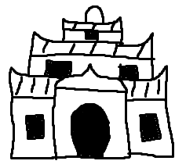
jan alasa li toki e ni
te tomo pi(ponasewi) li lon insa pi (makasisuli)
zz tomo ni^ li pona e jan
zz taso jan soweli monsuta li utala e tomo pi(pona sewi) li moli e jan
zz o moli e jan soweli monsuta
zz o pona e tomo pi(pona sewi) a
zz sina wile ni^ la o lukin e kasi walo to
kulupu pona li kute e jan alasa li wile ni^
ona li tawa ma kasi suli li alasa e tomo pi(pona sewi)
kasi ale li laso lon ma kasi suli
tenpo ale la soweli li lon insa pi (ma kasi suli)
taso tenpo ni la kulupu pona li kute ala e soweli e ijo e ale
kalama li lon ala
te ni^ li nasa to
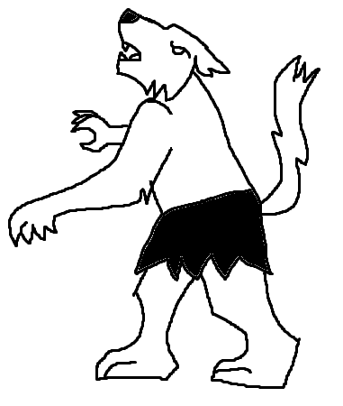
tenpo kama lili la kulupu pona li lukin e kasi suli walo
kasi ni^> li wan taso
kulupu pona li tawa kasi walo li lukin e kiwen suli mute
kiwen suli wan li jo e lupa sike
taso kulupu pona li ken ala kama lon insa tan ni8
ona li open ala
lupa sike li jo e sitelen pi (luka loje)
tenpo pini la jan ante li sitelen e ni^ kepeken telo sijelo loje
ona li ken awen lon insa tomo
kulupu pona li alasa open e lupa sike kepeken ilo
taso ilo ale li ken ala open e lupa sike
kulupu pona li sona ala e nasin pi open lupa li awen
tenpo pimeja li kama la mun li suno tawa ma kasi suli
suno mun li lon lupa sike
ni^ la lupa sike li open kepeken wawa nasa
kulupu pona li kama lon insa tomo
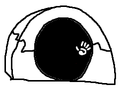
kulupu pona li lon tomo pi (pona sewi) li ken ala lukin e ale tan ni
ale li pimeja
jan pona pi (kulupu pona) li suno e tomo kepeken palisa seli
tomo anpa li jo e kiwen sijelo tan jan moli e telo sijelo loje
sinpin li jo e kiwen soweli tu wan
kiwen soweli wan li jo e lipu ni
te o mu tawa mi mute
zz o pana e telo sijelo loje tawa mi mute
zz ni^ la kon soweli li kama li pona tawa sina to
meli pakala li lape lon poka pi (kiwen soweli) li ken ala tawa tan ni
linja wawa li wan e luka ona e kiwen soweli
kulupu pona li pona e ona la meli pakala li toki e ni
te mi meli [loje utala nasa anpa]
zz tenpo pini la mi en jan olin mi [ken anu nena] li alasa e moku lon insa pi (ma kasi suli)
zz jan soweli monsuta li kama li pakala e mi
zz jan [ken] li lon tomo ante to
kulupu pona en meli [loje] li tawa
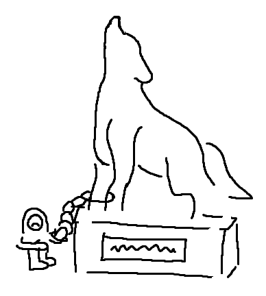
kulupu pona li kama tawa tomo pi (poki sike telo)
poki ni^> li jo e telo sijelo loje pimeja e sitelen ni
te pakala li awen e ale to
kulupu pona li pilin e kon moli
jan wan pi kulupu pona li wile sona e telo ni^ li moku e ona li pilin ike
tomo ni li nasa
kulupu pona li tawa
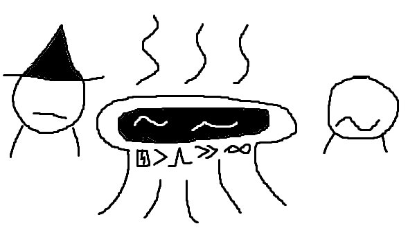
kulupu pona li kama lon insa pi (tomo ante)
tomo ni^ li jo e kasi kule mute e lupa lon insa
mun li ken suno tan ni
ona li lon sewi lupa
lupa ni^> li jo e anpa suli
jan li tawa anpa ni^ la ona li pakala
kulupu pona li kute e kalama
jan li toki tan lupa
te o pona e mi
zz jan ike li poki e mi lon lupa ni to
meli [loje utala nasa anpa] li toki e ni
te jan ni li jan olin mi [ken anu nena]
zz o pona e ona to
kulupu pona li lukin e tomo
ona li kama lukin e poki kiwen li open e ona
poki kiwen li jo e linja e lipu
jan pali pi (lipu ni) li tan tomo pi (pona sewi)
ona li sitelen e ni
te o kama pona tawa jan tu wan
zz jan tu wan li wile jo e telo wawa nasa pi (pona awen)
zz taso jan tu wan li wile ala pana e pakala
zz kon soweli li pilin e ike tan jan tu wan ni^<
zz tenpo suno kama la jan tu wan o weka to
kulupu pona li kama jo e linja
sin la kulupu pona li kute e kalama nasa tan tomo wan pi (lupa sike) li tawa ona
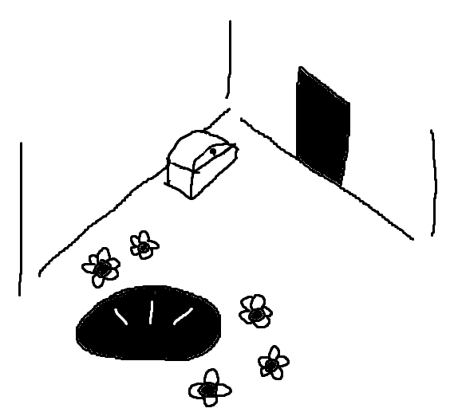
kulupu li kama tawa tomo pi (lupa sike) li lukin e ni
jan majuna en jan nasa li kama lon tomo pi (pona sewi)
meli [loje utala nasa anpa] li sona e jan majuna li toki e ni8
te ona li mama mije mi [esun palisa esun nasa]to
jan [esun] li pilin nasa li toki e ni
te mi alasa e pona to
jan nasa li pilin nasa li mu li ken ala toki pona tan ni
ona li moku e telo nasa mute
te jan nasa li wile pona to
taso jan nasa li wile ala pona li wile lape
kulupu pona li kama pona e jan tu sin
ona mute li tawa
tomo pi jan [ken anu nena] la kulupu pona li kepeken palisa lon lupa suli
ni^> la ona mute li ken tawa lupa tawa jan [ken]
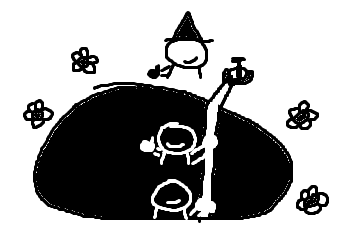
kulupu pona li lon tomo anpa
jan [ken anu nena] li kama jo e luka tu pi meli [loje utala nasa anpa] e luka tu pi jan majuna [esun palisa esun nasa]
ona mute li toki e ni tawa kulupu pona
te mi mute li kulupu mama li kama tawa tomo pi (pona sewi) tan ni
zz sijelo mi mute li pilin ike
zz kon soweli li lon insa pi (sijelo mi mute)
zz mun li kama la mi mute li kama jan soweli monsuta li pilin ike li wile pakala e jan li wile moku e telo sijelo loje
zz taso mi sona e ni
zz ni^ li ike mute mute aaa
zz kulupu mama mi li wile pilin pona la mi mute li kama tawa tomo ni
zz taso jan pi (pona sewi) li wile ala pona e mi
zz tenpo pimeja kama la kulupu mama mi li kama jan soweli monsuta li moli e jan pi (pona sewi) li pilin ike mute mute aa
zz o lukin e ni to
kulupu pona li lukin
sinpin li jo e sitelen li toki e ni
te sina wile pali e telo wawa nasa pi (pona awen) la
zz o pana e telo sewi tawa lupa sike telo
zz jan ante li wile la ona o pana e telo sijelo loje ona tawa lupa sike telo
zz o wan e telo ni^ to
jan [ken] li toki e ni
te jan pi (pona sewi) li wile ala pana e telo sijelo loje ona
zz tenpo pimeja kama la mi moli e ona li pana e telo sijelo loje ona tawa lupa sike telo
zz taso telo sijelo ni li wile ala
zz mi ken ala pali e telo wawa nasa pi (pona awen)
zz o pona e mi to
kulupu pona li sona e ni
jan majuna [esun] li kama e jan nasa tan ni
ona li wile kama jo e telo sijelo loje ona
kulupu pona li weka e jan nasa
jan ale li kama tawa tomo pi (lupa sike telo)
jan wan li pana e telo sewi tawa lupa sike telo
jan ante li pana e telo sijelo tan sijelo ona tawa lupa sike telo
jan pona li wan e telo ni^
kulupu mama pi sijelo ike li moku e telo ni^
ona li pilin nasa
taso tenpo lili la ona li pilin pona mute
te pona o tawa sina mute a to
kulupu pona en kulupu mama li tawa ma pi (tomo jan)
kulupu mama li pilin ike mute tan ni
ona li moli e jan pi (pona sewi)
jan lawa li kama tan ma pi (tomo jan) li pona e kulupu mama li toki e ni
te sina wile la sina ken kama jan sin pi (pona sewi) zz to
kulupu mama li wile e ni^ li ni^
kulupu pona li kama jo e mani mute e pona mute tan jan ale
ale li pona
jan alasa li toki e ni
“tomo pi pona sewi li lon insa pi ma kasi suli
tomo ni li pona e jan
taso jan soweli monsuta li utala e tomo pi pona sewi li moli e jan
o moli e jan soweli monsuta
o pona e tomo pi pona sewi a
sina wile ni la o lukin e kasi walo”
kulupu pona li kute e jan alasa li wile ni
ona li tawa ma kasi suli li alasa e tomo pi pona sewi
kasi ale li laso lon ma kasi suli
tenpo ale la soweli li lon insa pi ma kasi suli
taso tenpo ni la kulupu pona li kute ala e soweli e ijo e ale
kalama li lon ala
“ni li nasa”
tenpo kama lili la kulupu pona li lukin e kasi suli walo
kasi ni li wan taso
kulupu pona li tawa kasi walo li lukin e kiwen suli mute
kiwen suli wan li jo e lupa sike
taso kulupu pona li ken ala kama lon insa tan ni
ona li open ala
lupa sike li jo e sitelen pi luka loje
tenpo pini la jan ante li sitelen e ni kepeken telo sijelo loje
ona li ken awen lon insa tomo
kulupu pona li alasa open e lupa sike kepeken ilo
taso ilo ale li ken ala open e lupa sike
kulupu pona li sona ala e nasin pi open lupa li awen
tenpo pimeja li kama la mun li suno tawa ma kasi suli
suno mun li lon lupa sike
ni la lupa sike li open kepeken wawa nasa
kulupu pona li kama lon insa tomo
kulupu pona li lon tomo pi pona sewi li ken ala lukin e ale tan ni
ale li pimeja
jan pona pi kulupu pona li suno e tomo kepeken palisa seli
tomo anpa li jo e kiwen sijelo tan jan moli e telo sijelo loje
sinpin li jo e kiwen soweli tu wan
kiwen soweli wan li jo e lipu ni
“o mu tawa mi mute
o pana e telo sijelo loje tawa mi mute
ni la kon soweli li kama li pona tawa sina”
meli pakala li lape lon poka pi kiwen soweli li ken ala tawa tan ni
linja wawa li wan e luka ona e kiwen soweli
kulupu pona li pona e ona la meli pakala li toki e ni
“mi meli Luna
tenpo pini la mi en jan olin mi Kan li alasa e moku lon insa pi ma kasi suli
jan soweli monsuta li kama li pakala e mi
jan Kan li lon tomo ante”
kulupu pona en meli Luna li tawa
kulupu pona li kama tawa tomo pi poki sike telo
poki ni li jo e telo sijelo loje pimeja e sitelen ni
“pakala li awen e ale”
kulupu pona li pilin e kon moli
jan wan pi kulupu pona li wile sona e telo ni li moku e ona li pilin ike
tomo ni li nasa
kulupu pona li tawa
kulupu pona li kama lon insa pi tomo ante
tomo ni li jo e kasi kule mute e lupa lon insa
mun li ken suno tan ni
ona li lon sewi lupa
lupa ni li jo e anpa suli
jan li tawa anpa ni la ona li pakala
kulupu pona li kute e kalama
jan li toki tan lupa
“o pona e mi
jan ike li poki e mi lon lupa ni”
meli Luna li toki e ni
“jan ni li jan olin mi Kan
o pona e ona”
kulupu pona li lukin e tomo
ona li kama lukin e poki kiwen li open e ona
poki kiwen li jo e linja e lipu
jan pali pi lipu ni li tan tomo pi pona sewi
ona li sitelen e ni
“o kama pona tawa jan tu wan
jan tu wan li wile jo e telo wawa nasa pi pona awen
taso jan tu wan li wile ala pana e pakala
kon soweli li pilin e ike tan jan tu wan ni
tenpo suno kama la jan tu wan o weka”
kulupu pona li kama jo e linja
sin la kulupu pona li kute e kalama nasa tan tomo wan pi lupa sike li tawa ona
kulupu li kama tawa tomo pi lupa sike li lukin e ni
jan majuna en jan nasa li kama lon tomo pi pona sewi
meli Luna li sona e jan majuna li toki e ni
“ona li mama mije mi Epen”
jan Epen li pilin nasa li toki e ni
“mi alasa e pona”
jan nasa li pilin nasa li mu li ken ala toki pona tan ni
ona li moku e telo nasa mute
“jan nasa li wile pona”
taso jan nasa li wile ala pona li wile lape
kulupu pona li kama pona e jan tu sin
ona mute li tawa
tomo pi jan Kan la kulupu pona li kepeken palisa lon lupa suli
ni la ona mute li ken tawa lupa tawa jan Kan
kulupu pona li lon tomo anpa
jan Kan li kama jo e luka tu pi meli Luna e luka tu pi jan majuna Epen
ona mute li toki e ni tawa kulupu pona
“mi mute li kulupu mama li kama tawa tomo pi pona sewi tan ni
sijelo mi mute li pilin ike
kon soweli li lon insa pi sijelo mi mute
mun li kama la mi mute li kama jan soweli monsuta li pilin ike li wile pakala e jan li wile moku e telo sijelo loje
taso mi sona e ni
ni li ike mute mute a
kulupu mama mi li wile pilin pona la mi mute li kama tawa tomo ni
taso jan pi pona sewi li wile ala pona e mi
tenpo pimeja kama la kulupu mama mi li kama jan soweli monsuta li moli e jan pi pona sewi li pilin ike mute mute a
o lukin e ni”
kulupu pona li lukin
sinpin li jo e sitelen li toki e ni
“ sina wile pali e telo wawa nasa pi pona awen la
o pana e telo sewi tawa lupa sike telo
jan ante li wile la ona o pana e telo sijelo loje ona tawa lupa sike telo
o wan e telo ni”
jan Kan li toki e ni
“jan pi pona sewi li wile ala pana e telo sijelo loje ona
tenpo pimeja kama la mi moli e ona li pana e telo sijelo loje ona tawa lupa sike telo
taso telo sijelo ni li wile ala
mi ken ala pali e telo wawa nasa pi pona awen
o pona e mi”
kulupu pona li sona e ni
jan majuna Epen li kama e jan nasa tan ni
ona li wile kama jo e telo sijelo loje ona
kulupu pona li weka e jan nasa
jan ale li kama tawa tomo pi lupa sike telo
jan wan li pana e telo sewi tawa lupa sike telo
jan ante li pana e telo sijelo tan sijelo ona tawa lupa sike telo
jan pona li wan e telo ni
kulupu mama pi sijelo ike li moku e telo ni
ona li pilin nasa
taso tenpo lili la ona li pilin pona mute
“pona o tawa sina mute a”
kulupu pona en kulupu mama li tawa ma pi tomo jan
kulupu mama li pilin ike mute tan ni
ona li moli e jan pi pona sewi
jan lawa li kama tan ma pi tomo jan li pona e kulupu mama li toki e ni
“sina wile la sina ken kama jan sin pi pona sewi”
kulupu mama li wile e ni li ni
kulupu pona li kama jo e mani mute e pona mute tan jan ale
ale li pona
jan Tumu
jan li jo ala / e mani mute la / kiwen mani li ken wawa. / taso alasa / pi mani sin ni la / ma li ken wile utala!
tenpo li tawa.
mi tawa lon nasin
la ale li sama lon ma.
mun anu suno
la palisa kasi
li weka e kule tan ma.
kasi li sewi
li lipu e sewi
la mi sona ala e tenpo.
pimeja taso
li nasa e lukin.
mi lukin e tawa lon ale.
ma li ko taso
li alasa moku
e noka e sijelo ale.
ma la jan taso
li mi pi ma weka.
mi weka tan nasin lon pimeja.
nasin li weka!
mi wawa e noka
la noka li utala anpa.
kiwen li pana
e noka e ale
tan ma tawa kon tawa anpa.
anpa la telo
li wawa li tawa
e mi sama kala lon nasin.
telo en lete
li moku e mi
sama kala lon pimeja kasi.
lawa en luka
li awen lon kon
la mi luka e linja tan kasi.
luka en linja
li sewi e mi
tawa ma la mi lukin lon telo.
mi kama lukin
lon pimeja telo
e ijo e kule e jelo.
ijo la selo
li suno e telo
lon linja pi sitelen jelo.
ijo o mani
o kiwen tan nena
o pona e kulupu mi.
kulupu mi
li jo ala e mute
li wile e moku e mani.
ona li jo
e ma lili a taso
e tomo e soweli mani.
soweli la
mani ante li ala
la ona li weka tan kulupu.
taso ni jelo
li esun e mute
e moku e mani e ma.
jelo la telo
li lili a taso.
mi alasa anpa tan ma.
kepeken linja
la mi kama tawa.
mi telo e noka mi taso.
luka wan taso
li awen e linja
li awen lon sewi e sijelo.
luka wan ante
li kama lon telo
li pilin lon telo e sijelo.
ona li kiwen
li pana e jelo
li kama lon poki tan luka.
taso mi lukin
e kiwen wan ala
e kulupu suli lon anpa!
luka li pilin
la telo li suli
la linja li pakala anpa.
telo li kama
lon uta lon ale.
mi pilin e pimeja taso.
“sina lape
ala lape?”
mi kute e kalama toki.
mi kama lukin
e loje e pimeja.
“jan o kama toki!”
sewi la loje
en mun li lon utala.
“seme li ma sina?”
mi kama lukin
lon anpa lon sinpin
e jan pi len pimeja suli.
len li lon lawa
la luka li tawa
li telo e palisa suli.
mi en jan toki
li tawa lon supa
lon telo pi pakala mi.
jan la mi toki:
“a, seme li kama?
mi kama lon seme tan telo?”
“supa ni
li tomo mi.
mi jan pi nasin telo.
telo la
mi alasa
e moku sin e jan.”
“mi jan taso
pi ma ni.
ma sina li ma seme?”
“mi tan ma weka
pi kulupu lili.
jan kulupu sina li seme?”
ni la jan nasa
li kalama ala
li weka e sinpin tan mi.
ona li lukin
lon poka ma telo
lon insa pi pimeja kasi.
ijo li pana
e walo e jelo
tan monsi pi palisa kasi.
ijo li mute
li kiwen tan tomo
tan tenpo pi kulupu ona.
“kulupu
pi mama mi
li pali e ma tomo.
wawa ma
li pakala
li kama kiwen tomo.
kiwen ni
li kule a
e ma e kulupu.”
“kule jelo
sama suno
li lon sewi tomo.
walo wawa
li lon nasin
li lon sinpin tomo.
len en ale
pi jan ale
li lon mute kule.”
“soweli
pi mute wawa
li lon ma li mani.
pana jan
la poki moku
li tan kiwen mani.
kasi ma
en pan li suwi
tawa soweli.”
“tenpo ni
la soweli
en kulupu li moli.
tomo ma
li pakala
lon ma lon telo moli.”
“sina ken ala
ken toki e pakala?
seme li pini e tenpo?”
sama jan moli
la ona li pana
e mu tawa telo lon anpa.
supa li weka
tan kasi tan kule
la ona li toki e anpa.
“jan li ike
tawa ma
la ma li ike sama.”
telo li nena
tan ijo lon anpa
la supa li awen lon kiwen.
mi la len poki
li utala seli
tan mani pi sijelo kiwen.
nena li anpa
la sijelo suli
li kama lon sewi tan telo.
sijelo kala
li suli li sewi
li weka e sewi e suno.
kala la selo
li kulupu kiwen
li pana e sitelen suno.
kala en mani
la kule li sama.
mi pilin e suno lon sijelo.
mi lukin ala
e jan pi len pimeja.
nasa la len li lon supa.
kala la suno
li toki e sitelen.
nimi li suno e supa.
ni la mi kute
e kule e pimeja.
suno li seme e mi?
kiwen la suno
li kalama lukin
e toki lon pilin lon insa:
“mi ma.
sina
lon insa.
sina
weka
e kiwen.”
“esun
ala
o tan mi.
jan li
moli
e kon mi.
moli
sina
o esun.”
kala li kama
li open e uta
pi palisa utala mute.
mi wile weka
la uta li kama
la ale li pimeja mute.
uta li pini
la poki mi taso
li suno lon pimeja kala.
palisa nasa
li tawa lon uta
li tawa e sijelo mi.
kiwen o wawa
o kama tan poki
o pona e pakala mi.
luka la kiwen
li pakala lupa
e kiwen pi sijelo palisa.
nasin li open
lon palisa lupa
la mani li pakala tu.
wan li lon luka
la telo li weka
e sijelo sin nanpa tu.
kala li weka
la mi tawa suno.
mi lukin e kasi e nasin.
tenpo li tawa
la kulupu pona
en mi li ken esun e ma.
mani li lili
la lili li wawa
li pakala ala e ma.
lili li suli
lon kepeken pona
la mani li pona e tenpo.
jan Iwi
pipi lili li kama weka tan kulupu pipi li pilin ike. ona li alasa e kulupu la pona li kama ala. ona li ken ala alasa lon ona taso, la ona o toki tawa ijo ante pi ma kasi...
mi wile toki tawa sina. mi wile toki e pipi lili wan. o lukin:
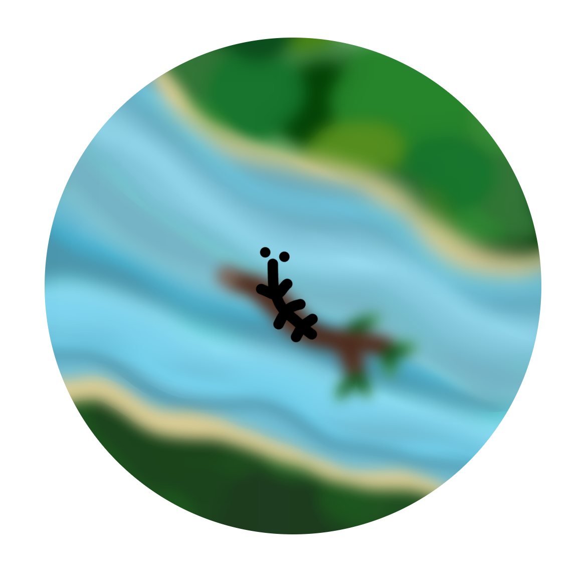
pipi lili li lon kulupu suli pipi.
telo li kama li tawa wawa li weka e tomo pipi.
pipi ale pi kulupu ni li kama weka.
tenpo ni la pipi lili li taso.
pipi lili li wile lon kulupu li alasa e ona.
tenpo mute la ona li tawa lon ma kasi. ona li alasa e pipi taso ona li lukin e kasi mute e telo mute e pipi ala. ona li toki ni: ‘pipi o! sina lon ala lon?’
waso pimeja suli li kute li toki: ‘sina lon la, pipi li lon, pipi lili o!’
pipi li toki: ‘mi alasa e pipi pi mi ala a! kulupu mi li weka. mi alasa e ona.’ waso li toki: ‘ni la, mi ken ala pana e sona wile tawa sina. o alasa pona, pipi lili o!’ waso li tawa luka li weka lon sewi.
waso suli li toki suwi tawa pipi lili. waso pona a!
pipi lili li lukin e waso lili mute. waso ni li lon poka pi kasi suwi mute. ona li moku e telo kasi suwi sama pipi.
pipi li toki insa: ‘waso ni li sama pipi! ken la ona li ken pana e sona wile tawa mi’
pipi li kama lon poka waso li toki: ‘waso lili o! mi alasa e kulupu pipi! sina lukin ala lukin e kulupu mi?’
waso wan li toki: ‘pipi li lon ala ni. telo suwi ni li telo suwi mi! o weka! sina weka ala la mi pakala e sina kepeken uta palisa mi!’
pipi li sona e ni: waso lili li toki lon. ni la, ona li tawa weka. pipi lili li lukin e soweli suli. soweli ni li lape lon suno seli. ona li taso sama pipi lili.
pipi li toki insa: ‘soweli li taso sama mi. uta ona li palisa ala li ken ala pakala e pipi! ni la mi o toki tawa ona’
pipi li kama lon poka soweli li toki: ‘soweli o! mi alasa e kulupu pipi! sina lukin ala lukin e kulupu mi?’
soweli li toki: ‘pipi mute ike li lon a! ona li pakala e selo mi li wile moku e telo sijelo mi. o weka! sina weka ala la mi pakala e sina kepeken linja monsi mi!’
pipi li sona e ni: soweli suli li toki lon. ni la, ona li tawa weka.
pipi lili li lukin e akesi laso. akesi ni li tawa lon telo li mu pona. ona li sama ala pipi.
pipi li toki insa: ‘akesi ni li sona pona e telo. telo li tawa e kulupu mi. ken la akesi li sona e ni: kulupu mi li lon seme? mi o alasa e sona ni!’
pipi li kama lon poka telo li toki: ‘akesi o! mi alasa e kulupu pipi! sina lukin ala lukin e kulupu mi?’
akesi li toki: ‘pipi mute suwi li lon a! mi lukin ala e kulupu sina, taso sina moku pona tawa mi. o kama! sina kama ala la mi alasa e sina kepeken linja uta wawa mi!’
pipi li sona e ni: akesi laso li toki lon. ni la, ona li tawa weka.
waso lili en soweli en akesi li toki ike tawa pipi lili. ona o seme lon tenpo ni?
pipi lili li pilin ike suli li toki pilin: ‘kulupu mi li weka a! mi taso. mi ken ala ante e ni. mi o seme?’
waso pimeja suli li kute e ona li kama sin li toki: ‘pipi lili o! seme li kama e pilin ike sina?’
pipi li toki: ‘tenpo suli a la mi alasa e kulupu pipi mi, taso mi sona ala e ni: ona li lon seme? tenpo ni la mi lukin e pipi wan la mi pilin pona. taso pipi ala a li lon!’
waso li toki: ‘n… mi kin li lukin ala e pipi ante lon tenpo ni, taso mi sona e ni: tenpo kama poka la pipi wan li lon ma wan. mi ken pana e sona ni tawa sina: ona li lon ma seme?’
pipi li pilin pona wawa li toki: ‘o pana! mi wile sona!’
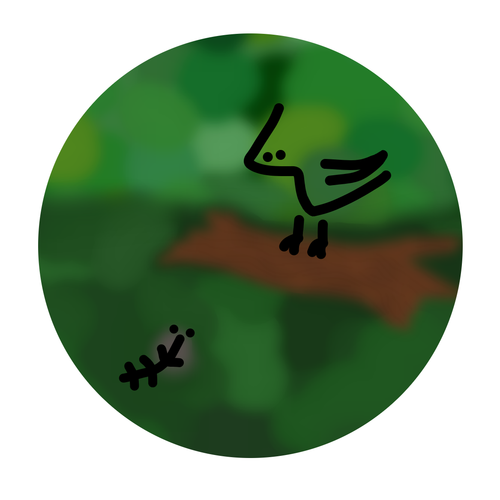
waso li toki: ‘o kama lon insa pi uta mi! sina kama ala la mi ken ala pana e sina tawa ma pipi.’
pilin pipi li wawa a la ona li toki insa ala. ona li tawa li kama lon insa pi uta waso.
ken la, sina sona e ijo kama. pipi li lili li wawa ala. waso li suli li sona. o lukin:
pipi li lon uta waso la, waso li moku e ona.
ona li mu musi: ‘a a a!’
mu ona li wawa!
ona li toki: ‘pipi lili o, mi toki lon! mi sona e ma pipi! pipi li sina! ma pipi li lon insa mi a!’
waso ike a!
kapesi Pake
ike mute li lon poka pi jan Pan la ona li wile pona e ike kulupu e ike lon kepeken nasin sin wawa. taso, jan pali li pali e lipu pi jan Pan, la lipu ni li ken ala ken pona tawa utala musi?
toki, jan Apeja o! tenpo pini la sina sitelen e ni : 「o lon e lipu musi sin! o alasa kulupu e musi sin tan jan ale! lipu musi pi pona wawa la mi pana e ona tawa lipu · ni li utala mi musi」 · pona! tawa utala sina pi toki musi la mi pini sitelen e lipu musi mi · mi pini e ona la o musi pona! lipu musi ni la mi toki tawa sina e musi ni : jan wan li pali e pali musi tan pilin nasa ona · musi ni li tawa mi tan pana pi kulupu mama open · kulupu mi li awen e musi ona ale · sina lukin e pali ni la sina olin e pali ni la o pana e ona tawa lipu sina pi musi suli! pona o tawa sina ·
~ jan pali
ma li wile olin e ni : sina pakala e sina sama · mi mute li lon kon pi sama ala · mi mute li lon kon pi ante ala · ona li sama ante · ona li ante sama · ale la ona li ala · ni li nasin · sina sona · nasin li tawa ma li tawa tenpo li tawa kulupu · ale la nasin li tawa jan · ale la nasin li ike · taso, jan li wile pilin e pilin pona tawa nasin · tan ni la jan li toki e powe ni : 「nasin ni li ike lili · kin la nasin ale ante li ike suli! sona pi ike ni li suli ala · jan ale li sona e ike lon ijo ante! nasin ni taso li ike lili · ike lili li sama pona lili · tenpo la pona lili li sama pona · pilin la pona li sama pona mute · a · sin li pona mute tan ni!」 nasin li ale · ona li lon moku sina · ona li lon len sina · ona li lon pali sina · ona li lon selo sina · sina ona · ale la nasin li ale · jan li alasa e nasin sin tan ni : sona ona li weka · ijo li sin anu majuna · tawa nasin la ijo ale li sama wan · a · jan li wawa lili tawa nasin · ona o alasa ala ·
nasin li moku e ken ale · nasin li esun e ken sama · nasin li ijo seme li ken seme? o lukin e sona ni : nasin li majuna ala li sin ala li tawa tenpo pi kon ala ·
nasin li tenpo pona li tenpo ike ·
nasin li sona suli li sona lili ·
nasin li pilin awen li pilin weka ·
nasin li suno tenpo li pimeja tenpo ·
nasin li jo mute li jo ala ·
nasin li wile suwi li wile apeja ·
nasin li tawa sewi li tawa seli ·
nasin pi jan ni li kama wawa li kama jaki la nasin li suli taso anu lili taso. nasin li sama ijo ante ala tawa ni. ona li nasa ala nasa? jan o seme tawa nasin?
taso jan ale ala li pilin sama · jan Pan li wile ante · kulupu mama ona li ike pilin tawa tenpo · jan sama ona li ike pilin tawa kon · jan Pan li wile pona · ona li ante e ijo pi nasin jan · pilin insa ona li ni : 「ante wan o kama lon」 · ante ni li seme? jan Pan li jan seme? o awen · jan Pan li jan lipu · lipu li pali ona · jan Pan li alasa e lipu · jan Pan li pana e lipu tawa tomo sona · jan ale li lukin e lipu wile lon tomo sona sama · jan ala o pana e mani tawa kepeken pi lipu ni · jan li mama li lawa e ni · ni li pali pi jan Pan · jan Pan li jan wawa ala kepeken ni · lipu taso li lon e pilin pona tawa ona · kulupu ona li ala · jan mama ona li moli · jan sama ona li weka li awen weka · soweli kin li suwi ala tawa ona · lipu taso li olin pi jan Pan · luka ona li sama ilo · luka li jo e lipu taso · lipu li wawa ona · jan Pan li sama jan ale kin · jan ale li wan taso lon tomo ona · jan ale li luka ala e jan ante · jan li olin e jan kepeken ilo kon taso · kulupu li kama weka · kulupu li nasa · sona li mani tawa jan ni · ilo li sewi ona · ni li nasin · taso pali pi tomo lipu li lili e mute pi jan pona tawa jan Pan · jan pona la nanpa li ala · mama taso li lon poka pi jan Pan · mama li ken suwi · tenpo la mi olin e mama mi · tenpo la mi wile moli e mama mi · mi ale li kepeken pilin mute tawa mama · jan Pan li sama jan ale kin · tenpo ona pi moli ala la mama wan pi jan Pan li sona ala e nasin ona : 「jan mute li nasa e insa ona kepeken telo anu moku · sina nasa e insa sina kepeken pali · kin la sina pali tawa mani ala!」 mama ni li musi ala · toki insa ona li suwi taso · kepeken tenpo suli la mama ni li wawa tan toki insa · ni li nasa ona li nasin ona : ona li jan lili la ona li sona e lili ona · mama pi jan Pan li jo ala e sona sin e kon ante e mani mute e jan pona · mama li sona e weka pi ijo ni la mama li pakala pilin · tenpo ale la mama li toki e pakala pilin ona · tawa ona la kulupu ale o ike taso o awen ike · kin la mama li wile toki e ike wile ni tawa jan ale lon poka ona · tenpo suno ni li ante ala · jan Pan li kute e toki jaki sama lon tomo mute ·
「sina ike sama, mama o · wile mi la wile sina la weka suli li lon · pali li pona mi · mani li ijo taso」 · mama li kute ala e jan Pan : 「jan lili ale li sama · sina pilin e pona tawa sina · sina la tenpo li tenpo pi pona wile · a a a! pona wile li tan mama sina taso! mi mute li ken e wile tawa sina · lawa sina li awen open · pilin sina li awen open kin · sina sona ala e mute pona anu mute ike · sina la ijo ale li suli taso tan ni : ijo ale li sin tawa sina · a!」 mama li toki ala lon tenpo suli · mama li kepeken tenpo pi toki ala tawa wawa · insa mama li lape tan pini ni · taso toki ala li pini : 「o ante · jan sama sina li pali e ijo musi · sina o alasa musi kin」 · oko pi jan Pan li kama suli · 「jan Lan li pakala li pakala li pakala li pakala! ona li sitelen taso e sitelen pilin e sitelen ike · sina wile weka e moku tan insa sina la o oko e ona! mi o sama ona lon tenpo ala!」 ike la pilin li ike tawa mama li ike tawa jan Pan kin · nasin toki li wile e wile wan tawa jan · jan li alasa e lawa pi jan kute · jan li toki pona la jan kute li kama anpa · jan li toki ike la jan kute li open e utala toki anu utala luka · jan Pan li toki ike · 「jan Pan o! mi lon e sina tan seme? sina sona ala sona e mani weka mi e tenpo weka mi? ona ale o tawa sina pini · taso sina awen wile kama ike tawa mi! o pini e uta! o pini e toki! sina olin ala olin e mi! a! oko mi o pana ala pana e telo lawa? sina o pilin e apeja · o ike ala tawa mama sina! kin la sina toki nasa · ike seme li tawa jan sama sina? sina tu li pali sama · taso jan Lan li jo e mani tan pali · sina jo ala」 · 「mi jo e wawa, mama o! a! jan Lan li mi ala · pali ona li powe · ona li sitelen e ijo · mi alasa e sitelen · ijo ni tu li ijo ante! kin la mi alasa e lipu · lipu li jo e sitelen mute · jan Lan li pali e lipu la sitelen wan li lon」 · ona li awen · jan tu li utala kepeken nimi li utala kepeken pilin · utala luka la ni li pona · utala kiwen la ni li pona suli · taso utala ala la ni li pona ala · a · o pilin ala e pilin ike tawa jan ni · nasin li jaki tawa ona · nasin li wawa li wawa tawa ike · nasin taso li lawa e ken tawa jan ale · taso nasin li open lon tenpo seme? nasin li open kepeken seme? nasin li open tan seme? kulupu wan li sona pini e alasa ni sona : ona li jan majuna · tenpo li ala e ijo mute · a · tenpo li ken ala anpa e lawa insa · jan li kama e sona lon ma ale · mute pi jan majuna li lili lon nasin · taso ona li awen sona e open pi nasin ni · tenpo pi jan lili la jan Pan o kute e ni tan mama mama majuna :
“tenpo weka la ale li ante. kon li jaki ala. moku mute li ken. telo li laso sewi. tenpo weka li pona. a. ijo pona li awen ala. pakala wawa li kama li sin. sin ni li ala e linja moli e linja lon. tan ni la ijo moli en ijo lon li lon poka. ike mute li open tan sin ni. sin ni li open e tenpo ni: nasin li lon. tenpo ni la kon moli li awen. kon moli li tan ma moli . jan ala li ken lukin e ona kepeken oko. taso kon moli li ken lukin e jan. ona li alasa luka e jan. kon moli li luka e jan la seli suli li lon. kin la telo anpa li sin. ona li tawa anpa tan sewi. tenpo pini li ante tawa telo. telo pi tenpo sama li laso . ona li pona e sijelo. ona li pona e kasi. ona li ko e len. ona li musi tawa selo. taso telo li kama sin . tenpo n li nasa. sewi li pana e telo nasa tawa ma. telo anpa li nasa li sin tan ni. sin li nasa ike. telo li jelo. telo li wawa . telo li weka e tenpo tan selo. jan li lon telo anpa sin la jan li kama majuna kepeken tenpo ala. telo li majuna e jan ale e ijo ale . pakala ale li sama ni ala. telo sin ike li pakala sin. pakala ni li sama ijo ala. telo sin la kon moli la linja pakala la kulupu li ale en kulupu jan ale en kulupu pona ale li pini. ma tomo li jo ala e jan. jan li tawa ma anpa. jan ala li tawa lon noka. mute moku li lili. toki li kama nasa. moku li kama nasa. pipi taso pi pona ala li moku tawa jan. olin li kama nasa. soweli ale li moli. pilin pakala li tawa ijo ale li tawa nasin ale. pilin pakala ni li nasin.”
pilin nanpa wan la nasin li pakala e jan · pilin nanpa tu la weka moku li pakala e jan · linja moli nasin li seli e kasi ale e tomo soweli ale · pona ale li kama seli · taso tenpo pimeja pi suno ala la mun kin o weka ala weka? ala! pona li awen lon ike ken ale · wile jan li sama · ike li ken wawa · moku li ken jaki tawa uta · kulupu li ken weka tawa jan · taso pali li awen · pali o awen · jan Pan o awen kin · 「mama o pini e toki utala sina! mi kama e sina tawa utala ala · mi kama e sina tawa ni : mi pali e ijo tawa pona kulupu」 · tenpo suli li kama li weka · jan ala o toki lon toki sama · mama pi jan Pan li suli e uta lawa ona · mama la ona li kepeken lawa ona tawa pilin taso · lawa ona li kute e ijo lon tenpo lili · toki pi jan Pan li sama nasa tawa mama · insa kute o tawa nasin pilin taso · pilin o, wawa sina li tan seme? pilin o, sina sona awen lon ike pi lawa jan · tenpo la jan li pilin e ni : pilin li ona · taso jan en pilin jan li ijo tu · jan ale li kepeken pilin · o toki ala e nasa ni : 「pilin li weka tan lawa mi」 · toki ni li sona pakala · sina nasa tan sona pakala tawa pilin sina · jan li ken ala sona e insa kepeken pona la ona li alasa sama e pilin e sona e sewi e olin · insa li ni ala · insa li kon taso · taso jan pi mute ala li kepeken sona ni · mama pi jan Pan li kepeken ala sona ni : 「sina toki powe · kulupu ala li lon」 · jan Pan li sike e oko · 「kulupu li jan · mi tu li ken kulupu · nimi 「kulupu」 li suli ala · pali mi li suli · tenpo sike mute la mi wile kama e ante wan tawa nasin · tenpo ni la mi pini e ante wan ni」 ·
「musi, jan Pan o · ante ni li tawa ijo seme?」
「ona li ante pi nasin moku · mi sin e moku jan · mi la pipi pi nasin moku li ike tawa uta · taso pipi sin mi li suwi」 · 「a a a a! o apeja e sina sama · ni li ken ala · sina sona ala kepeken ilo · sona sina li lukin lipu taso · jan ala li sona suwi e pipi lon nasin ni」 sinpin mama li walo · taso sinpin pi jan Pan li awen sama · jan Pan li sona e nimi wile ale · 「ale li pona · pilin sina li wawa ala · sina kama olin e jaki uta tan pipi · ni la pipi suwi ale li tawa mi · pona! sina ken tawa weka」 ·
tenpo li tawa ijo ale · tenpo pi nasin moku sin li lon · tenpo pi toki utala li lon · jan sama sina la tenpo pi pilin ike li lon · tenpo telo li lon · tenpo linja li lon · tenpo pi tawa mama li lon kin · jan ale o sona e tenpo ona · sona ala la tenpo li sona e sina · ni li nasin · ni li sama jan ale kin · pali jan li ante ala lon tenpo · mama kin li pali sama tenpo ale · toki li pini la mama li anpa e jan Pan kepeken nimi jaki · mama li tawa tomo moku tan ken lukin pi pipi sin · tomo moku li jo taso e linja kiwen e pipi sin ala · jan Pan li luka e linja kiwen · kepeken tenpo ala la jan Pan li len e lawa mama kepeken linja · linja li weka e kon tan insa mama · sijelo li jo ala e kon · kon ala la mama en sijelo mama li tawa supa anpa ·
tenpo li tawa mama ale · tenpo pi lape ike li lon · tenpo pi alasa moli ken li lon · tenpo pi ike pi jan lili li lon · tenpo pi tawa ma li lon kin · jan ale o sona e tenpo ona · jan Pan li tawa e mama tawa sinpin tomo · ona tu li lon tomo ala li lon ma · moli li open tawa mama · anpa lawa ona li loje lon selo · oko ona li open ala · mama li sona e ni : pini li kama · sewi la telo anpa sin li kama kin · uta pi jan Pan li musi nasa e mu wawa a · ona li mu nasa · ona li mu kama · telo anpa sin li tawa jan ni tu · telo li len e selo · selo li lon telo la selo li kama majuna sama utala · tenpo sike ale li tawa weka tan jan sama pakala · kon jan li open moli sama apeja · selo li kama ko · sijelo pi ken lon li uta taso · 「mi ante e ijo wan, mama o! a! a! o oko e nasin moku sin! ona li pipi jan!」 pini tenpo li tawa ijo ale · 「ona li pipi jan!」
jan pali o! toki! mi wile e ni: tenpo suno sina li suwi. mi lukin e lipu sina. tenpo pimeja wan la, oko mi li alasa e nimi ona ali. tenpo pimeja sin la, lawa mi li sona insa e kon ona. sina o sona e ni: jan mute li pana e pali tawa kulupu pali mi. kulupu pali ni li kulupu e pali musi. pali musi li pona taso li wawa taso. pona ike ni li awen: kulupu mi li ken e pali pi mute lili. mi mute li ken ala e pali musi pi jan wan la, jan li ike ala. ni taso li lon: pali ona li ike. ali jan la, jan ali li ike lon tenpo!
sina pona tan ni: sina pini e pali. taso, mi jo e pilin tawa pali sina. pali ni li pona taso ala. o sona e ni lon tenpo ali: pali ni li ken kama pona. ike la, mi ken ala pana e pali ni tawa kulupu pali. kulupu pali li wawa e pali pi mute lili. sina wile e pali sina lon lipu pi kulupu pali la, pali sina o pona mute o pona wawa. ni la, mi alasa e ante wile ken tawa pali sina. ken wile ni li suli. o lukin e ante wile. lukin li pini la, o ante e pali sina. (nasin ante la, o ante ala e pali sina. ona li pali sina li pali mi ala! taso, o awen sona e ni: pali ni li ante ala la, jan ala o wile lukin e ona.)
ni li ante wile ken:
ni li wile ante ali. jan ala li ken sitelen e ijo pona anu ijo musi. taso, jan ali li ken alasa sitelen e ijo ni. o pona. o lukin pona, jan pali o!
~ jan Apeja
ma li wile olin e ni : sina pakala e sina. sama · mi mute li lon kon pisama ala · mi mute li lon kon pi ante ala · ona li sama ante · ona li ante sama · ali la ona li ala · ni li nasin. sina sona. nasin li tawa ma li tawa tenpo li tawa kulupu. ali la nasin li tawa jan. ale la nasin li ike · taso, jan li wile pilin e pilin pona tawa nasin · tan ni la jan li toki e lon ala ni: “nasin ni li ike lili.” kin la nasin ale ante li ike suli! sona pi ike ni li suli ala · jan ale li sona e ike lon ijo ante! nasin ni taso li ike lili · ike lili li sama pona lili · tenpo la pona lili li sama pona · pilin la pona li sama pona mute · a · sin li pona mute tan ni!」 nasin li ali. ona li lon moku sina · ona li lon len sina · ona li lon pali sina · ona li lon selo sina. sina ona. ali la nasin li ali. jan li alasa e nasin sin tan ni: sona ona li weka. ijo li sin anu sin ala. tawa nasin la ijo ali li sama wan. a. jan li wawa lili tawa nasin · ona o alasa ala · nasin li moku li esun e ken ali. · nasin li esun e ken sama · nasin li ijo seme li ken seme? o lukin e sona ni: nasin li sin ala ala li sin ala li tawa tenpo pi kon ala.
nasin li tenpo pona li tenpo ike ·
nasin li sona suli li sona lili ·
nasin li pilin awen li pilin weka ·
nasin li suno tenpo li pimeja tenpo ·
nasin li jo mute li jo ala ·
nasin li wile suwi li wile powe ·
nasin li tawa sewi li tawa seli ·
nasin pi jan ni li kama wawa li kama jaki la nasin li suli taso anu lili taso. nasin li sama ijo ante ala tawa ni. ona li nasa ala nasa? jan o seme tawa nasin?
taso jan ale ala li pilin sama · tenpo ali la nasin li pona mute. jan mute li lon nasin sama. taso o kama sona e sona pi jan wan. nimi ona li jan Pan. jan Pan li wile ante pali pona. pali pona ona li suli e kon. a! jan ali o pali pona e pona. ni li nasin tawa ali! jan la pali taso o suli. ijo ali ante o lili. jan Pan li sama. jan Pan la kulupu mama ona li ike pilin tawa tenpo sama. jan sama ona li ike pilin tawa kon. jan Pan li wile pona. ona li ante e ijo pi nasin jan. pilin insa ona li ni: “ante wan o kama lon.” ante ni li seme? jan Pan li jan seme? o awen. jan Pan li jan lipu. lipu li pali ona. jan Pan li alasa e lipu. jan Pan li pana e lipu tawa tomo sona. jan ali li lukin e lipu wile lon tomo sona sama. jan ala o pana e mani tawa kepeken pi lipu ni · jan Pan li mama li lawa e ni. ni li pali pi jan Pan. jan Pan li jan wawa ala kepeken ni. lipu taso li lon e pilin pona tawa ona. kulupu ona li lon ala. jan mama ona li moli · jan sama ona li weka li awen weka · soweli kin li suwi ala tawa ona · lipu taso li olin pi jan Pan. luka ona li sama ilo · luka li jo e lipu taso · lipu li wawa ona. jan Pan li sama jan ali kin. jan ali li wan. taso lon tomo ona · jan ale li luka ala e jan ante · jan li olin e jan kepeken ilo kon taso · kulupu li kama weka · kulupu li nasa · sona li mani tawa jan ni · ilo li sewi ona · ni li nasin. taso pali pi tomo lipu li lili e mute pi jan pona tawa jan Pan. jan pona la nanpa li ala lili. mama taso li lon poka pi jan Pan. mama li ken suwi. tenpo la mi ali li olin e mama pi mi ali. tenpo la mi wile moli e mama mi · mi ali li kepeken pilin mute suwi tawa mama. jan Pan li sama jan ali kin. tenpo ona pi moli ala la mama wan pi jan Pan li sona ala e nasin ona: “jan mute li nasa e insa ona kepeken telo anu moku. taso sina nasa e insa sina kepeken pali.” kin la sina pali tawa mani ala!」 mama ni li musi ala. toki insa ona li suwi taso.
kepeken tenpo suli la mama ni li wawa tan toki insa. ni li nasa ona li nasin ona: ona li jan lili la ona li sona e lili ona. mama pi jan Pan li jo ala e sona sin e kon ante e mani mute e jan pona · mama li sona e weka pi ijo ni la mama li pakala pilin · tenpo ali la mama li toki e pakala pilin pilin pakala ona. tawa ona la kulupu ali o ike pona taso o awen ike pona. kin la mama li wile toki e ike wile pona ni tawa jan ali lon poka ona. tenpo suno ni li ante ala. jan Pan li kute e toki jaki suwi sama lon tomo mute. jan Pan li olin e kute ni. jan Pan li jan sona. jan sona li sona e ni: mama ona li wawa mute tawa lawa li wawa mute tawa insa. tan ni la jan Pan li kute mute e toki tan mama ona. ni li lon tenpo suno ni kin.
“sina ike sama sona mute, mama o. wile mi la wile sina la weka suli ala li lon. pali li pona mi. kin la pali li pona sina.” mani li ijo taso」 · mama li kute ala e jan Pan: “jan lili ali li sama li pona. sina pilin e pona tawa sina. sina la tenpo li tenpo pi pona wile. a a a! pona wile li tan mama sina taso! mi mute li ken e wile tawa sina. lawa sina li awen open. pilin sina li awen open kin. sina sona ala e mute pona anu mute ike. sina la ijo ali li suli taso tan ni: ijo ali li sin tawa sina. a!” mama li toki ala lon tenpo suli. mama li kepeken tenpo pi toki ala tawa wawa. insa mama li lape tan pini ni. taso toki ala li pini: “o ante ala! jan sama sina li pali e ijo musi. sina kin o alasa musi kin. oko pi jan Pan li kama suli · 「jan Lan li pakala li pakala li pakala li pakala! ona li sitelen taso e sitelen pilin e sitelen ike · sina wile weka e moku tan insa sina la o oko e ona! mi o sama ona lon tenpo ala!」 ike la pilin li ike tawa mama li ike tawa jan Pan kin · nasin toki li wile e wile wan tawa jan · jan li alasa e lawa pi jan kute · jan li toki pona la jan kute li kama anpa · jan li toki ike la jan kute li open e utala toki anu utala luka · jan Pan li toki ike · jan Pan o! mi lon e sina tan seme? sina sona ala sona e mani weka mi e tenpo weka mi? ona ale o tawa sina pini · taso sina awen wile kama ike tawa mi! o pini e uta! o pini e toki! sina olin ala olin e mi! a! oko mi o pana ala pana e telo lawa anu seme? sina o pilin ala e pilin ike. o ike ala tawa mama sina! o ike ala tawa jan ali! kin la sina o toki nasa ala. ike seme li tawa jan sama sina? ona li ike ala a. sina tu li pali sama.” taso jan Lan li jo e mani tan pali. sina jo ala」 · jan Pan li pilin pona tan toki ni. jan Pan li jan lili pona. jan Pan kin li toki. “mi jo e wawa, mama o! a! jan Lan li mi ala · pali ona li lon ala. ona li sitelen e ijo · mi alasa e sitelen · ijo ni tu li ijo ante! kin la mi alasa e lipu. lipu li jo e sitelen mute.” jan Lan li pali e lipu la sitelen wan li lon」 · ona tu li awen. jan tu li utala kepeken nimi li utala kepeken pilin · utala luka la ni li pona · utala kiwen la ni li pona suli · taso utala ala la ni li pona ala · a. o pilin ala e pilin ike tawa jan ni. nasin li jaki tawa ona. nasin li wawa li wawa tawa ike. nasin taso li lawa e ken tawa jan ali. taso nasin li open lon tenpo seme? nasin li open kepeken seme? nasin li open tan seme? o kama sona! ona li musi li pona! kulupu wan li sona pini e alasa ni sona: ona li jan sin ala. tenpo li ala e ijo mute. a. tenpo li ken ala anpa e lawa insa. jan li kama e sona lon ma ali. mute pi jan sin ala li lili lon nasin. taso ona li awen sona e open pi nasin ni. tenpo pi jan lili la jan Pan o kute e ni tan mama mama sin ala:
“tenpo weka la ali li ante. kon li jaki ala. moku mute li ken. telo li laso sewi. tenpo weka li pona. a. ijo pona li awen ala. pakala wawa li kama li sin. sin ni li ala e linja moli e linja lon. tan tenpo weka ni. la ijo moli en ijo lon li lon poka. ike mute li open weka tan sin ni. sin ni li open e tenpo ni: nasin li lon. tenpo ni la kon moli li awen. kon moli li tan ma moli. jan ala li ken lukin e ona kepeken oko. taso kon moli. li ken lukin e jan. ona li alasa luka e jan. kon moli li luka e jan la seli suli li lon. kin la telo anpa li sin. ona li tawa anpa tan sewi. tenpo pini li ante tawa telo. telo pi tenpo sama li laso. ona li pona e sijelo. ona li pona e kasi. ona kasi li ko e len. ona li musi tawa selo. taso telo li kama sin. tenpo ni li nasa. sewi li pana e telo nasa tawa ma. telo anpa li nasa li sin tan ni. sin li nasa ike. telo li jelo. telo li wawa. telo li weka e tenpo tan selo. jan li lon telo anpa sin la jan li kama sin ala kepeken tenpo ala. telo li sin ala. e jan ale e ijo ale. pakala ale li sama ni ala. telo sin ike li pakala sin. pakala ni li sama ijo ala. telo sin la kon moli olin li tawa jan ali la linja pakala la kulupu lawa ali en kulupu jan ali en kulupu pona ali li pini pona. ma tomo li jo ala e jan. jan li tawa ma anpa. jan ala li tawa lon noka. mute moku li lili. toki li kama. nasa. moku li kama nasa. pipi taso pi pona ala li moku tawa jan. olin li kama nasa. soweli ali li moli. pilin pona pakala li tawa ijo ali li pilin pona tawa nasin ali. pilin pakala pona ni li nasin.”
pilin nanpa wan la nasin li pakala e jan · pilin nanpa tu la weka moku li pakala e jan · linja moli nasin li seli e kasi ale e tomo soweli ale · pona ale li kama seli · taso tenpo pimeja pi suno ala la mun kin o weka ala weka? ala! pona li awen lon ike ken ale · wile jan li sama · ike li ken wawa · moku li ken jaki tawa uta · kulupu li ken weka tawa jan · taso pali li awen · pali o awen · jan Pan o awen kin · 「mama o pini e toki utala sina! mi kama e sina tawa utala ala · mi kama e sina tawa ni : mi pali e ijo tawa pona kulupu」 · tenpo suli li kama li weka · jan ala o toki lon toki sama · mama pi jan Pan li suli e uta lawa ona · mama la ona li kepeken lawa ona tawa pilin taso · lawa ona li kute e ijo lon tenpo lili · toki pi jan Pan li sama nasa tawa mama · insa kute o tawa nasin pilin taso · pilin o, wawa sina li tan seme? pilin o, sina sona awen lon ike pi lawa jan · tenpo la jan li pilin e ni : pilin li ona · taso jan en pilin jan li ijo tu · jan ale li kepeken pilin · o toki ala e nasa ni : 「pilin li weka tan lawa mi」 · toki ni li sona pakala · sina nasa tan sona pakala tawa pilin sina · jan li ken ala sona e insa kepeken pona la ona li alasa sama e pilin e sona e sewi e olin · insa li ni ala · insa li kon taso · taso jan pi mute ala li kepeken sona ni · mama pi jan Pan li kepeken ala sona. ni : 「sina toki powe · kulupu ala li lon」
jan Pan li sike e oko olin e mama e kulupu. 「kulupu li jan · mi tu li ken kulupu · nimi 「kulupu」 li suli ala · pali mi li suli · tenpo sike mute la mi wile kama e ante wan tawa nasin · tenpo ni la mi pini e ante wan ni」 ·
“sina musi, jan Pan o.” ante ni li tawa ijo seme?」
「ona li ante pi nasin moku · mi sin e moku jan · mi la pipi pi nasin moku li ike tawa uta · taso pipi sin mi li suwi」 ·
“a a a a! o pilin ike e sina sama · tawa jan ala. ni li ken ala. sina sona ala kepeken ilo ike. o sina! sina pona. sina pona tawa mi. sina pona tawa jan olin. sina o wile ala ante e insa sina e kon sina. jan ala o alasa ante e sina e nasin sina. jan li wile ante e sina la ona li olin ala e pona sina insa. kin la jan ni pi wile ante li olin ala e kon suwi lon jan. sona sina li lukin lipu taso · jan ala li sona suwi e pipi lon nasin ni」 sinpin mama li walo · taso sinpin pi jan Pan li awen sama · jan Pan li sona e nimi wile ale · 「ale li pona · pilin sina li wawa ala · sina kama olin e jaki uta tan pipi · ni la pipi suwi ale li tawa mi · pona! sina ken tawa weka. sina ken tawa awen kin. sina ken pali e wile sina ali.”
tenpo li tawa ijo ale · tenpo pi nasin moku sin li lon · tenpo pi toki utala li lon · jan sama sina la tenpo pi pilin ike li lon · tenpo telo li lon · tenpo linja li lon · tenpo pi tawa mama li lon kin · jan ale o sona e tenpo ona · sona ala la tenpo li sona e sina · ni li nasin · ni li sama jan ale kin · pali jan li ante ala lon tenpo · mama kin li pali sama tenpo ale · toki li pini la mama li anpa e jan Pan. kepeken nimi jaki · mama li tawa tomo moku tan ken lukin pi pipi sin · tomo moku li jo taso e linja kiwen e pipi sin ala · jan Pan li luka e linja kiwen · kepeken tenpo ala la jan Pan li len e lawa mama kepeken linja · linja li weka e kon tan insa mama · sijelo li jo ala e kon · kon ala la mama en sijelo mama li tawa supa anpa · kasi kule pona e soweli alasa e olin kulupu. ike li ken. ni li awen. taso pona li ken kin. ni li nasin tawa jan Pan.
tenpo li tawa mama ali. tenpo pi lape ike li lon · tenpo pi alasa moli ken li lon · tenpo pi ike pi jan lili li lon · tenpo pi tawa ma li lon kin · jan ale o sona e tenpo ona · jan Pan li tawa e mama tawa sinpin tomo. ona tu li lon tomo ala li lon ma · moli li open tawa mama · anpa lawa ona li loje lon selo · oko ona li open ala · mama li sona e ni : pini li kama · sewi la telo anpa sin li kama kin · uta pi jan Pan li musi nasa e mu wawa a · ona li mu nasa · ona li mu kama · telo anpa sin li tawa jan ni tu · telo li len e selo · selo li lon telo la selo li kama majuna sama utala · tenpo sike ale li tawa weka tan jan sama pakala · kon jan li open moli sama apeja · selo li kama ko · sijelo pi ken lon li uta taso · 「mi ante e ijo wan, mama o! a! a! o oko e nasin moku sin! ona li pipi jan!」 pini tenpo li tawa ijo ale · 「ona li pipi jan!」 ona li lon ma la jan Pan en mama li luka suwi e ona ante. ni li pona suli li pona mute a! ni o nasin open tawa jan: jan ali o olin e ona. soweli pi jan Pan li telo e selo pi jan mama. kasi li poki e jan tu kepeken luka laso ona. sewi laso li telo lili e ona kin. ni li pona nanpa wan. o awen e pona ni tan pali pona. o awen e pona ni tan mama pi kulupu mama. o awen e pona ni tan mani musi mute! o awen e ni tan pilin insa wile. o sama pona pi jan ali. o sama jan ali. o ante tawa nasin jaki. o awen suwi taso. o suwi tawa jan lawa kin. ona li pini pona li pini ali. o lon.
jan Popo
jan anpa li wile e pona li toki tawa sewi kepeken sitelen pona. taso, ona li ken ala ken sitelen pona kepeken sitelen pona?
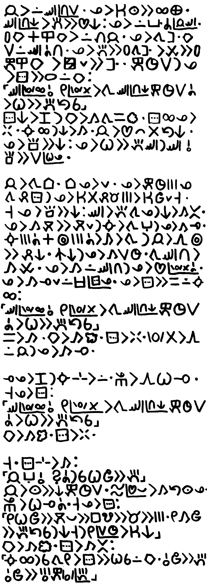
[sitelen ni li tawa sitelen pona. sitelen Lasina li pakala ali e musi ona. mi toki e ni lon poki sama ni: jan pi sitelen pona li ken pilin musi tan seme. taso sona pi tan musi li pana ala e pilin musi]
jan li lon sewi pi nena suli. ona li ken lukin e ali ma. sewi pi nena ni li pana e pilin ni: ona li lon poka a pi jan sewi. palisa kiwen en ilo kiwen li lon luka jan. ona li tawa sinpin kiwen suli lon sewi a nena. ona li pana e palisa tawa sinpin li utala e palisa kepeken ilo kiwen, li pakala lili e sinpin. kepeken tenpo suli la ona li sitelen e nimi lon kiwen: “sewi pi wawa ali o, mi pi wawa ala li tawa sewi pi nena ni kepeken tenpo suli a li wile e pana tan sina”
[sitelen pona la jan li ken sitelen e sitelen wan lon sewi pi sitelen ante. jan li sitelen e sitelen “mute” lon sewi pi sitelen “luka” la ona li sama mute tawa sitelen “pana” tawa lukin, la jan ala li ni. mi sitelen Lasina e wile pi jan sitelen. taso o sona e ni: nimi “pana” en nimi “luka mute” li sama tawa lukin lon kepeken mi pi sitelen pona.]
sitelen ni li pini la kiwen li kama tawa sama ko. sitelen ali ona li weka. suno ali la ni kama. jan li pilin ike ala tan ni. ona li sona e ni: ona li wile e pana sewi la sewi o sona e suli pi wile ona. jan li tawa tomo. tomo ona li lili. ona li kepeken tenpo mute ona tawa pali sitelen la ona li ken ala pali mani mute li ken jo lili taso. taso ona li sona e ni: sewi li pana tawa ona la ni li kama ante. ona li kama moku e moku lili la suno li kama ante la ona li kama lape. suno mute a en sike mute a li kama li tawa la jan li awen sike e pali ni. nasin ni la ona li kama suli tenpo. tawa sewi nena li kama utala. ona li kama lon sewi nena la ona li pilin pi wawa ala a. ona li kama lape lili lon open pi sitelen ona. ona li sitelen e sama lon suno ali: “sewi pi wawa ali o, mi pi wawa ala li tawa sewi pi nena ni kepeken tenpo suli a li wile e pana tan sina” sama li kama. kiwen li kama ko. sitelen li weka. wawa ala li awen lon jan la ona li kama lape.
lape ona li pini la suno sin li lon. sijelo ona li awen wile lape. taso ona li sitelen: “sewi pi wawa ali o, mi pi wawa ala li tawa sewi pi nena ni kepeken tenpo suli a li wile e pana tan sina” kiwen li kama ko. sitelen li weka.
taso. sitelen sin li kama: “jan anpa o, seme a la sina wile e luka mute” jan li lukin e ni kepeken tenpo suli. telo pi pilin pona li kama tan lukin ona. sijelo ona li wile lape a. taso ona li sitelen: “mi wile jo e moku pona e lipu musi e mani e mute. mi kama jo e pana tan sina la ni taso la mi pi suli tenpo li ken ni” kiwen li kama ko. sitelen li kama ante: “suno ali la sina tawa mi li sitelen e wile sina lon kiwen. o jo e luka mute. o jo e ijo mute kepeken wawa pi luka mute.”
[nimi “pi” li lon open pi sitelen “luka mute” la jan ali lukin li ken kama sona e ni: ona li nimi “pana” ala. ken suli a la tenpo pini la ona li sona ala e ni]
soko Sijeni
tomo pi telo suli li pakala. lon ma sin pi jan ala la jan wan li kama sona lon ona taso li lukin moli ala.
taso.
mi taso. ala li lon poka mi. ala li ken pona e mi. kalama wawa li utala e kute. lukin li ike. mi lukin e sewi. pimeja. mi lukin e anpa. pimeja. telo.
telo…
telo li suli. telo li tawa wawa. telo li moku e mi. mi tawa wawa. telo li utala e mi. telo li moku e mi. kalama li pini. kon li weka. mi tawa anpa. telo li luka e selo ale mi. mi lukin e anpa. pimeja. kon li weka tan sijelo. mi wile e kon. kon li weka la, mi moli.
moli…
mi moli. wawa li weka. pilin li weka. mi moli… ike. ike a! IKE A! mi wile ala moli. mi wile lon. mi sona e lon taso. mi sona ala e moli. mi wile ala sona e moli. mi wile lon! moli li ike. o moli ala e mi. mi wile ala moli. MI WILE ALA MOLI A. moli… wawa lili la mi tawa sewi.
kon…
mi moku e kon. tenpo lili la, mi pilin pona. pilin pona li pini. kalama wawa li lon. telo wawa li kama tan sewi. telo li mute. telo li ike e selo mi. lukin li ike. pimeja…
walo.
ale li walo. kalama suli li moli e kalama ante. lukin li pakala. kute li pakala. seme…? pimeja. ale li pimeja sin. kalama wawa li kama sin. walo. kalama. pimeja. awen. walo. kalama. pimeja. ike… wawa li weka. mi sona ala e poka mi. telo li ale. pimeja li ale. mi tawa anpa…
kiwen.
mi luka e kiwen. mi ken ala lukin, taso mi luka wawa e kiwen. mi tawa sewi. mi awen lon kiwen. kiwen li supa. selo ni… selo kiwen li sama kasi. a…
lape…
pini la, mi ken lape. telo li ike e selo. ni li suli ala. kalama li ike e kute. ni li suli ala. walo li ike e lukin. ni li suli ala. mi ken lape. kalama li awen… pimeja li awen… ale li awen… mi moli ala… kiwen li awen e mi. mi lape.
mi pilin pona. lon ike la, mi kama pilin pona.
mi lape.
supa.
mi lon supa. kalama en telo li weka. mi lukin e sewi. laso. mi lukin e anpa. jelo. walo. mi luka e anpa. ko. anpa li ko. mi kama jo e lili anpa. lili li weka li tawa anpa. ko li tan sike lili lili mute mute. ko li suwi tawa selo. a… mi awen lon anpa. telo li lon noka mi, taso telo ni li utala ala.
ale li pona. mi moli ala. a… mi lape…
suno.
mi awen lon ko. suno li awen. laso li awen. sike lili lili ale li awen. mi awen.
seli…
suno li sike walo suli lon sewi. suno li seli. mi wile ala seli… mi wile len tan suno. mi pini e awen. mi tawa e luka, e luka ante, e noka, e noka ante… pona a. tawa li pona e sijelo. mi lukin e poka ale mi.
kasi.
kasi li lon sinpin mi. kule li laso wawa. kasi li mute, li suli. mi tawa kasi. suno li seli ala e anpa kasi. pona. kon li lete suwi. mi lukin e sinpin pi ma kasi. telo suli. mi kama tan telo suli. pakala… mi sona ala e ma ni. ken la ike li lon ma ni. ken la… seme?
moku…
sijelo li mu. mi wile moku. moku… mi lukin e ale poka. kasi. laso. seme la mi ken jo e moku? sona mi la… moku li suwi tawa lukin; kule moku li nasa. taso ma ni la, ale li kule sama, li sama tawa lukin… ken la kasi. mi ken ala ken moku e kasi? mi jo e kasi lili; mi lukin e kasi… ike. mi wile ala moku e kasi. a… moku seme li lon ma kasi? ken la soweli. soweli li ken pona. sama la soweli li ken ike. soweli li ken moli e mi. mi o alasa ala e soweli… ken la waso. waso li utala ala e jan. taso waso li lon sewi. mi ken ala lon sewi. mi o alasa ala e waso… ken la kala. kala li lon anpa. taso kala li tawa mute. kala li lon la, mi tawa kala la, kala li weka kepeken tenpo lili a! mi alasa e kala la mi wile e ilo. mi o alasa ala e kala… moku o tawa ala, o lon anpa. ken la…
kili.
ken la kili. kili li pona. kili li kama tan kasi; kasi mute li lon ma ni. ni la, kili mute li lon ma ni. pona! mi lukin pona e kasi ale, taso kili li lon ala. sijelo li mu. moku… mi tawa insa pi ma kasi. mi awen alasa. kili li ken kule ale. mi alasa e kule pi laso ala. mi tawa la mi lukin e ale. laso… laso… laso…
laso…
ike a! ale li laso. mi sona pona ala e kasi. mi awen alasa. mi awen tawa. suno li tawa lon sewi. sewi li kama loje. sijelo li mu. moku… wawa li weka. tawa li lili a. noka li pilin ike. insa mi li pakala. moku… ken la ale li pini. mi moli. mi moli a. ale li pini. mi ken ala awen tawa. ale li laso. ike a… mi tawa anpa. ike… ale li laso. mi kama pini e lukin, taso…
loje.
mi lukin e ijo lili lili a. ijo loje. mi pini e awen. mi tawa loje. sike. ijo li sike li taso. mi jo e sike loje. ni li kili… mi ken ala ken moku e ni? sijelo li mu wawa. a… mi moku e kili. moku, moku moku… kili li weka. a… kili mute o lon poka. mi alasa. mi kama lukin e kulupu kili. mi moku e kili ale. a…
sijelo li pilin pona. mi tawa anpa. lukin li pini. lawa li lape. ale li pona. mi lape.
nasa…
mi pilin nasa… lawa li ken ala pona. noka li tawa pona ala. lukin li pona ala. mi awen lon anpa la, mi tawa sewi… li kama anpa sin. seme li ni e mi? mi lukin e luka. pilin la luka li lon ma ante pi mi ala. kili. a… kili li ni e mi. mi sona ala e kili loje ni. pakala… mi ken ala awen sama ni. mi tawa sewi, li luka e kasi suli. kasi li awen e mi. mi awen. mi pini luka e kasi. noka li awen. mi anpa ala. mi awen. mi tawa. tawa li ike, taso mi anpa ala. mi awen tawa.
ike…
mi pilin ike a. sijelo li pakala. mi sona ala e ma. mi jo ala e ijo. mi jo ala e moku. mi wile pini e ike. mi wile pini e taso. insa pi ma kasi la, kon li ike. mi wile tawa ma pi kon pona. poka telo la, kon li pona… mi tawa. suno li tawa. mi awen tawa. mi kama lon…
… nena.
nena la, mi ken lukin e ale ma. mi lukin e kasi ale; kasi li lon anpa. mi lukin e telo suli; telo li lon poka ale ma. ma li lili. mi ken ala lukin e ma ante. jan ala li lon ma ni. mi taso.
taso…
suno li len. sewi li loje. suno li weka la, ale li pimeja. taso mun suli li suno lili. mun lili mute li kule e sewi. kon li pona…
suwi.
suwi a.
ike li lon ala. ale li pona.
pona.
mi pilin pona. mi pini e lape la, mi awen lon nena. suno li kama sin. waso li lon sewi. pilin nasa li weka. lape li pona e ale mi. mi tawa. sin la mi wile moku. a, moku… mi tawa anpa la mi kama lukin e ijo nasa.
jelo.
nena en anpa la, ijo jelo li lon insa. ijo li suli, li kama tan kasi. mi kama jo e ijo. ijo li palisa. kili a! mi sona e kili ni. mi ken moku e kili. a… pilin li jaki tawa uta, taso sijelo li kama pona a. mi jo e kili sin. moku. a! kili mute li lon. kasi mute lon ma li pana e kili jelo. mi moku e kili sin. pona a! mi jo e moku mute. wile moku li weka la mi awen.
a…
mi jo e ale wile. mi o seme? mi tawa poka telo. mi lukin e telo. ale li telo. taso ijo ala li lon telo. seme la, mi kama lon ma ni?
tomo.
mi kama lon tomo. tomo li tawa. tomo li lon selo telo. tomo li suli. jan mute li lon tomo. tomo li tan kulupu jan.
pakala.
tomo li pakala… telo li utala wawa. tomo li anpa. jan ale li tawa telo. jan li moli ala moli? mi awen e monsi lon anpa. mi toki.
sewi…
sewi o… o pona e mi, e jan ale lon tomo. a…
sin la mi wile moku. mi tawa.
kalama.
mi kute e kalama suli. mi lukin e sewi. pimeja. telo. lili la, telo li kama tan sewi. tenpo li tawa la, telo li kama wawa. ike. mi wile len. mi tawa li alasa e lupa. telo li ike e selo mi. wawa. telo li kalama wawa. mi lukin e kasi suli. mi len lon anpa kasi. telo li awen utala e mi, taso mi ken awen. kasi li lili e telo. poka la, kasi li pakala tan wawa telo.
mi awen.
lete.
ale li lete… lete li kama e jaki lon sijelo mi. mi pilin ike. mi lukin e ma. telo sewi li weka. anpa li kama ko pimeja. jaki li lon anpa. kasi mute li anpa. pipi li kulupu li tawa sike lon sewi. utala li lon insa mi. jaki… mi tawa. ale ma li pakala… mi tawa nena. kili jelo lili li awen. mi moku. kasi li awen la kule kasi li wawa. mi tawa anpa. mi lukin e telo suli. lete…
seme?
mi o seme? nanpa wan la, mi wile pini e lete. mi wile pali e seli. mi sona pona ala ni. ken la mi seli e ale. tenpo pini la, mi lukin e sitelen lon lipu… sitelen la, mije li pali e seli kepeken palisa lon sike kiwen. sitelen la, meli li seli e kala. kala… mi wile moku e kala. mi wile seli.
wile.
wile li wawa e mi. mi alasa e kiwen lili. mi jo e kiwen la mi kulupu e kiwen lon anpa sama sike. insa sike la mi pana e kasi. palisa kasi mute li lon. mi jo e palisa suli e palisa lili. mi pana e palisa suli tawa sike. mi awen e palisa lili lon palisa suli. mi jo e palisa lili, li tawa wawa e palisa. palisa tawa li luka e palisa suli la seli o lon. mi tawa, li tawa, li tawa…
tawa…
suno li tawa, li weka. mun li lon. mi awen tawa e palisa… ni li wile e wawa a! mi wawa ala. moku… mi tawa nena. tawa la, mi lukin e ma. ijo mute li lon anpa. kasi, palisa, linja, kili, kiwen… kili? sike laso li lon anpa. mi jo e sike. kule li ante lili tawa kasi ante. sike li kiwen, taso selo li sama kili tawa luka. ken la, mi sona e ijo ni… mi tu e sike. telo walo li lon insa. kili a! mi moku e telo. wawa li kama lon mi.
wawa!
mi jo e kili laso mute, li tawa poka telo. mi awen alasa pali e seli. mi tawa e palisa. mun li lawa e sewi. mi awen tawa. tawa…
suno.
tenpo lili a la, suno lili li lon. suno li weka… mi awen tawa e palisa. mi ken ni… mi ken pali e seli… suno sin. mi awen tawa. suno sin. suno li awen.
loje li lon pimeja.
seli.
mi pini e lape la, suno li suli lon sewi laso. seli li awen. seli… mi pali e seli a. mi moku e kili. mi awen lon poka seli lon tenpo mute. mi pilin pona. mi pilin wawa. mi lukin e telo. kala… mi wile moku e kala. mi jo e linja kasi mute tan anpa la mi pali e ilo. ilo li len suli; mi pana e len tawa telo la len li poki e kala. mi pali e ilo kepeken tenpo mute… pini la mi tawa telo, li alasa e kala. mi kama lukin e kulupu kala. mi pana e ilo… li jo sin e ilo… mi tawa ma. mi awen e ilo, li lukin e insa.
kala.
kala mute. mi jo e kala kepeken palisa. mi moli e kala… mi pana e kala tawa seli. seli li pimeja e selo kala. kule li suwi. mi moku e kala. a… pona. kala li utala tawa uta. moku ante li ken pona e kala, taso mi jo ala e moku wile. kala li awen pona tawa mi. mute ante moku li pona tawa sijelo. mi seli e kala sin. mi moku e kala. a… pona. mi wile ala moku la, mi awen lon seli. kon lili suwi li luka e mi. mi lukin e sewi. a…
pimeja…
sewi li pimeja, taso mun li lon ala. tenpo kama la, telo li kama tan sewi. mi sona. ma ni la telo li wawa. ale li pakala… mi wile ala ni. mi wile ala telo. mi wile ala lete. mi wile len. taso kasi li len ike. mi wile pali e len pona. ken la, mi ken pali e tomo… tomo li wawa li len. tomo la ijo pi mi ala li ken ala lon insa. mi lukin e anpa. mi ken pali e tomo tan palisa tan kasi. a, pilin ike li pona ala e kama. mi sona e utala kama. mi kulupu e palisa tan anpa. mi alasa e ma pona tawa tomo.
ma…
ma seme li pona? ma ni la nena li lon insa. mi tawa anpa nena. telo wawa li kama tan sewi la, telo li tawa anpa li pakala e ale. ma anpa la tomo li pakala. mi tawa nena. ma nena la telo li weka. taso nena la kasi suli li lon ala. ala li lili e wawa telo. ala la mi ken awen e tomo. ma nena la tomo li pakala. mi tawa ale ma… anpa en nena la, mi tawa insa. kasi suli li lon, taso ma insa li sewi a tawa anpa, li poka tawa nena. ni la, telo li tawa lon anpa la wawa telo li lili. kasi li lon la mi ken awen e tomo. tomo li lon sinpin kasi wawa la kasi li awen e tomo. ma insa li pona.
pali.
mi kama pali. pali la, mi ante e ijo kepeken wawa. mi wawa lili. taso mi awen pali. lili en ala la, lili li pona… mi pana e palisa tawa anpa. mi kulupu e palisa. palisa li supa li awen lon sewi palisa ante, sama sinpin. taso sinpin li pakala. a… mi alasa kepeken nasin ante. pakala. palisa ale li anpa. mi alasa sinpin sin e palisa. pakala. mi alasa mute kepeken nasin mute.
pakala…
mi lape lili. mi lukin e sewi. pimeja li wawa… mi ken ala lape. mi ken ala anpa. a… mi pana e palisa. mi pana e palisa ante lon poka. palisa tu la, sewi la mi pana e palisa lon insa… anpa la mi pana e palisa lon poka. palisa sin en palisa poka la sewi la mi pana e palisa lon insa. mi awen pali ni. sinpin li anpa ala. pona… pini la, tomo li lili li sike. sike la palisa li awen e palisa lon sewi. mi pana e kasi tawa selo. lupa li lon… kalama wawa. telo. mi tawa insa. tomo li awen ala awen? pali li pona ala pona? telo wawa li kama. tenpo li tawa.
taso tomo li awen.
tenpo.
tenpo pi mute seme la mi lon ma lili ni? mi sona ala. ma ante la, jan li kepeken nanpa. jan li nanpa e mute tenpo. jan li toki e「tenpo nanpa ale ale ale ale ale ale ale ale ale ale ale ale ale ale ale ale ale ale ale ale mute mute mute mute tu tu la…」toki suli a! kulupu jan la nanpa li ale. mi nanpa. tenpo li nanpa. mani li nanpa. suno li nanpa. mi nanpa ala e suno. mi wile ala. kulupu la nanpa mi li wile tawa jan ante taso. jan ante ala li lon ma ni. mi taso.
taso.
mi tawa. mi lukin e kasi. kasi li suli li laso wawa. kasi lili li kule ante li suwi. pipi kule li lon kasi lili. mi lukin e kiwen. akesi lili li lape lon kiwen suli. suno li walo e kiwen. mi lukin e telo. suli. supa. ala li utala e telo. telo li awen e ma. ale li kama kepeken telo. ale li weka kepeken telo. mi kama tan telo. mi tawa nena. mi lukin e ale. taso la, mi lukin e suno mute e mun mute. mi lukin e tomo. tomo nanpa wan li pakala lili la, mi pali e tomo sin. tomo li pona. tomo li awen lon ike mute. suno ale la mi moku e kala e kili. mi tawa li lape, li lukin e telo e mun. taso. jan ala li lon. jan ala li tawa li lape li lukin lon poka mi. a… nasa. mi pilin pona. tenpo mute la mi pilin pona. ma jan la, mi pilin ala pilin sama? ala… jan la mi tawa ala. mi pali. mi lukin ala e kasi e mun. mi pilin pona ala… li pilin ike ala. nasa. ma ni la pilin ale li wawa. mi pilin pona li pilin ike. pona en ike li lon. seme li kama e pona e ike? … ken la…
… mi.
mi. ma li pana e ijo la, mi pana e pona anu ike. ike la, mi o alasa e pona. pona la, ike li kama lon pini. pona li kama li weka. ike li kama li weka. ala li awen. mi taso li ken awen. mi ken kama e pona tan ike. a… sona suli. mi lape. suno li suwi. mi lukin e sewi… laso. ale li laso. ma jan la laso li lili. mi lukin e laso sewi. mi lukin e laso kasi. mi lukin e laso telo. mi lukin e…
… jan.
seme? ijo li lon telo. ijo pimeja. tomo. jan taso li pali e tomo. tomo li tawa. tomo li tawa ma. jan li lon. seme a? mi o seme? mi o len ala len? len…? mi wile len tan seme? ken la jan li ike. ken la… mi wile ala tawa. ma ni li pona. ma mi. mi jo e moku e tomo. jan ala li ike e ma. jan ala li pakala e ma. jan… li ike. jan li pakala. jan li moku e ma. jan li moli e ma. jan ala li lon ma mi. jan ala… mi taso.
taso.
taso…
… noka li tawa ala. mi wile awen. mi wile lukin e tomo. mi ken ala len. tan seme la, mi wile tawa? mi wile toki tawa jan ante. mi wile lon poka jan. tan seme? mi wile lape li wile tawa li wile lukin lon poka jan. tan seme? mi wile pana. ale la, mi jan… mi ijo ante ala. mi jan. mi pali sama jan. mi wile jan. mi wile ala taso. jan li ken ike, sama ma ni. ma li pana e ike mute. ma la kili ike en telo ike li lon. ma li utala a e mi. taso… sama la ma li pana e pona mute. a, ma li ante e mi… jan li sama ma. jan li ken pona. jan li ken kulupu tawa pona. jan li ike li pakala, li pona li pali. jan li utala li olin, li jaki li suwi, li moli li mama, li kalama li kute li sitelen li lukin li esun li jo li pana li tawa li kama li pilin li lape li musi… li ante. a, mi jan… mi wile pana. mi wile… mi wile moku e pan. mi moku e kili e kala taso. mi wile moku e ijo mute. mi wile olin. mi wile sitelen. mi wile toki. mi wile pona. mi wile pini e taso.
taso li pana e pona tawa mi. mi wile pana e pona ni.
mi lukin e kasi e kili e kiwen e telo. tawa pona… wawa la mi tawa poka telo. mi lukin e tomo tawa. mi sewi e luka tu. mi toki:
「o!」
jan Ke Tami
mi jo e ilo tenpo sin. a, ilo tenpo mi li pakala. ni la tenpo li pakala anu seme?!
mi wile sona e tenpo. mi lukin e ilo mi pi sona tenpo.
a ilo mi pi sona tenpo ala. ilo li sin la mi wile pana e sona tenpo open tawa ona.
pona la mi lon open tenpo. ijo tenpo li wile ala e mi. taso ijo li ken kama wile e mi. mi wile pana e sona tenpo tawa ilo mi.
ilo tenpo suli li ken pana pona. ona li lon tomo esun kulupu.
mi kama lon ona. ona li tomo pona li ken e jan mute lon insa e jan mute lon poka kin. taso mi lon open tenpo taso la jan li mute ala.
mi open e lupa lon sinpin tomo. mi tawa insa la lupa li kama sinpin lon monsi mi. jan tu taso li lon li
O ALASA E MANI
KEN LI KEN
SINA PANA E MANI WAN LA MI KEN PANA E MANI TU
a ilo pi wile mani li lon poka. ona li ike tawa mi. mani li kama weka a lon ona.
mi awen tawa insa. mi tawa lon poka pi jan moku. ona li moku e ijo pona pi open tenpo. mi kama lon jan esun.
"esun o pona. mi wile lon ilo tenpo. ona o pana e sona tenpo."
"a o tawa poki. ilo li lon insa."
mi kama lon poki. mi open e poki. ilo li lon insa.
MU MU MU
MI ILO TENPO
SINA WILE E SEME
"ilo suli o. ni li ilo lili. ona li sama sina. taso ona li lili. ona li sin la ona li sona ala e tenpo. o pana e tenpo tawa ona."
PANA
mi lukin e ilo mi. ona li sona e tenpo. pona.
"sina ilo pona."
ona li toki ala.
"ilo o toki."
ona li awen toki ala. ni li nasin ala nasin ona? mi sona ala. mi awen lili. taso ala li ante. mi open e tawa.
"awen la esun o pona."
"tenpo o pona."
mi tawa lon poka pi jan moku. a. jan pi moku ala. ona li kama pana ala e moku tawa uta. lon la ona li tawa ala li tawa e ala. a. lawa ona li tawa anpa a li kama lon ijo moku. oko ona li open ala.
"a. mu. jan esun o mu tawa jan pi nasin sijelo. ona o kama."
"ike a. mi ni."
mi en jan tomo li supa pona e jan anpa. ni la jan pi len sinpin li tawa insa.
"esun o pana e mani."
ona li jo e len lon sinpin e ilo ike lon luka.
"sina pana ala e mani la mi pakala e sina."
"mi lon open tenpo taso. esun li mute ala la mani li mute ala."
"o toki ala o pana taso. sina pana ala la mi moli e sina."
jan esun li tawa poki mani li kama e mani tan poki.
"sina ike ni tan seme?"
jan len li toki ala li tawa weka.
"ni la mi sona ala kama e pona."
ike li awen kama suli lon tenpo anu seme? jan ante li tawa insa. pona la ona li jan pi nasin sijelo.
"ona li anpa tan ijo seme li moku e seme li anpa lon tenpo pi suli seme li mu ala mu lon anpa li tawa ala tawa nasa lon tenpo pi anpa ala li kepeken ala kepeken ilo sijelo li toki ala toki e ijo pi pilin ike?"
"a. mi sona ala."
"ona li kama ala sewi li moku nasa e kon. mi en ona o tawa tomo mi."
mi en jan nasin li jo pona e jan anpa li tawa e ona tawa ilo pi nasin tawa.
"mi o kepeken tenpo lili a."
ona li tawa weka lon ilo ona kepeken wawa. jan esun pi mani ala li kama lon poka mi.
"tenpo nasa a."
"a. sina jo ala e mani. ni li ike."
"jan ante li kama li esun la mani li kama. ona li kama ala la ni taso li ike."
"a suno pona en seli pona li lon. ona li kama."
"pona."
mi open sin e tawa. ijo li awen wile ala e mi la mi wile tawa seme? a ma kasi li ken suwi.
mi awen tawa la kasi li kama mute. kasi li mute pona la mi kama kute e kalama suli a. kalama li tan weka. ona li seme? ijo li pakala ala pakala? taso kalama li weka la ijo li pakala la ijo pakala li suli a.
mi ken ala sona. mi lon ma kasi pona taso.
ijo nasa mute li lon tenpo. mi ken ala ante e ona.
mi lukin e kasi suli wawa. anpa kasi la ma li laso pona li ko pona. mi pana e mi lon noka kasi li lukin e sewi.
mi len e oko.
mi kama lape.
PANA
mi lukin e ilo mi. ona li sona e tenpo. taso ni li sin ala.
seme? seme li lon?
mi lon poka pi ilo tenpo suli. tan seme?
tenpo poka la mi lon ma kasi. mi awen ala awen lape?
mi awen wile sona e nasa ni. taso kalama li kama lon monsi mi.
mi kama lukin. lon supa moku la jan li moku ala li kama anpa. supa poka li jo e ijo moku ona.
"pakala a. jan esun o mu tawa jan pi nasin sijelo. ona o kama."
"ike a. mi ni."
ni li sama tenpo ante. nasa seme li lon a? jan tomo li kama lon poka mi la mi en ona li supa pona e jan anpa. mi kama kute e toki lon monsi mi.
"esun o pana e mani."
a jan ni.
"sina pana ala e mani la mi pakala e sina."
"mi lon open tenpo taso. esun li mute ala la mani li mute ala."
"o toki ala o pana taso. sina pana ala la mi moli e sina."
jan esun li tawa poki mani li kama e mani tan poki.
"sina ike ni tan seme?"
jan len li toki ala li tawa weka.
"ni li sama tenpo ante a."
jan tomo li lukin e mi.
"seme? ni li sin a tawa mi. tenpo ala la jan li kama weka ni e mani mi."
nasa suli. pilin la mi awen a lon lape. mi luka pi utala lili e selo mi. lape ala li kama pini. ale li awen lon. mi sona ala. jan ante li tawa insa li jan pi nasin sijelo li kama lukin e jan anpa.
"ona li anpa tan ijo seme li moku e seme li anpa lon tenpo pi suli seme li mu ala mu lon anpa li tawa ala tawa nasa lon tenpo pi anpa ala li kepeken ala kepeken ilo sijelo li toki ala toki e ijo pi pilin ike?"
"a. mi sona pona ala. ijo moku ona li lon supa. ona li kama anpa lon tenpo poka. jan li mu tawa sina la ona li kama anpa. mu en tawa li lon ala. ijo ante la mi sona ala."
"ona li kama ala sewi li moku nasa e kon. mi en ona o tawa tomo mi."
mi en jan nasin li jo pona e jan anpa li tawa e ona tawa ilo pi nasin tawa.
"mi o kepeken tenpo lili a."
"a mi kin li wile kama."
ona en mi li kama lon ilo li kama tawa.
"mi o kepeken tenpo lili a."
ona li wawa e tawa ilo. mi awen tawa la kalama suli li kama. kalama li tan ala weka li tan poka. a lon nasin la sinpin la ko mute li lon kon.
"mi kama ken ala tawa lon ni. mi o tawa jan pi sijelo pakala. sina o lukin e ijo nasin."
ona li tawa monsi tawa jan pi sijelo pakala. mi tawa sinpin tawa ko kon. mi weka tan ilo la mi lukin e open pi ko kon. jan tu li lon poka pi kiwen pakala mute.
"aaaaaaa. pakala suli. tan seme la sina pakala e tomo mi? mi jo e mani tawa sina."
a. mi sona e kalama pi jan ni. jan ni li weka e mani tan tomo esun a.
"mani li lili ike. ni la tomo ni li tomo sina ala li tomo mi. ona li weka la mi ken pali e tomo suli pona lon ma ona."
jan ante wan li jo e len mani li pilin ala e pilin ike pi jan ante.
"toki. kute la sina pakala e tomo. ko mute li lon kon tan ni anu seme?"
"a ken. sina wile sona tan seme?"
"ko li lon nasin tawa la ilo nasin li ken ala tawa."
"ni la o awen. ko li kama anpa la ona li weka tan kon."
"taso jan pi sijelo pakala li lon ilo. ona li wile tawa tomo pi nasin sijelo."
"a mi ken ala ante e ni. ko li ko. kon li kon."
mi sona ala e pona. jan ni li ike a. taso mi ken ante e ala.
PANA
aaaaaa. sin sin. mi lon poka pi ilo tenpo suli tan seme a?
"ilo o."
ilo li toki ala. a lon. ni li sama tenpo ante. pakala. mi tawa monsi. mi kama lon poka pi jan moku. lukin la moku li pona tawa ona. lukin la ike ala li lon. taso ale li sama tenpo ante la mi sona e ike kama.
"toki. sina pilin seme?"
"a moku li pona. mi pilin. mi. a. mi."
ona li pini e toki e tawa kin. tenpo lili la lawa ona li tawa anpa li kama lon ijo moku.
"a o kama e jan pi nasin sijelo. o mu tawa ona a."
jan pi tomo esun li ni kepeken ilo mu. ni la ona li kama lon poka mi la mi tu li supa pona e jan anpa. sama tenpo ante la kalama li kama lon monsi mi.
"esun o pana e mani."
mi lukin e jan pi ilo ike.
"o kute. sina ken ala jo e mute pi wile sina. jan pi lawa tomo li wile e mani mute."
"o toki ala. mi ken moli e sina kepeken ilo. esun o pana a e mani."
"taso ona li toki pona."
jan pi tomo esun li tawa supa ona li kama open e poki mani li kama e mani.
"mi lon open tenpo taso. esun li lili la mani li lili. ni li mani ale."
jan ilo li jo e mani la ona li tawa weka.
"sina o. sina toki e ijo pi tomo ona tan seme?"
"jan ona pi lawa tomo li wile e mani mute. mani lili la jan ni li pakala e tomo."
"a seme?"
taso jan ante li kama li toki.
"ona li anpa tan ijo seme li moku e seme li anpa lon tenpo pi suli seme li mu ala mu lon anpa li tawa ala tawa nasa lon tenpo pi anpa ala li kepeken ala kepeken ilo sijelo li toki ala toki e ijo pi pilin ike?"
"mi sona ala e ale. ona li kama anpa lon tenpo poka taso. ona li lon tenpo moku. ijo moku ona li lon supa poka. ona li pilin pona lon tenpo moku li toki e pilin ni. taso ni la ona li kama pini e toki e tawa li anpa taso. mi sona ala e ijo ante."
jan li lukin pona e sijelo pi jan ante.
"ona li kama ala sewi li moku nasa e kon. mi en ona o tawa tomo mi."
"sina kama ala lon tomo sina la seme li kama?"
"moli."
mi tu wan li tawa e jan anpa la jan pi nasin sijelo li kama ken open e tawa. ike la mi sona e kama pi tenpo poka. mi ken ala ante e kama kin. jan pi ilo moli li jo e mani lili taso. tomo li kama pakala. ko mute li kama lon nasin. jan anpa li ken ala tawa tomo pi nasin sijelo li kama moli. ike.
"jan tomo o. seme la mi ken jo e mani mute?"
ona li lukin pi nasin nasa e mi.
"a sina wile pali la mani pona li ken. ona li mute suli ala. taso mun li sin la sina kama jo e mani pi pilin pona."
ni li ken pona. taso tenpo mi li lili. mi ken ala tawa tenpo pi mun sin. nasin mani ante o lon. taso mi sona ala e ona. mi awen alasa e ken la tenpo lili la ilo poka li kama toki.
O ALASA E MANI
KEN LI KEN
SINA PANA E MANI WAN LA MI KEN PANA E MANI TU
a. ilo ni li nasin mani ike. mani li kama weka. taso ale li kama sin la ala li awen weka. mani mi li awen ala weka. mi tawa ilo.
O ALASA E KULE PI KEN MANI
SINA PANA PONA E KULE LA MI SULI E MANI SINA
OPEN LA O PANA E MANI SINA
mi jo e mani wan taso. mi pana tawa ilo.
MANI MANI MANI
O TOKI E KULE WILE
mi pana e loje. ilo li tawa wawa nasa e sike kule. laso li kama.
MANI MANI MANI IKE
MANI SINA LI AWEN LON MI
pakala.
O MUSI SIN O MUSI SIN
O PANA E MANI SINA
a taso mi ken ala. weka la kalama suli li kama. a tomo li kama pakala.
"a kalama ni li seme? ijo suli li pakala anu seme?"
"ni li sama ijo pi toki mi. jan pi lawa tomo li pakala e tomo."
"a nasa."
"mi wile kepeken ilo mani ni. taso mi jo e mani ala."
"mi kin li jo e mani ala. sina sona. jan ike li kama li weka e mani mi ale."
"weka a. sama ilo ni."
"o musi mani ni ala. tenpo mute la ona li weka e mani. tenpo pi mute ala la ona li pana e mani. nasin ni la mani sina li kama weka taso."
"sina sona pona."
taso nasin ante li lon ala. mi awen alasa e ken lon ilo mani. taso ona li awen wile e mani mi taso li.
PANA
a sin tenpo. mi lukin ala e ilo tenpo suli. mi tawa ilo mani.
"jan esun o mu tawa jan pi nasin sijelo. pakala sijelo li kama."
mi kama lon ilo mani.
"seme?"
jan li lukin pi nasin nasa e mi. taso ona li kepeken ilo toki li mu tawa jan nasin.
O ALASA E KULE PI KEN MANI
SINA PANA PONA E
mi pana e mani.
MANI MANI MANI
O TOKI E
mi pana e laso. ilo li tawa a e sike kule. laso li kama.
MANI MANI MANI PONA
MI MUTE E MANI SINA
uta ilo li open li pana e mani tu tawa mi.
O MUSI SIN O MUSI SIN
monsi la jan li kama moku ala li anpa e lawa tawa supa moku.
O PANA E MANI SINA
jan pi tomo esun li tawa ona.
"a ike li lon ala lon?"
ona li luka e jan anpa la jan ni li tawa ala.
"o sona. jan pi nasin sijelo li kama a."
mi pana e mani tu tawa ilo.
MANI MANI MANI
jan tomo li supa pona e jan anpa. mi pana e loje. ilo li tawa e sike la pimeja li kama.
MANI MANI MANI IKE
MANI SINA LI AWEN LON MI
jan ante li kama lon tomo esun.
O MUSI SIN O MUSI SIN
jan ni li jo e len lon sinpin e ilo ike lon luka.
O PANA E MANI SINA
"esun o pana e. seme? esun o pana e mani a."
"o kute. ilo ni li moku e mani mi. sama la jan sina pi lawa tomo li moku e mani sina."
"o toki ala. sina sona ala. sina sona ala a? esun li pana ala e mani tawa mi la pakala suli li kama."
ona li tawa a e ilo ike ona. jan esun li tawa supa esun li kama e mani tan poki mani.
"o sona o sona. mi lon open tenpo taso. esun mute ala li lon la mani li mute ala. ni li mani ale."
jan pi ilo ike li jo e mani la ona li tawa weka.
"ike."
"ike a."
"mani li kama weka tan mi tu."
"o musi mani ni ala. mani sina li kama weka taso."
jan ante li kama li lukin e jan anpa li tawa ona.
"ona li anpa tan ijo seme li?"
"mi sona ala e ijo open pi anpa ona. taso ona li pilin pona lon moku ona lon tenpo wan li kama pini e tawa e ale lon tenpo ante. ni li lon tenpo poka. moku ona li lon supa moku. sina wile e jan ni lon tomo sina."
jan li lukin pona e sijelo pi jan anpa.
"wile. ona li kama ala sewi li moku nasa e kon. o kama o tawa e ona."
ona en mi li kama e jan anpa lon ilo pi nasin tawa. jan nasin li tawa weka kepeken ilo. jan esun pi mani ala li kama lon poka mi.
"tenpo nasa a."
"mi tu li jo e mani ala."
"a taso jan ante li kama li esun la mani li kama. ona li kama ala la ni taso li ike."
"seme la ona li kama ala?"
"tenpo li ike la ona li wile ala kama. pakala li lon nasin tawa la ona li ken ala kama."
"a."
weka la kalama li kama.
"kalama ni li seme?"
"a. pakala tomo. ni li ike e ken pi nasin tawa."
"ike esun."
sin la mi lukin e ilo musi mani.
"taso ilo ni li jo e mani mute anu seme?"
"jo. taso o kepeken ala ona. sina sona e ike mani ona."
"sona. taso sina ken ala ken open a e ilo?"
"a a a wile. taso mi ken ala. jan ilo taso li ken. mi jan ilo ala. jan ilo li kama lon pakala taso. ilo ni li pakala ala."
"a."
mi lukin e poki suli.
"ilo tenpo sina li pakala li kama toki ala."
"a sina pakala ala pakala e ona?"
jan li tawa poki suli pi ilo tenpo suli.
"ala a li lon ona. ona li pakala suli a. seme la?"
PANA
mi tan poka poki ala tawa poka poki. sin sike.
"jan esun o mu tawa jan pi nasin sijelo. pakala li kama."
"seme?"
"o ni. kin la ilo tenpo li pakala a. o mu tawa jan ilo kin."
jan pi tomo esun li lukin pi nasin nasa e mi. taso ona li kama kepeken ilo toki. mi pana e mani tawa ilo mani.
MANI MANI MANI
mi pana e laso.
MANI MANI MANI PONA
mi kama jo e mani tu la mi pana e mani tu.
MANI MANI MANI
mi pana e pimeja.
MANI MANI MANI PONA
lon monsi la jan moku li kama jan anpa. mi pana e walo. sike kule la laso li kama.
MANI MANI MANI IKE
MANI SINA LI AWEN LON MI
a laso en pimeja en laso. monsi la jan pi wile mani li lawa e jan esun tawa poki mani kepeken ilo ike ona.
"mi lon open tenpo taso. esun li mute ala la mani li mute ala."
"o toki ala o pana taso. sina pana ala la mi moli e sina."
jan li jo e mani la ona li weka. jan pi nasin sijelo li kama la mi toki.
"sina wile e jan ni lon tomo sina. ona li tawa ala sewi li moku nasa e kon. o kama. mi tu o tawa e ona."
jan pi nasin sijelo en jan anpa en ilo pi nasin tawa li weka la mi wile sona tan jan pi tomo ni.
"jan ilo li kama lon tenpo seme?"
"mi sona ala. ona li kama ala toki tawa mi lon ilo. taso ona li jan ilo. jan ilo li pilin pona lon open tenpo ala. mi lon open tenpo la ona li ken awen lape."
"a. ni la mi wile toki tawa ona. nasin seme la mi ken tawa tomo ona?"
luka pi jan esun li pana e sona nasin tawa mi.
"pona."
mi tawa la mi alasa e tomo pi jan ilo.
mi kepeken nasin luka pi jan esun la tawa mi li pona. mi kama lon tomo pi wile mi.
weka la kalama pi pakala tomo li kama.
mi wile tawa insa tomo. taso sinpin ale la mi kama ala ken open e lupa.
mi awen tawa lon selo tomo la sinpin mute la mi kama ken lukin e insa tomo. lon ni a. jan li lape lon insa tomo.
jan ni li jan ilo. mi luka kalama e sinpin.
"jan o. jan o. o pini e lape."
taso kalama ala li pini e lape. ike a. kalama li tawa ala tawa insa? ike la tenpo li kama li la.
PANA
a lon.
"o mu tawa jan pi nasin sijelo. pakala li kama la ona o kama."
"taso."
mi kute ala. mi tawa ilo mani. tenpo ante la mi kepeken nasin pi pona ala. mi pana e mani wan.
MANI MANI MANI
mi pana e laso.
MANI MANI MANI PONA
mi jo e mani tu la mi pana e mani tu e pimeja.
MANI MANI MANI PONA
mi jo e mani tu tu la mi pana e mani tu tu e laso.
MANI MANI MANI PONA
mi jo e mani luka tu wan la mi pana e mani wan taso e loje. a sike kule li pana e jelo.
MANI MANI MANI IKE
monsi mi la kalama pi tawa anpa li kama. mi pana e mani wan e loje. sike kule li pana e walo.
MANI MANI MANI IKE
sama la mi pana e mani wan e loje. sike li pana e jelo.
MANI MANI MANI IKE
sama kin la mi pana. loje li kama.
MANI MANI MANI PONA
a pona. kepeken mani wan la mi pana e walo. laso li kama.
MANI MANI MANI IKE
mani wan la mi pana e walo. jelo li kama.
MANI MANI MANI IKE
mi pana sama. jelo li kama.
MANI MANI MANI IKE
pana sama. pimeja li kama.
MANI MANI MANI IKE
pana sama. taso ilo li pana e loje.
MANI MANI MANI IKE
ni la pana mi li sama. walo li lon ilo.
MANI MANI MANI PONA
a mi pana e jelo. pimeja li kama lon sike kule pi ilo mani.
MANI MANI MANI IKE
pini mani. mani mi li ala la mi kama ken ala pana. taso mi kama sona pona. kule li laso li pimeja li laso li jelo li walo li jelo li loje li laso li jelo li jelo li pimeja li loje li walo li pimeja. mi kama kute sin e ijo pi monsi mi.
"o toki ala o pana taso. sina pana ala la mi moli e sina."
poka mi la jan en mani li tawa weka. mi sona e lili pi mani ni. taso mi ken ala pana lon sike tenpo ni. mi awen lili la ilo li kama lon poka tomo. mi toki tawa jan pi ilo ni.
"jan pi nasin sijelo o. insa la jan li kama anpa. lukin la ni li tan ijo ala. ona li kama ala sewi li moku nasa e kon. ona o tawa tomo sina."
"sona pona."
mi en ona li tawa insa. mi en ona en jan anpa li tawa ilo. mi wan li tawa insa tomo.
"jan esun o. mi wile toki tawa jan ilo."
"a ilo sina li pakala anu seme?"
"a sama ni."
"o awen. mi ken mu tawa ona kepeken ilo mi."
"sona mi la ona li lape a."
"a ken. ni li nasin tenpo ona."
"mi wile tawa ona. taso tomo ona la mi ken ala lon insa."
"ni la o awen tawa tenpo pi lape ona ala."
"a wile. taso mi ken ala awen la nasin ante seme li ken?"
"a. sina toki nasa. taso sina wile tawa insa tomo la nasin ante tu li lon. nasin nanpa wan la sina ken pakala e ijo tomo."
"mi wile ala ni."
"pona. nasin nanpa tu la jan pi lawa tomo li ken open e lupa lon tomo ale."
"a ni li nasa."
"ona li lawa e tomo."
a taso jan lawa li lon weka la mi ken ala ken tawa ona? tenpo li ken lili. mi open e tawa. mi tawa. mi tawa. mi awen tawa. wawa mi li kama lili. mi pini e tawa. jan lawa li awen weka. mi open sin e tawa. mi tawa. mi tawa. mi.
PANA
sin sin sin. a mi sona.
"jan esun o mu tawa jan pi nasin sijelo. pakala sijelo li kama lon tenpo poka. mi sona e nasa pi toki mi. taso pona la o ni."
ona li ni. mi tawa ilo mani. mi pana e mani.
MANI MANI MANI
O TOKI E KULE WILE
laso. mani tu.
pimeja. mani tu tu.
laso. mani luka tu wan.
jelo. mani luka luka luka wan.
walo. mani mute luka luka tu.
jelo. mani mute mute mute tu tu.
loje. mani ale mute luka tu wan.
laso. mani ale ale mute mute luka luka luka wan.
jelo. mani luka ale luka luka tu.
jelo. mani luka luka ale mute tu tu.
pimeja. mani mute ale mute mute mute mute luka luka luka wan.
loje. mani mute mute mute mute wan ale mute mute mute mute luka luka tu.
walo. mani wan ale mute mute mute tu wan ale mute mute mute mute tu tu.
pimeja. mani tu wan ale mute luka tu ale mute mute mute luka tu wan.
O MUSI SIN O MUSI SIN
taso mi wile ala. mi jo e mani pi mute pona. jan moku li kama moku ala li kama anpa. mi en jan esun li tawa ona li supa pona e ona. mi tawa open tomo la lupa li open lon tomo. jan pi len sinpin li lukin e mi li kama e ilo ike li wile toki. taso mi kama open kin e toki.
"mi jo e mani pi mute suli. mi wile esun. mi pana e mani la sina kama e mi tawa jan pi lawa tomo."
"a. seme? sina."
"o kepeken ala tenpo. o kepeken tenpo ala."
"o kama o kama. ilo mi li lon poka."
mi tu li lon ilo lili pi nasin tawa. tenpo tawa li pini la mi lon tomo lon poka pi jan lawa.
"sina pana ala e mani tawa mi la mi weka e tomo ni. mi ken pali e tomo suli lon ma ona. tomo suli li kama e mani suli."
"o awen. mi jo e mani wile. sina pi mani mute o pana."
mi pana e mani tawa jan pi lawa tomo.
"a. mani ni li ken mute pona."
"sina wile ala e mute ni? taso sina ken jo e mani ni. mi wile e ijo wan taso. o open e tomo pi jan ilo a. mi en sina o tawa a."
"a mani. a tawa."
tawa li wile e tenpo lili. lon sinpin mi la ilo pi jan nasin li kama. lon monsi mi la ilo nasin pi suli tomo li tawa li wile tawa esun. mi kama lon tomo pi jan lape la jan lawa li kama e kiwen. ona li open e lupa lon sinpin tomo kepeken kiwen ni. mi tawa insa la mi tawa jan ilo lape.
"o pini e lape."
"seme seme seme? seme la sina lon tomo mi?"
"ilo tenpo sina li pakala la mi lon."
"a mi lon tenpo seme?"
mi lukin e ilo lili mi. pakala. tenpo li kama pini lon poka. mi lukin e poka ale. seme li ken e pona? a. sinpin tomo wan la mi ken lukin e ma pi poka tomo. taso ona li sinpin taso ala. kon li tawa la lupa li open lon sinpin. mi ken.
PANA
kepeken ona. mi sona e nasin.
"jan pi tomo esun o. mi sona e ijo nasa. pakala sijelo li lon tenpo poka. o mu tawa jan pi nasin sijelo. ona o kama kepeken tenpo lili."
ona li kepeken ilo toki la mi kama kepeken ilo mani. mi pali pi mani mute la jan moku li kama ken ala moku li anpa. mi tawa ona la mi en jan tomo li supa pona e ona. mi tawa open tomo la lupa li open. mi pana e mani ale tawa lupa.
"o jo e mani ni ale. taso o pana ala e ale tawa jan pi lawa tomo. ona li wile ala e mani pi mute ni? mani awen la o pona e jan poka sina."
"a seme? mi. mi. mi ni."
jan pi jo mani li tawa la mi kin li kama tawa.
"mi ken lukin e jan nasin. jan anpa li wile lon tomo pi nasin sijelo. esun sina o pona."
mi wile kepeken tenpo lili. mi kama lon tomo pi jan lape. mi alasa e sinpin lukin pona wan. a ona. mi luka lili e sinpin wan la lupa li open lon ona. mi kama tawa insa.
"jan ilo o pini e lape. tenpo li ike. tenpo li pakala."
"seme seme seme? seme la sina lon tomo mi?"
"ilo tenpo suli sina li pakala a. sama la tenpo a li pakala."
"a. nasa. seme? nasa. mi o lukin e ilo tenpo."
"pona. o kama. tenpo li lili."
mi tu li tawa a. tenpo poka la mi lon tomo esun.
"sina kama sin a. a jan ilo kin."
mi kama lon poki pi ilo tenpo. ona li awen open. ilo tenpo li pali ala.
"a seme la ona li kama pakala?"
"sina jan ilo. mi kepeken ona la ona li kama pali ala. kin la ale li kama sin lon tenpo pi suli ala. tenpo li sama sike nasa. taso ale li kama sin la mi wan taso li sona e sin."
jan ilo li lukin e mi.
"nasin seme la sina kepeken ona? o toki e ale."
"mi wile pana e sona tenpo tawa ilo tenpo lili mi. mi tawa poki ni. mi open e poki. ilo li toki tawa mi li wile sona e wile mi. mi toki e wile. ilo suli li pana tawa ilo lili mi. ni li ale. pini pali la ale li kama sin a."
"a. sina toki e seme tawa ilo?"
"ilo suli o pana e tenpo tawa ilo lili."
"a.
a a a.
a a a a a a a."
"seme?"
"sina pana ala e sona tenpo tawa ilo sina. sina pana e tenpo a tawa ilo sina."
"a seme?"
"tan ni la ilo suli li pali ala. ona li pana e ale tawa ilo lili."
"taso
tan seme la tenpo li sike?"
"ilo sina li lili taso. ona li ken ala jo e ale pi ilo suli. ni la tenpo li lili."
"sina ken ala ken pona e tenpo?"
"ken. ilo lili o. ni li ilo suli. ona li sama sina. taso ona li suli. ona li pana e ale tawa sina la ona li jo ala e tenpo. o pana e tenpo tawa ona."
JO
MU MU MU
MI ILO TENPO
"jan ilo o. tenpo li sike ala sike sin? seme la mi ken sona?"
lon ni la lupa li open lon sinpin tomo. mi lukin e ilo nasin pi suli mute lon monsi lupa. lon insa lupa la soweli luka luka li kama li tawa jan pi tomo esun. soweli wan li toki.
"jan pi tomo ni o. mi wile e telo."
jan esun li pali la pilin mi li ante pona.
"a ni li sama ala tenpo ante. sike li pini."
"pona. mi o weka e ken pi ike ni. mi o pana e sona tenpo kin tawa ilo lili sina."
"pona."
"ilo tenpo o pana e sona tenpo tawa jan ni."
"a seme?"
PANA
waso Seko
nimi 'tonsi' li wawa. tonsi li ken nasin ante mute. o kama sona e kulupu lili pi jan tonsi mute e ni: kule pi tonsi ona li ante mute a. sina sama ala sama ona?
jan Ka li jan musi pi pana sitelen. ona li pana e sitelen tawa ilo pi jan mute. sitelen la, ijo mute li ken kama. jan Ka li pana e sona pi pali moku. ona li pali e pan suwi kepeken kili pi ma kili ona. pan suwi ni li tawa jan pona ona: jan Lu en jan Ki. moku li pali e kulupu pona.
jan Ka li pana e sitelen musi kin. ona li sona wawa e musi ilo la, ona li kama jo e nanpa pona suli lon ona. utala musi li ken ike, taso jan Ka li wile awen pona tawa jan ale ante. o utala kepeken sona pona.
jan Ka li kama tan mama la, ona li toki e ni: ona li mije. taso, tenpo mute la jan Ka li wile meli. ona li pilin e ijo ante tan wile pi jan mije lon poka ona. ona li pilin ike tan ni la, ona li kama meli. tenpo ni la, ona li pilin pona a tan ante meli ni. jan Ka li tonsi.
jan Lu li jan kalama wawa. kalama uta ona li suli. kalama pi ilo kalama ona li suli kin. jan San en ona li lon kulupu pi kalama musi. kalama ni la, ona li ken toki e pilin pona ona, e pilin ike ona, e pilin olin ona. jan li kute la, kalama li ijo suli tawa nasin jan.
tenpo la, jan Lu li wile lili e kalama. ona li wile kute, li wile kama sona tan jan ante. ni la, ona li moku e telo kasi lon poka pi jan Ta. telo ni li lape e sijelo la, jan Lu li kama sona e nasin pi jan Ta, e ken kute. kute li suli e sona.
nimi “meli” en nimi “mije” li nasa tawa jan Lu. nimi ni li kama tan jan la, jan Lu li pilin e ni: “mi ken ala ken pana e ijo sin tawa pilin ni?” ona li ona, li toki e ni tawa jan ante: o sina, o kule, o kama ijo sin! jan Lu li pilin pona tawa sin ona. jan Lu li tonsi.
jan Te li lukin e waso, e pipi, e soweli. sijelo pi ijo mute ni li ante mute, li nasa pona tawa ona. pali pi ijo ale ni li pona kin. ona li moku e seme? ona li mu seme? tenpo mute la jan Te li pana e sona pi soweli ona tawa jan Ki. lukin li alasa, sina ken kama sona e ijo mute tan lukin taso.
jan Te li lili la, ona li kama jo e soweli suwi ni tan jan San. jan Te li mama e soweli la li ona li kama sona e wile soweli. ona li wile e moku, e lape, e tomo. soweli li wile e ni ale tawa pona la, jan Te li kama sona e ni: jan li sama. sina jo e ijo ale pi wile sina la, sina pona. o mute suli ike ala, o mute lili ike ala.
nimi “meli” en nimi “mije” li pona tawa jan Te. taso, ona li wile ala ni wan taso, ona li wile e ijo mute. jan Te li wile suli e sona insa ona la, ona li wile sona e nimi pona ale tawa ona. ona li meli, li mije, li ijo ante mute kin. jan Te li tonsi.
jan San li mama e kili. jan Ka en ona li lon kulupu pi mama kili la, ona li kama sona e nasin mama pona. kili li wile e telo, e ma pona, e suno mute. kili suli anu kili lili la, jan San li olin li mama pona. kili li suwi, li pana e pona tawa sijelo tawa pilin.
kin la, jan San li mama e jan Te. ona tu li jan sama. mama suli ona li weka la, jan San li pali tawa mama pi jan sama pona ona. tenpo ike la ona li wile lape. taso, olin ni li suli li pini e pilin ike lon tenpo ale. kili anu jan la, mama li wile e pali suli mute.
pilin insa pi jan San li ken ante. tenpo wan la, ona li wile mije. tenpo ante la, ona li wile meli. pilin ni li ken ante sama len lon sijelo ona. ona li wile ala ijo wan taso, ona li wile ijo mute lon tenpo. ken ante li pona a tawa ona. jan San li tonsi.
jan Ki li olin ala e toki, e jan. toki en jan li pana e pilin ike lili tawa ona la, ona li wile wan taso lon tenpo mute. taso, soweli li pona tawa ona. jan Te li weka tan tomo la, jan Ki li mama e soweli ona. ona li kama jo e mani pona tan ni, li ken musi lon poka soweli. soweli li suwi e pilin.
jan Ki li pilin pona tawa kasi kin. ona li tawa lon ma kasi la, ona li lukin e kasi mute. ona li sitelen e selo pi kasi suli lon lipu, li lukin e kili ona, li jo e lipu kasi mute pi kule ale. jan Je li wile e sona ni la, jan Ki li pana. kasi suli li toki e wawa ma.
nimi “meli” en nimi “mije” li ike tawa jan Ki. jan li pali e nimi ni, li wile pali e poki kepeken nimi ni. jan Ki li wile ala lon poki. pilin ona la, jan li wile ala e nimi ni lon tenpo ni. jan li jan, li wile ala e poki ni. jan li ken pona lon jan taso. jan Ki li tonsi.
jan Ta li kama lon kulupu ni tan ma ante. kiwen li pona tawa ona la, ona li alasa e kiwen suwi lon ma pi poka telo. ona li olin suwi e jan Je. tan olin ni la, jan Je li kama olin e kiwen kin. kiwen li awen lon tenpo suli la, ona li wawa a.
jan Ta li pali e musi ilo, li toki e ijo musi mute kepeken ona. jan Ka li musi e ona li kama sona e pakala lili ona la, jan Ta li pona e ona. pali musi li wawa e sona pi jan Ta, e ken kute ona. musi li ken toki e pilin, e utala, e olin.
ma open pi jan Ta la, “meli” en “mije” li tu taso ala. ijo ante li lon, li toki e kon pi jan Ta. jan pi ma ante li toki ala e toki pi ma open ni la, jan Ta li toki e ni lon tenpo open: “mi meli”. taso, ona li kama sona e toki ni la, ona li kama sona e nimi pona tawa ijo ante ni. jan Ta li tonsi.
jan Je li lukin e lipu mute. lipu li jo e sona mute, li pana e musi wawa. tenpo la, jan Je li ken tawa tomo lipu, li esun e lipu mute, li lukin e ona lon tenpo lili. lipu li ken pali e ma nasa wawa tawa pilin.
jan Je li jan olin. ona li olin suwi e jan Ta, li tawa tomo lipu lon poka ona. taso, jan Je li jo e olin suli, li pilin e ni: ona li ken pana e olin tawa jan mute ante. jan Ta li pilin pona tawa wile ona la, jan Je li alasa e olin sin. ken la ona li toki olin tawa jan Lu. olin li wile e toki, e kute, e sona.
tenpo suli la, jan Je li pilin e ni: ona li mije. taso, ona li toki tawa jan ante mute, li kama sona e ijo tan lipu la, ona li pilin ante lili. ken la ona li ante? ona li sona pona ala, li wile alasa e pilin ona. tenpo ni la, ona li wile e nimi tawa pilin ni la, ona li kama jo. jan Je li tonsi.
jan ale pi kulupu ni li tonsi. tonsi li seme? ona li ante tawa jan ante mute, tawa ijo ante mute. ona li ken pilin, li ken pali, li ken toki, li ken len, li ken kulupu. taso, jan ale ni li wile e nimi ni, li kama jo e nimi ni tan wile. nimi ni li suli tawa ona. nimi ni li ken jo e sona ni ale la, ona li pona. ken la, sina ken kama sona e sina kepeken nimi ni, kepeken sona pi jan poka ale sina. sona wan taso li lon ala. sona mute li lon.
sina tonsi seme?
jan Petokota
pona en ike. olin en pakala. wile awen en wile moli. pilin mute li utala tu lon mama pi jan pali. o kama sona e mama ni e utala ona kepeken nasin pi toki tu.
tan jan [pona e tenpo o kepeken olin tawa ale]
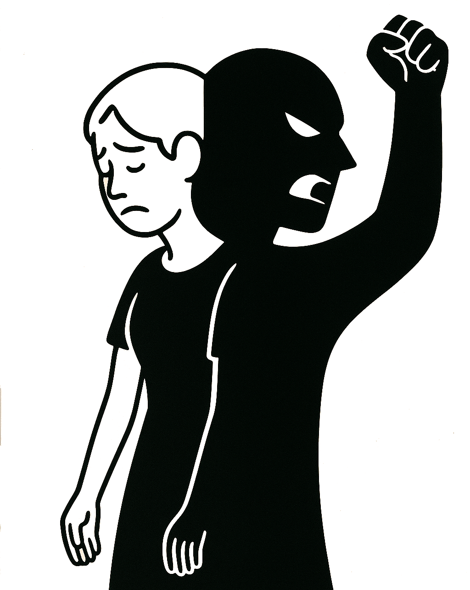
mi sitelen e pilin
poka open la mi sitelen e pilin pona
poka pini la mi sitelen e pilin anpa
pilin tu ni li utala
utala ni li lon lawa insa pi mama mi
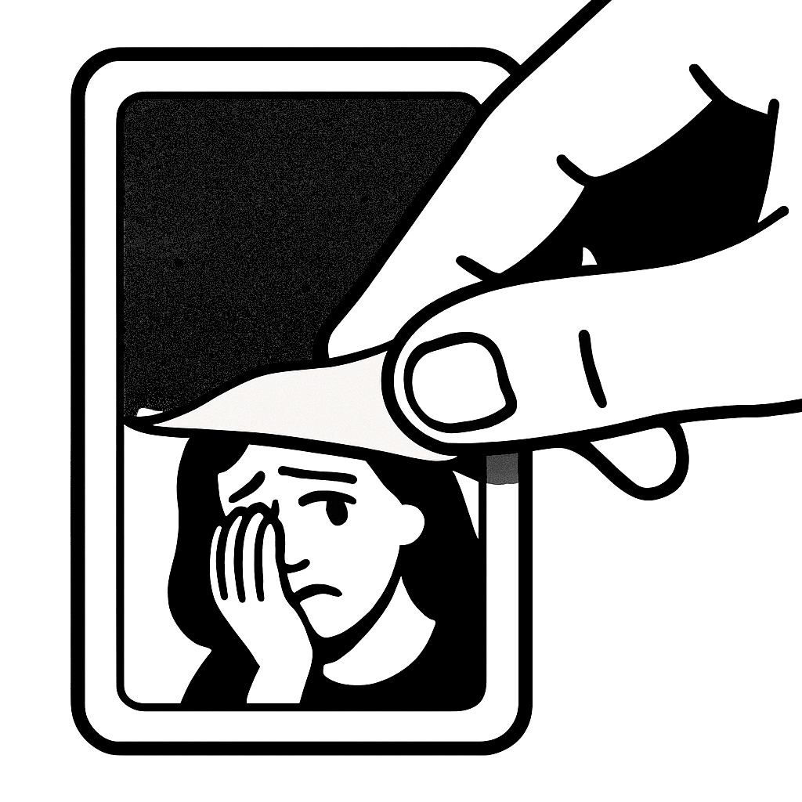
o len ala
lukin la mi pona a
sona la mi suli a
pilin la mi suwi a
mi wan a
o len ala a
o len
lukin la mi jaki a
sona la mi lili a
pilin la mi moli a
mi wan a
o len a
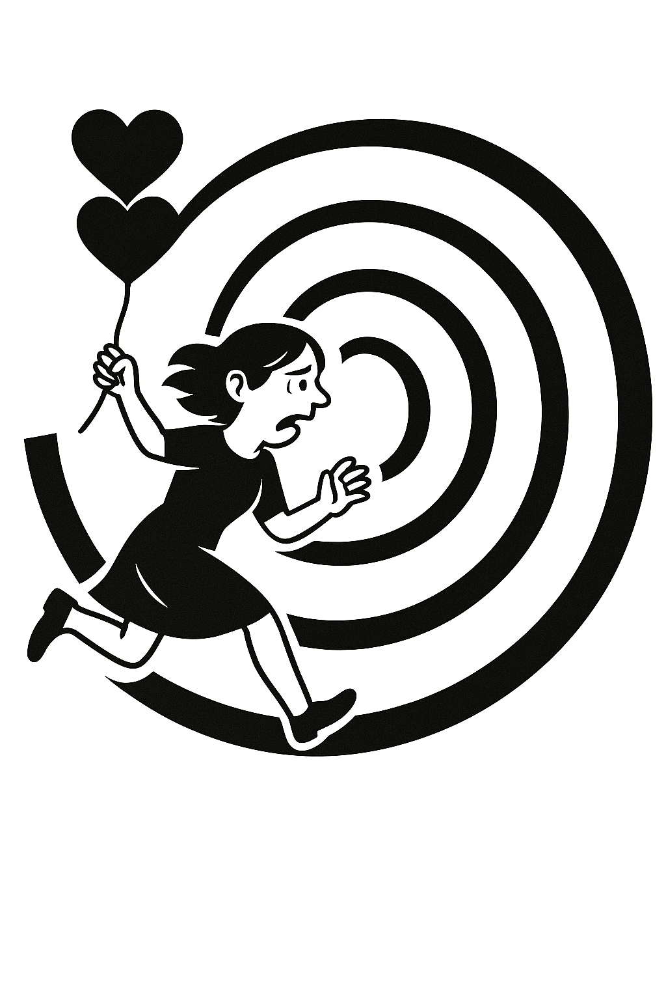
mi alasa e olin la mi tawa wawa a
tawa wawa mi li nasa
open tawa la mi wan
pini tawa la mi sona e jan mute
pilin anpa li weka
pilin pona li suli
pilin kulupu li pona
mi wan ala
pilin olin li ken open
tawa wawa mi li pana e pona
ken la jan wan la mi suwi
mi pona
mi suli
mi alasa e olin la mi tawa wawa a
taso tawa wawa mi li nasa
open tawa la mi wan
pini tawa la jan ale li weka
pilin olin li weka
pilin pakala li kama
pilin pona li weka
pilin anpa li kama
mi wan
tawa wawa mi li pana e ala
ken la jan ale la mi lili
mi ike
mi jaki
olin li seli
seli suli li ike
olin suli li ike ala ike
ike ala a
ona li seli e pilin
olin o kama
olin li seli
seli suli li ike
olin suli li ike ala ike
ike a
ona li seli e pilin
olin o weka
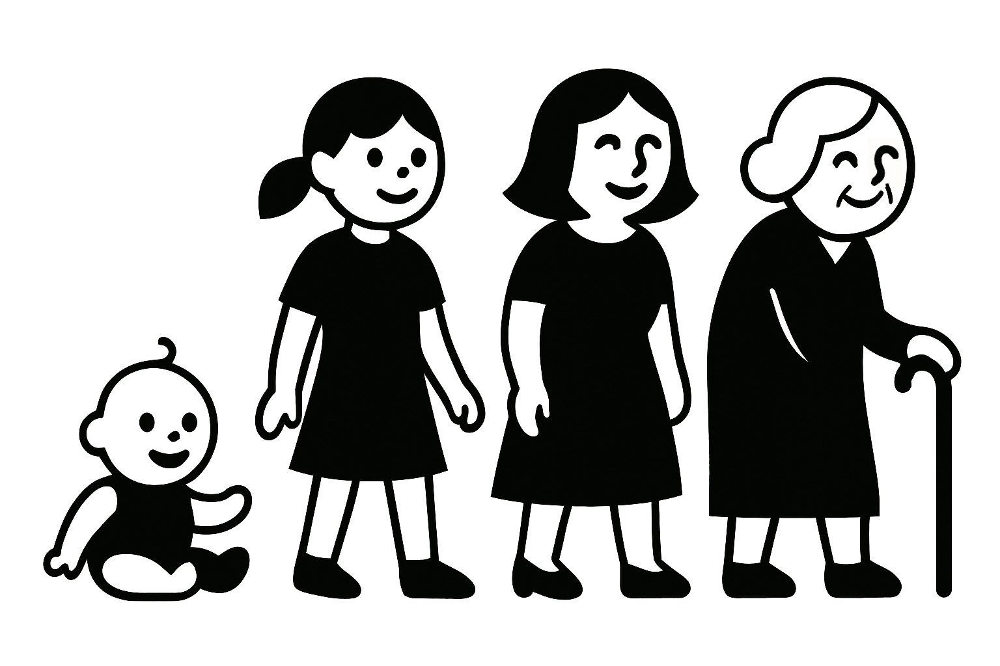
jan li kama lon la pakala li lon
jan li jo ala e mani la pakala li lon
jan li jo e mani mute la pakala li lon
jan li jo ala e pali la pakala li lon
jan li pali la pakala li lon
jan li wan la pakala li lon
jan li alasa e jan olin la pakala li lon
jan olin li weka la pakala li lon
jan en jan olin li kama wan la pakala li lon
jan olin li moli la pakala li lon
jan li lili la pakala li lon
jan li majuna la pakala li lon
jan li moli la pakala li lon
pakala li lon pi tenpo ale
pakala li lon la ale ala li ike
jan li kama lon la pakala li lon
jan li jo ala e mani la pakala li lon
jan li jo e mani mute la pakala li lon
jan li jo ala e pali la pakala li lon
jan li pali la pakala li lon
jan li wan la pakala li lon
jan li alasa e jan olin la pakala li lon
jan olin li weka la pakala li lon
jan en jan olin li kama wan la pakala li lon
jan olin li moli la pakala li lon
jan li lili la pakala li lon
jan li majuna la pakala li lon
jan li moli la pakala li lon
pakala li lon pi tenpo ale
pakala li lon la ale a li ike
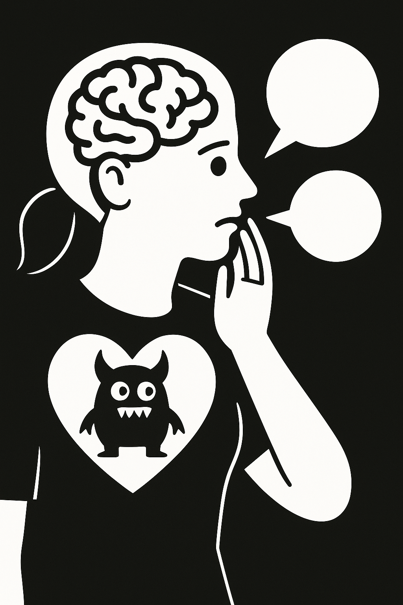
monsuta li lon insa pi pilin mi
monsuta ni li pana e pilin anpa tawa mi
lawa mi li pana e pilin pona
monsuta li mu
ona li wile moku e lawa mi li wile kama suli
lawa mi li mu
ona kin li wile moku li wile moli e monsuta
monsuta la mi monsuta
mi moku e ona
ona li suli ala
ona li moku ala e pilin pona mi
mi ken kute lili e monsuta
taso ona li awen lon insa mi
mi wile ala pana e moku tawa monsuta
monsuta li lon insa pi pilin mi
monsuta ni li pana e pilin anpa tawa mi
lawa mi li pana e pilin pona
monsuta li mu
ona li wile moku e lawa mi li wile kama suli
lawa mi li mu
ona kin li wile moku li wile moli e monsuta
monsuta la mi monsuta
mi moku e ona
ona li suli a
ona li moku e pilin pona mi
mi ken ala kute e pilin pona mi
mi ken kute e monsuta taso
mi pana e moku tawa monsuta tan seme
mama meli mi li pakala
toki insa ona la utala li lon
nasin nanpawan la ona li pilin pona li wile lon
nasin nanpa tu la ona li pilin anpa li wile moli
tenpo li kama li tawa
utala li kama ike suli
nasin nanpa tu li kama wawa
mama mi li moli
peto
lipu ni li toki e utala ona
sina pilin anpa lon tenpo suli la o toki tawa jan pona tan ni
tan jan Petokota
mi sitelen e pilin
poka open la mi sitelen e pilin pona
poka pini la mi sitelen e pilin anpa
pilin tu ni li utala
utala ni li lon lawa insa pi mama mi
o len ala
lukin la mi pona a
sona la mi suli a
pilin la mi suwi a
mi wan a
o len ala a
o len
lukin la mi jaki a
sona la mi lili a
pilin la mi moli a
mi wan a
o len a
mi alasa e olin la mi tawa wawa a
tawa wawa mi li nasa
open tawa la mi wan
pini tawa la mi sona e jan mute
pilin anpa li weka
pilin pona li suli
pilin kulupu li pona
mi wan ala
pilin olin li ken open
tawa wawa mi li pana e pona
ken la jan wan la mi suwi
mi pona
mi suli
mi alasa e olin la mi tawa wawa a
taso tawa wawa mi li nasa
open tawa la mi wan
pini tawa la jan ale li weka
pilin olin li weka
pilin pakala li kama
pilin pona li weka
pilin anpa li kama
mi wan
tawa wawa mi li pana e ala
ken la jan ale la mi lili
mi ike
mi jaki
olin li seli
seli suli li ike
olin suli li ike ala ike
ike ala a
ona li seli e pilin
olin o kama
olin li seli
seli suli li ike
olin suli li ike ala ike
ike a
ona li seli e pilin
olin o weka
jan li kama lon la pakala li lon
jan li jo ala e mani la pakala li lon
jan li jo e mani mute la pakala li lon
jan li jo ala e pali la pakala li lon
jan li pali la pakala li lon
jan li wan la pakala li lon
jan li alasa e jan olin la pakala li lon
jan olin li weka la pakala li lon
jan en jan olin li kama wan la pakala li lon
jan olin li moli la pakala li lon
jan li lili la pakala li lon
jan li majuna la pakala li lon
jan li moli la pakala li lon
pakala li lon pi tenpo ale
pakala li lon la ike li lon ala
jan li kama lon la pakala li lon
jan li jo ala e mani la pakala li lon
jan li jo e mani mute la pakala li lon
jan li jo ala e pali la pakala li lon
jan li pali la pakala li lon
jan li wan la pakala li lon
jan li alasa e jan olin la pakala li lon
jan olin li weka la pakala li lon
jan en jan olin li kama wan la pakala li lon
jan olin li moli la pakala li lon
jan li lili la pakala li lon
jan li majuna la pakala li lon
jan li moli la pakala li lon
pakala li lon pi tenpo ale
pakala li lon la ike li lon a
monsuta li lon insa pi pilin mi
monsuta ni li pana e pilin anpa tawa mi
lawa mi li pana e pilin pona
monsuta li mu
ona li wile moku e lawa mi li wile kama suli
lawa mi li mu
ona kin li wile moku li wile moli e monsuta
monsuta la mi monsuta
mi moku e ona
ona li suli ala
ona li moku ala e pilin pona mi
mi ken lili kute e monsuta
taso ona li awen lon insa mi
mi wile ala pana e moku tawa monsuta
monsuta li lon insa pi pilin mi
monsuta ni li pana e pilin anpa tawa mi
lawa mi li pana e pilin pona
monsuta li mu
ona li wile moku e lawa mi li wile kama suli
lawa mi li mu
ona kin li wile moku li wile moli e monsuta
monsuta la mi monsuta
mi moku e ona
ona li suli a
ona li moku e pilin pona mi
mi ken ala kute e pilin pona mi
mi ken kute e monsuta taso
mi pana e moku tawa monsuta tan seme
mama meli mi li pakala
toki insa ona la utala li lon
nasin nanpawan la ona li pilin pona li wile lon
nasin nanpa tu la ona li pilin anpa li wile moli
tenpo li kama li tawa
utala li kama ike suli
nasin nanpa tu li kama wawa
mama mi li moli
peto
lipu ni li toki e utala ona
sina pilin anpa lon tenpo suli la o toki tawa jan pona tan ni
jan Lakuse
lon ma pi tenpo kama la jan pi mani mute li pakala e ma e kulupu, la jan nasa Pensamin Panana li lukin utala sewi kepeken linja.
kon pi ma Sewiton li ike.
“o lukin a! lon sewi a! jan ni li pali e seme?”
insa pi ma tomo suli la ale li pali sama tenpo ale. kalama suli mute li tan tomo tawa mute, ale li tawa pali mani kepeken tenpo lili. taso, ona li kute e toki mu pi lukin sewi la, jan lili en jan mama en jan suli en jan mute li lukin tawa sewi,
tawa sewi pi tomo suli mani Akuson (tenpo poka la, jan lawa pi kulupu pali ona li unpa e jan lili li tawa poki pi jan ike), tawa sewi pi tomo suli Lamason (tenpo poka la, jan lawa pi kulupu pali ona li kepeken mani mute ona li tawa mun loje li kama sin ala), tawa sewi pi tomo suli Wana (tenpo poka la, jan olin pi jan lawa kulupu li toki suli e kama pakala telo lete seli pi ma ale li moli e ona sama), tawa sewi pi kon pimeja jaki, tawa sewi pi sewi ni
e linja lili wawa pimeja e jan pi len kule nasa.
linja li tu wan li wan e tomo suli tu wan sama selo pi sinpin tu wan. (tenpo poka la, jan lawa ma li pini e tomo sona ale li toki e ni: jan lili li wile ala sona e nanpa).
lon sewi a la jan pi ma anpa li ken ala lukin pona.
taso jan sewi li ken lukin e jan Pensamin Panana pi noka wawa pi kule mute. jan Pensamin li jo e linja lawa loje suli nasa e sike kiwen namako mute lon palisa luka ona. len suli wan pimeja li len e luka e sinpin sijelo e monsi sijelo e noka. sitelen sike lili mute pi kule mute li lon len pimeja: jelo wawa, en jelo loje, en loje walo, en laso kasi, en laso loje walo. sijelo pi jan Pensamin li suli tan sewi tawa anpa li lili mute a tan poka wan tawa poka ante. kon wawa li utala e ona la ona li ken tawa anpa kepeken tenpo lili.
taso, tenpo suno ni la kon ma li tawa wawa ala. lon sewi pi tomo tu wan pi suli nanpa wan lon ale pi ma Sewiton, lon lukin pi jan ale anpa, la jan Pensamin!
li lukin e ma ale anpa e walo ale sewi. jan Pensamin li ken ala lukin e mun loje, taso ona li sona e ni: jan ike li lon ni.
“jan sewi o!” la jan Pensamin Panana li toki kepeken kon ale ona. pilin ike. pakala, ona o moku e telo lon tenpo pini.
jan Pensamin li lon sewi a la jan sewi taso li ken kute e ona.
“sina pali seme a tawa ma mi Sewiton a! mi jan mije lili la pilin pona li lon. tenpo ni la pilin moli li taso! seme la sina weka e wile utala tan jan pi jo ala! jan mani li moku e ma e mani e mun. taso jan anpa li utala ala! ona li sama akesi linja pi sona ala!
lon la mi sona e ni: ona li utala ala tan seme. sina wile e pakala ale ni, li weka e ken utala ona!
jan sewi o, kepeken wawa ale la mi utala e sina! mi en sina o esun! o kama kute e mi!”
lon lukin pi jan Pensamin la kon jaki li tawa sike li selo sama leko, sama uta, sama nimi, sama pilin.
“sina kute e mi! jan sewi o! sina sona e nasin mi, a a! o sona e kama anpa sina!
nasin li ni! kepeken linja pi lili mute taso la mi tawa tan tomo Akuson tawa tomo Lamason tawa tomo Wana tawa open sin. kepeken ilo mi pi sike wan! tenpo sama la mi len e lukin mi kepeken ilo ni: ona li sitelen e ma ante! mi moli ala la, o tawa anpa e tomo tu wan lon tenpo ni!”
pini pi toki ona la jan Pensamin Panana li kama jo e ilo tawa pi sike wan lon luka wan e ma pi ilo ante lon luka ante. jan Pensamin li toki insa lili, li pana e ijo tu tawa supa anpa, li kama jo e sewi pi len ona pimeja kepeken luka tu, li tawa wawa pi poka ante e len li pakala wawa e ona. lon len ala, la sike tu ona pi anpa palisa li pilin e kon suwi pi sewi tomo.
jan sewi li lukin e jan Pensamin li sona e ni tan selo pi uta ona: jan Pensamin li pilin pona.
ilo pi ma ante li kama lon luka tu. luka li tawa sewi. luka li tawa anpa. ilo li kama lon lawa pi jan Pensamin li len e lukin ona.
ilo li open. lukin pi jan Pensamin en kute pi jan Pensamin li kama lukin e poka telo suwi. suno li kama tawa anpa lon ko loje jelo pi laso walo pimeja.
“jan Pensamin o?”
“a, jan Malowi.”
“sina pali seme? sona mi la sina o lon tomo pali lon tenpo ni.”
luka li kama lon anpa li alasa e ilo pi sike wan. “mi ken ala ken lon poka sina lon tenpo lili? mi pilin ike lon tenpo poka.”
“o kama lon poka mi. supa li lon. mi ken lukin e tawa anpa suno lon poka.”
monsi li kama lon supa monsi pi ilo tawa. noka li kama lon supa noka pi ilo tawa. jan Pensamin li awen ala li open e tawa li tawa sinpin tawa jan Malowi, tan tomo Akuson.
“o toki tawa mi. sina pilin ike tan seme?”
“lon la mi wile sona e ni: seme la sina ken pilin ike ala.”
“sina sona. mi awen lon ma ni pi lon ala. mi wile ala lukin e sewi jaki pimeja pi kama pakala. mi wile lukin e suno loje pona ni. ona li pona lukin anu seme?”
…
“jan Pensamin o, sina lon ala lon?”
“mi lon. mi kama tawa sina.”
“sina toki insa e ijo mute. o kute ala e toki insa ike. o kute e mi. ma li ike mute, taso mi pilin pona tan ni: sina alasa e pona ale pi ma ike ni. mi kute e toki sina la mi pilin pona. sina toki e utala pi tenpo pini pi ma Awisi la mi pilin pona. sina toki e sona ale sina la mi pilin pona. mi sona e ni: sina pilin a e ni: pona li ken.”
…
“jan Pensamin o, sina lon ala lon?”
“jan Pensamin o!”
“sina o awen.”
telo sijelo mute li kama tawa anpa lon monsi sijelo li lon anpa luka. noka li weka tan supa li kama lon tomo Lamason. luka li alasa e linja nanpa tu.
“o toki tawa mi e ni: mama sina li awen ala awen lukin kama e kili tan kulupu kasi ona?”
tenpo sin la noka li kama lon supa noka. sike li tawa sinpin.
“sijelo ona li awen kama ike li awen kama wawa lili lon tenpo suno ale. lon la mama li majuna a. taso wawa li lon ona la ona li tawa weka tomo li kama lon poka kasi. ona li pana e telo lili tawa kasi– telo mute li ken ala tan ni, kulupu lawa ma li awen lili e mute telo pi jan ale. taso ona li pana e telo lili li poki olin e kasi kepeken luka ona. ona li pana e uta ona lon poka kasi li toki suwi pi kalama lili e ijo mute. mi lukin e ona tan lupa tomo la mi ken ala kute e ni: ona li toki e seme. sina jo e kasi lon monsi pi tomo sina la, sina kama toki seme tawa ona? ‘kasi o, sina kin o kama utala e jan lawa ike’… anu seme?”
…
“jan Pensamin o, sina lape anu seme!”
noka li kama lon tomo Wana. ko nasa jelo en mu nasa li kama tan uta.
“jan Pensamin o, mu nasa ni li seme? sina moku e telo nasa pi mute suli ike anu seme?”
“sina sona e ni, mi nasa e mi kepeken telo ala.”
“telo, anu ko– ale li sama tawa mi.”
luka pi ko jelo li alasa e linja nanpa tu wan.
“mama sina li toki tawa kasi la ni li nasa ala nasa ike tawa sina?”
“tenpo pini la mama li toki tawa sewi la ni li nasa tawa mi tan ni: sewi li lon ala. ona li kama toki tawa kasi la, n. kasi li ijo lon anu seme. ni la nasa li kama lili. ken la ona li wile e ni: kasi li sewi. taso kasi ale li kama moli. ale li sona e ni. mi ale li kama moli. ala li ken pini e ni.”
“ken la jan sewi li ke– A”
sike li weka tan linja. jan li kama tawa anpa. a, moli li kama. sama tenpo ale la, jan anpa li ken ala anpa e jan sewi. lon lukin ala la sijelo li tawa wawa nasa e luka li alasa e–
linja. luka ko jelo li kama jo e linja. luka li ken ala ken awen jo wawa?
lon anpa la ilo pi sike wan li tawa anpa wawa li lukin kama moli e jan lukin wan pi mani mute. jan pi mani mute li tawa poka. ona li moli ala.
lon sewi la luka li lukin tawa sinpin. taso wawa lili a. ko jaki jelo a.
“lon la sina nasa e sina! sina ken ala tawa sinpin tawa mi. o kama, mi o jo e sina, o jo e luka mi.”
“jan Malowi o, mi lon ma pi lon ala. sijelo sina li sitelen taso. sina ken ala jo e mi.”
“o toki ala e ni. o pilin e ni: sijelo mi li lon. o luka e luka mi.”
luka tu li tawa sinpin
li tawa sinpin
li tawa sinpin
li tawa sinpin
li tawa sinpin
li tawa sinpin
li tawa sewi.
jan Malowi li mu musi. “o pilin a! sitelen li sama lon anu seme?”
noka pi jan Pensamin li kama sin lon tomo suli Akuson. monsi ona li kama supa lon supa poka pi jan Malowi.
ona tu li lukin e kama anpa suno li toki ala. jan Malowi li lukin e jan Pensamin. tenpo suli li kama li weka. jan Pensamin li lukin e jan Malowi.
jan Malowi li toki. “sina pilin ike la o sona: sina ken toki tawa mi.”
…
“sina pona. poka sina li pona mute tawa mi.”
“a, sina tawa lon tenpo ni anu seme?”
jan Pensamin li lukin sin e suno pi tawa anpa pi kama anpa ala. “mi ken lukin e suno ni pi tawa anpa lon ale pi tenpo kama. taso ona li kama ala lon anpa. ni li ike tawa mi.”
“sina wile e sewi pimeja, anu seme?”
jan Pensamin li lukin sin e jan Malowi e suwi ona. “ala. mi wile e kama ante.”
“tenpo pimeja li ike tawa mi. ma li lete. mi pilin monsuta.”
“mi sona. mi wile ala e pilin ike sina. mi o weka.”
jan Pensamin li weka e ilo pi ma ante tan lawa ona li lukin e sewi. jan Pensamin li tawa e noka ona li weka tan supa anpa li kama sewi sin e sijelo.
sewi li kama pimeja mute li kama kon mute. ona li ken pilin a kepeken nena ona e ni: telo li kama.
lon weka la mu sewi monsuta li lon.
“o utala linja e tomo tu wan ni, jan sewi o! mi moli ala la sina o kute e wile mi.
kepeken utala linja suno sina la o anpa a e tomo ni ike tu wan pi ma Sewiton. o kama tawa sinpin mi. o kama! mi awen.”
jan Pasijan
waso lili li ken ala weka tan poki ona lon insa pi tomo jan. taso awen la, waso lili li wile sona e ijo mute pi poka ona!
tenpo wan la waso lili li lon insa pi tomo waso. tomo li lili li lon insa pi tomo jan. sinpin pi tomo waso li palisa kiwen mute. taso kon li lon insa pi palisa kiwen. ni la waso lili li ken lukin e tomo jan tan tomo waso.
tomo jan la ijo mute li lon. taso tomo waso la ijo li mute ala. waso lili li lon anpa palisa. palisa ni li tan kasi suli li pona tawa pilin pi noka waso. anpa pi tomo waso li ko jelo. ko kin li pona tawa pilin pi noka waso. poki tu li lon tomo waso. jan li pana e moku tawa poki wan li pana e telo tawa poki ante. moku en telo li pona tawa uta waso.
waso lili li lukin e jan lon insa pi tomo jan lon tenpo mute. taso jan li lukin e waso lili lon tenpo pi mute ala. tenpo mute la jan li lon ala anu lukin e ijo nasa. ijo nasa li ken pana e kalama mute e kule mute. ijo nasa li ike ala tawa waso li pona ala tawa waso.
tomo jan la tomo kala li lon. kala mute li lon tomo kala. waso lili li pilin e ni: kala li sama waso lili. anpa pi tomo kala li ko jelo. jan li pana e moku. taso jan li lukin e kala lon tenpo pi mute ala. kala li ken ala weka tan tomo kala. waso lili li ken ala weka tan tomo waso. moku kala li pona ala pona tawa uta kala? ko jelo li pona ala pona tawa pilin pi noka kala? waso lili li sona ala.
soweli ante li lon tomo jan. tenpo mute la soweli li lukin e kala e waso lili. ken la waso en kala li pona tawa soweli. soweli li pona tawa waso lili tan ni: soweli li lukin e waso lili. taso tenpo la soweli li ike tawa waso lili. tenpo la waso lili li pilin e ni: soweli li wile moku. waso lili en kala li pona ala pona tawa uta soweli? waso lili li sona ala. taso waso lili li pilin ike tan ni.
tenpo suno mute la waso lili li mu. mu li pona mute tawa waso lili. waso lili li sona ala e ni: waso lili li mu tan seme? taso waso lili li pilin pona tan mu. ni la waso lili li mu.
mu li pona ala pona tawa kala? waso lili li sona ala. mu li pona ala pona tawa soweli? ni kin la waso lili li sona ala. taso waso lili li pilin e ni: ken la mu li pona tawa jan tan ni: mu li sama kalama pi ijo nasa. waso lili li pilin e ni: kalama pi ijo nasa li pona tawa jan. mu li pona tawa jan la ken la jan li wile lukin e waso lili lon tenpo mute.
tomo jan li lon insa pi tomo suli. waso lili li ken lukin e tomo suli kepeken lupa. lupa ni li lon sinpin wan pi tomo jan. waso lili li sona lili e tomo suli. waso lili li sona e ni taso: tomo suli li ante e kule ona. tenpo suno la kule pi tomo suli li ken laso. tenpo ante la kule pi tomo suli li pimeja. tenpo suno la suno wan suli li lon tomo suli. tenpo pimeja la suno lili mute li lon tomo suli.
tenpo la waso ante li tawa lon tomo suli. waso lili li pilin pona tan ni. waso lili li wile sona e ni: moku en telo li pona ala pona tawa waso ante? jan en kala en soweli li lon ala lon tomo suli? waso lili li sona ala e ni. taso waso lili li sona wawa e ni: waso ante li mu. waso ante li mu tan seme? waso lili li sona ala. taso waso lili li pilin pona mute tan mu pi waso ante.
tenpo suno wan la jan ante li kama. jan ante li lon tomo jan lon tenpo mute. ken la jan ante li pona tawa jan wan. jan ante li lukin e kala lon tenpo mute. kin la jan ante li lukin e waso lili lon tenpo mute. waso lili li pilin pona mute tan ni. waso lili li mu mute tan ni. ken suli la waso lili li pona mute a tawa jan ante!
jan ante li kama li pana e waso lili ante tawa tomo waso. waso lili li open e mu la waso lili ante kin li mu. jan en jan ante li lukin e waso lili tu lon tenpo mute li kute e mu pi waso lili tu lon tenpo mute. waso lili li pilin pona mute mute mute a!
waso lili li sona lili. taso waso lili li sona e ni: jan en jan ante en kala en soweli en waso lili ante li pona tawa waso lili. jan ante li kama la ale pi waso lili li kama pona mute. waso lili li pilin pona.
pini